| サクラ×サク 04 滅愛セレナーデ | |
| 十文字青 | |
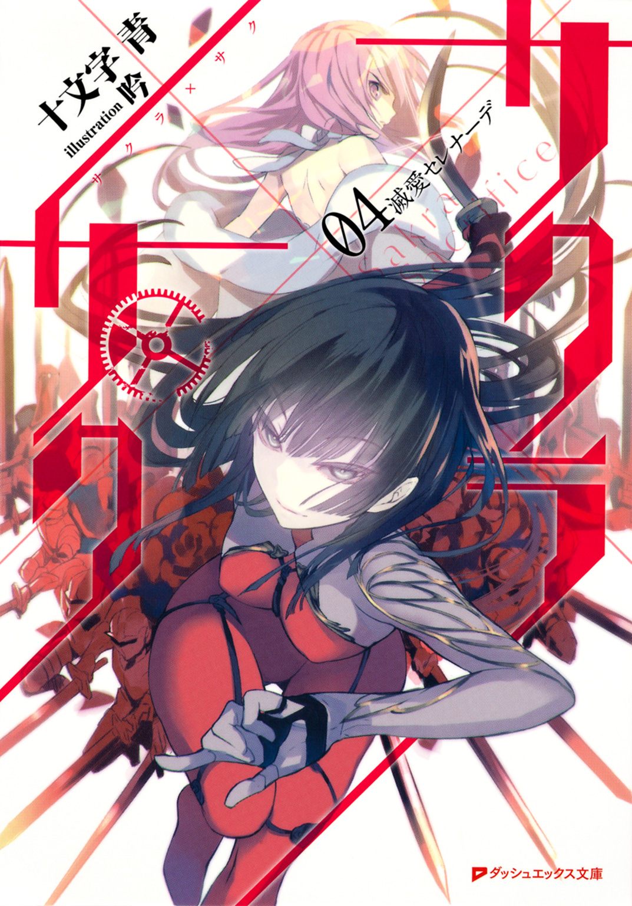
この本は縦書きでレイアウトされています。
また、ご覧になる機種により、表示の差が認められることがあります。
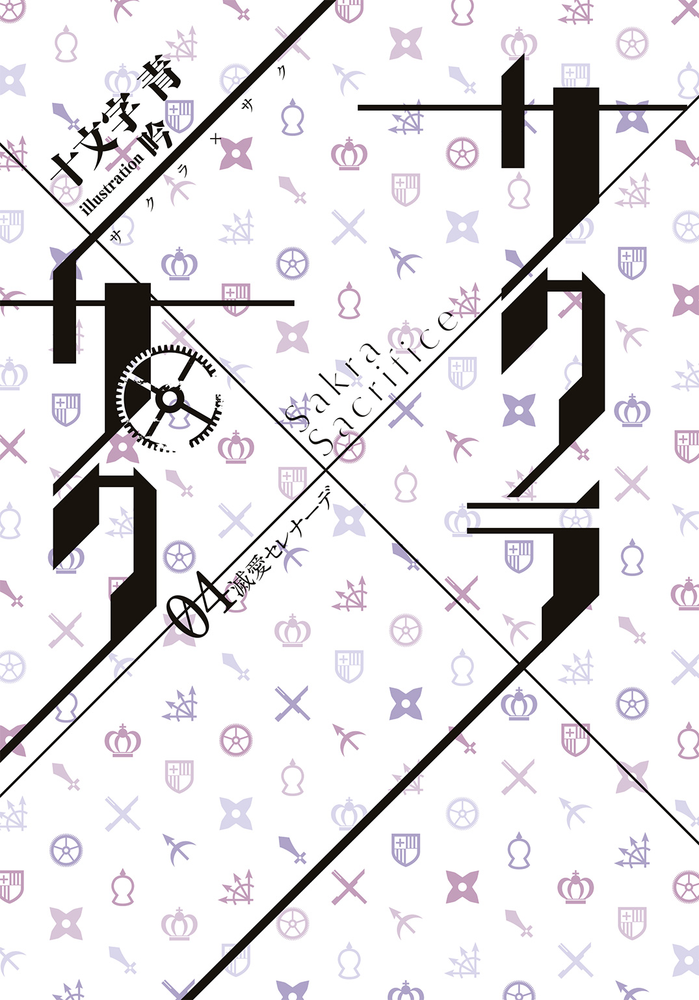
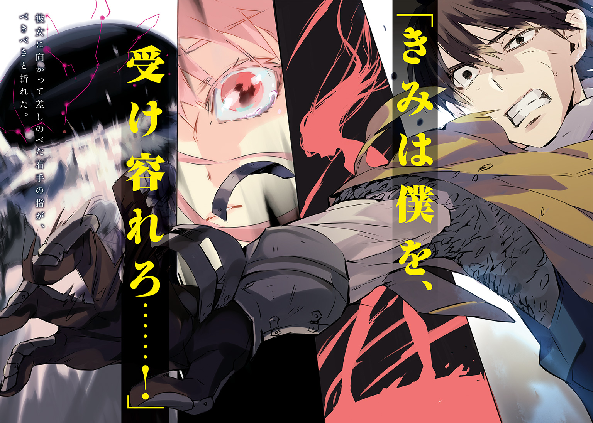
 ダッシュエックス文庫DIGITAL
ダッシュエックス文庫DIGITAL
サクラ×サク ０４
滅愛セレナーデ
十文字 青
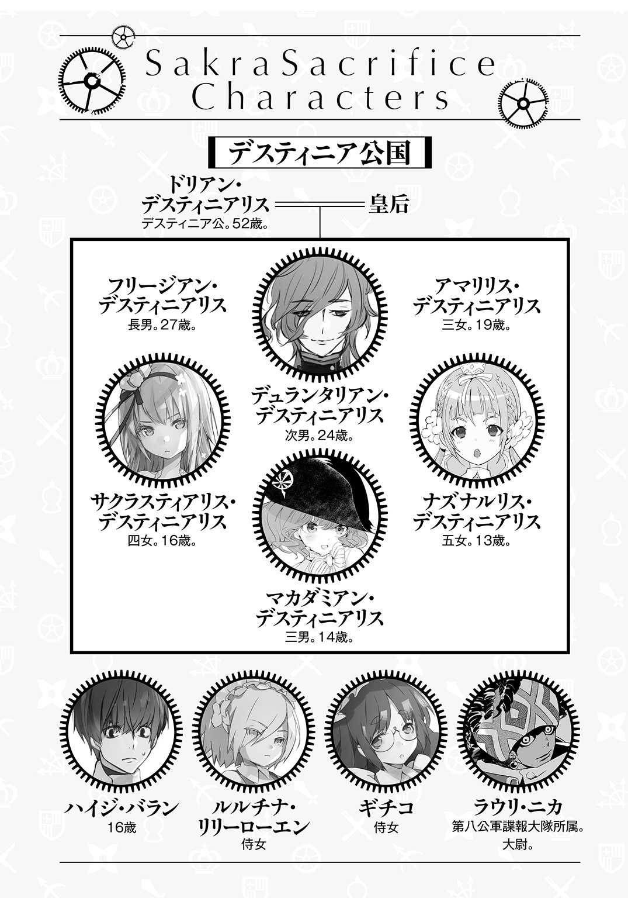
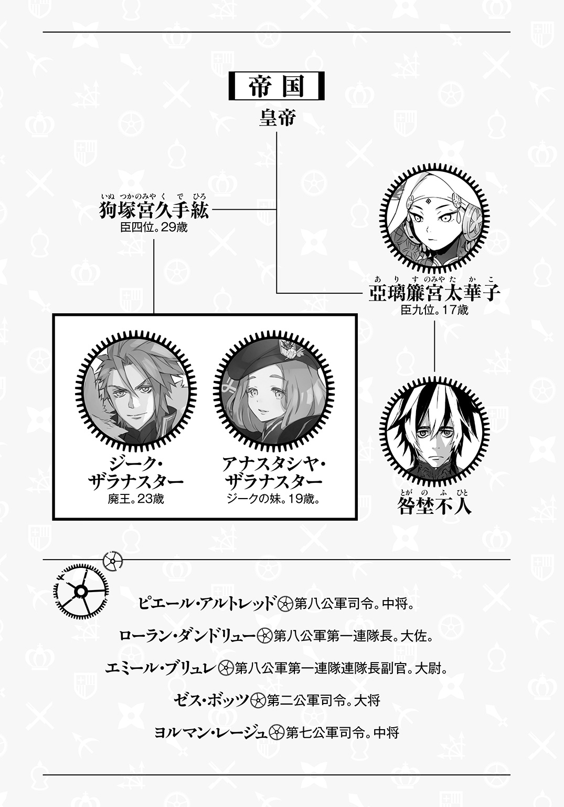
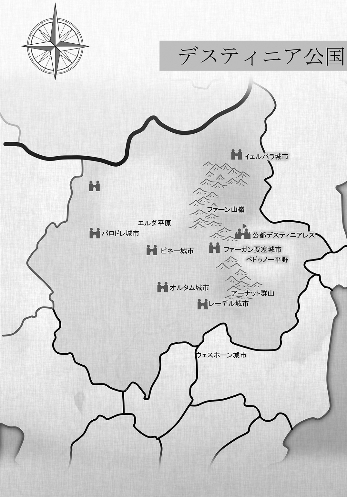
１ 僕の全てを君にやる YES JESUS YES
「どうしてもわからないな」
禁衣姿の亞璃簾宮太華子がほっそりした指で顎をつまみ、抑揚の少ない帝国の人語で静かに呟いた。
「なぜあの公国人はそうまでして死にたいんだ？ 私を手こずらせた優秀な軍略家だ。降伏すれば下民となるが、私が臣民に取り立ててやると言っている。いったい何が不満なのか」
ウェスホーン城市の焼け落ちた主城前の広場に引き立てられ、ひざまずかされているデスティニア公国軍の軍人三十余名は皆、士官以上だ。半数ほどが負傷していて、中には血塗れの重傷者もいる。
第二公軍司令ゼス・ボッツ大将も右肩に被弾し、顔面には火傷を負っていた。
ボッツ大将はウェスホーン城市の城門が破られても屈せず、主城を拠点として帝国軍に抵抗した。主城が陥落すると、部隊を小分けにして城市内に散らばらせ、それでいて巧みに連携させて、徹底抗戦を貫いた。人間のように気配りができない機士は掃討戦が苦手だ。大将はその弱点を衝いて、実に十日間も城市から一歩も出ることなく戦い抜いたのだ。
城門が突破されるまでの采配は、粘り強く堅実、とにかく隙が少ないという印象だったが、それ以後は一変した。帝国軍が捕らえた城市民を人質にして投降を迫っても受け容れず、実際に城市民の命を奪ってみせてもそれは変わらなかった。
通用しないとなると、帝国軍としてはその手は使えない。おそらく、人質が通じない、と帝国側に思わせることが大将の狙いで、そのためにあえて堪え忍んだのだろう。
大将の目論見は成功し、帝国軍は武力で公国軍の将兵を狩り立てるしかなくなった。亞璃簾宮太華子の五百十七侵攻団に、二百六、三百二十五、四百二十一各侵攻団が加わって行われた狩りは、困難を極めた。
それでも、亞璃簾宮太華子が機士ではなく軍士を駆使し、大将の居場所を突き止めた時点で、勝負は決した。
もともと五百十七侵攻団は他の侵攻団より軍士の数が多い。数だけではなく、練度も高い、優秀な軍士が揃っている。なおかつ、火縄銃など、他の侵攻団には配備されていない装備も行き渡っているのだ。
十一月十九日、昨日未明、五百十七侵攻団の軍士たちが大将の隠れ家を急襲。銃撃を受けて、大将以下、七名が負傷、十一名が死亡した。軍士の側にも八名の死傷者が出たほどの激戦だった。五十歳を超えている大将自ら軍剣を振るい、軍士を二人も斬り殺したというから、まったく尋常ではない。なお、火傷は主城陥落時に負ったものだとか。見るからに軽い火傷ではないが、そのせいで彼の戦意が衰えることはなかったようだ。
咎埜不人は１丈（約３ｍ）も離れていないところで地面に両膝をついているボッツ大将を見つめた。大将は後ろ手に縛られ、小股で歩くことしかできない足枷も嵌められている。うつむいているが、うなだれているようには見えない。
興味深いのは、他の公国軍士官たちが大将とまったく同じ姿勢をとっていることだ。そうしろ、と大将が命じたわけではあるまい。士官らは自然と大将に倣っている。そして、ただの一人として動揺するそぶりも見せずに、大将と運命を共にしようとしているのだ。
「......彼を殺したくないのですか」
不人が問うと、彼の主人である亞璃簾宮太華子はわずかに眉を上げた。
「殺すのはべつにかまわない。ただ、殺したら手許に置けないだろう。それが惜しい」
「......我が儘というものです」
「馬鹿なことを。私のような生まれ育ちで、我が儘にならないほうがおかしい」
「......たしかに」
「部下を全員助けてやるから私に仕えろと言っても、無駄かな？」
「......言ってみればいいのでは」
「あのな、咎埜。そこまで露骨なことは、いくら私でも言えない。それくらい察しろ」
「......おれは、わかった上で言っているんですが」
「そうだと思った」
主人は不人の尻を撲って、ため息をついた。それで思いきったようだ。
「ゼス・ボッツ大将以下、デスティニア公国軍士官諸君」
と、主人はカバラの言葉で言った。
「望みどおり、我が主上の名において、貴官らに死を贈ってやる。――ボッツ大将。何か言い残しておきたいことがあれば、聞くが？」
「されば――」
ボッツ大将は面を上げた。焼けただれた半面にまで笑みが浮かんでいる。
「帝国の小娘よ。俺は天性の戦下手ゆえ貴様に負けたが、我が公国には俺の百倍強い軍人が五万とおる。俺ごときが今日、死んだところで、我が公国は小揺るぎもせん。一つだけ残念なのは、小娘、おぬしが我が公国軍に踏みにじられ、無残な死骸と成り果てるところを拝めんことだ。それだけがまことに心残りでならん」
「私は貴官を買いかぶっていたようだ」
主人は片手を挙げた。
「負け惜しみしか言えないとはな。つまらない。どうやら貴官はすでに出がらしのようだ。手許に置いたところで、もはや何の役にも立つまい。――楽にしてやれ、咎埜」
「......御意」
不人は太刀を抜いて進みでた。
ボッツ大将が不人を睨みつける。大将だけではない。三十余名の士官たちが一斉に顔を上げて、燃え盛るような目で不人を見すえた。
反撥。憎悪を超えた敵愾心。末代まで祟ると言わんばかりの恨み。不人はそれらを一身に浴びて、微塵も怯まない自己を不思議とは思わなかった。主人の命令であれば、糞尿でも喜んで啜る。怨嗟など恐れはしない。怖いわけがない。
「デスティニア公こ――」
ボッツ大将は最期に、公国万歳、とでも叫ぼうとしたのかもしれない。
させなかった。
不人は太刀を振り下ろして、大将の首を刎ねた。
「司令っ......！」
「ボッツ大将ぉぉぉーっ......！」
「大将ぉぉぉぉっ！」
「帝国め......！」
ようやく士官らが騒ぎはじめた。
不人が手を振ってみせると、操手に操られた乙機士たちが静かに士官らに迫ってゆく。
主人は踵を返した。
「次だ、咎埜」
「......はい」
不人は太刀を鞘に収めながら大股で歩いて、間もなく主人に追いついた。
主人は後ろでも斜め後ろでもなく、真横にいる不人をちらっと見て、軽く肩をすくめた。
「粘られたせいで、思ったより時間をとられた。勉強にはなったがな」
「......他の重要拠点は、まだ陥ちていないようです」
「一応、我々が一番乗りか。でも、カバラ大王国は風前の灯火だ。狗塚宮の手柄は大きい」
主人は十歳以上年上の狗塚宮久手紘にだいぶ対抗者意識を持っているようだ。主人が他者に拘泥することは非常に稀なので、不人としてはおもしろい。
あるいは、主人は狗塚宮久手紘に惹かれているのかもしれない、と考えてみた。
広い帝国を見渡しても、狗塚宮ほど才気走っていて、誰も無視しえないほどの実績を積み上げている男はいない。外交官だとはいえ、事実上の降伏勧告を行う際、敵国に自ら乗りこんでゆく胆力の持ち主でもある。むろん、帝国の使者に危害を加えたとなれば、ただではすまない。相手国としても、帝国の使者は厳重に警護する。そうはいっても、血迷った者に襲われる危険はありすぎるほどにあるのだ。頭の中で絵図を描くだけの小利口な男でも、口先だけの男でもないことは間違いない。
主人が伴侶に選ぶとしたら、たとえば狗塚宮のような男だろう、と不人は思う。お互い宮家の人間だし、家格も釣り合っている。申し分がない。
「おい、咎埜」
主人が急に足を止めたので、不人も立ち止まった。
「......何でしょう」
「おまえが今、何を考えているか、当ててやろうか」
「......当てたら、褒めてさしあげます」
「ずいぶん偉そうだな」
主人は両方の腰に手を当てて首を傾けた。妙に稚気に富んでいる仕種だ。
「狗塚宮のことだろう？ あれと私が結婚したらどうなるかとか、考えていなかったか？」
「......ご名答です」
さすがに驚いた。動転したと言っても噓にはならない。
「......よくわかりましたね」
「おまえが私に仕えて何年になると思う？ おまえの頭の中身なんて、ぜんぶお見通しだ」
「......本当にそうですか？」
「ああ？ どういう意味だ？」
「......いいえ」
不人は笑ってみた。今度は主人が虚を突かれて、驚いたようだ。
いい気味だ、と不人は思った。
あなたをもっと驚かせることも、きっとできなくはないが、元自由民の自分は、それをしない。決してしない。自分を拾ってくれた先代亞璃簾宮、主人の祖父への義理、感謝がある。それから、忠誠心もある。そして何より、自分は命ある限り、主人のそばにいたい。だから、自分はそれをしない。思うこともない。封じこめて、生涯、とりだすことはない。徹底的に封じこめているから、たとえあなたが狗塚宮と夫婦となり、子をなしたとしても、揺らがない。
「......何でもありません」
「ふん」
主人は不人の返事が気にくわなかったようで、足早に歩いて不人を引き離そうとした。
逃げられるわけがないのに。そう。逃がしはしない。
不人は黙って主人を追いかけ、労せず追いついた。
「......次、ですね」
「そうだ」
主人は言うなり、不人の脇腹を小突いた。
「......何です？」
「なんとなくだ！ 悪いか？」
答えを知っているくせに、主人は不人に尋ねるのだ。
主人に尋ねられれば何度でも、わかりきったことを不人は答える。
「......いいえ。亞璃簾様、あなたはいつも正しい」
×
西の要であるウェスホーン城市を抜けば、デスティニア公国の心臓部への道が一気に開かれる――とまで言ってしまうと、やや語弊がある。
ただ、ウェスホーン城市の先には肥沃なエルダ平原が広がっていて、大きな城市が点在している。どの城市も地勢的に守りやすいとはとても言えない。しっかりと舗装され、抜かりなく整備されている大きな街道が張り巡らされたエルダ平原は、デスティニア公国を支える一大穀倉地帯であり、商業地帯でもある。公国の心臓である公都デスティニアレスは、エルダ平原の東に位置している。
十一月二十二日、亞璃簾宮太華子率いる五百十七侵攻団はパロドレ城市、二百六侵攻団はカラン城市、三百二十五侵攻団はリンファール城市、四百二十一侵攻団はロイソン城市へ向けて、それぞれ進軍を開始。ウェスホーン城市の占領はウェスホーン占領団に委ねられた。
五百十七侵攻団がパロドレ城市攻略に着手したのは十一月二十五日。パロドレ城市の公国軍は籠城を選んだ。
もっとも、公国軍がパロドレ城市の城門を閉ざしたときにはすでに、先発した五百十七侵攻団の軍士数十名が城市内に潜入していた。軍士の中でもとくに、諜報工作員として訓練を受けた精鋭だった。彼らはウェスホーン城市の惨状や、各地で帝国軍が公国軍を圧倒している様子、カバラ大王国の崩壊について盛んに喧伝し、市民の動揺を誘って、守兵の士気をも大いに低下させた。さらに、帝国軍に降伏すれば人民として生活権が保証されること、帝国軍の攻撃を受けてから降るのでは遅いことを説いて回り、市民の一部を造反させた。
十一月二十六日未明、造反市民と、これに協力した守兵若干名の手により、パロドレ城市の城門が開けられた。
五百十七侵攻団は城市外へ逃げだした造反市民と守兵と入れ代わりに、城市内へと突入。公国軍は大混乱に陥り、パロドレ城市守備隊長エッソン大佐が軍門に下ると、他の公国軍兵もぞくぞくと投降した。
「参ったな」
パロドレ城市主城には高い塔が備わっていた。不人の主人は戦いが一段落つく前からその塔に目をつけて、登りたがっていた。不人が主人の望みを叶えてやることができたのは、落日が沈みきる直前だった。
「次の占領団が追いついてくるまで、我が侵攻団は先に進むことができない。大問題だ」
「......カランも、リンファールも、ロイソンも、まだ陥ちていません」
「他の侵攻団の手助けでもするか」
「......我が五百十七侵攻団の軍士たちは、どの戦場でも役に立つでしょう」
「あたりまえだ。私が仕込んだんだから」
「......実際に訓練の計画を立てて実行させたのは、おれですが」
「私がおまえに命じてやらせたんだ」
「......おっしゃるとおりです」
「いいか、咎埜」
「......はい」
「おまえは私の腕だ」

「......はあ」
「おまえは私の脚でもある」
「......なるほど」
「ついでに、おまえは私の目だ。耳でもある」
「......そうですか」
「そうだ。言うなれば、おまえは私なんだ」
主人はいきなり不人の胸倉をつかんだ。引っぱられたが、不人は微動だにしなかった。主人はあからさまにむっとした。
「おまえな。こういうときは逆らうんじゃない」
「......ご命令とあらば」
「抵抗するんじゃないぞ？」
「......ええ」
「咎埜」
主人はもう一度、不人の胸倉をつかんだ手を自分のほうへと引き寄せた。不人は、今度は引かれるまま、腰を屈めた。
主人は踵の高い靴を履いている。それでも、不人のほうが頭一つ分は大きい。不人が腰を屈めても、主人と目線の高さが同じになることはない。
だが、距離は狭まる。
不人は、主人の銀色に輝く瞳に見入ってしまいそうになり、目をそらした。
「いいか、咎埜。おまえは私になるんだ。もう一人の私に」
「......簡単に言ってくれますね」
「簡単にやってくれないと困るからな。私は躰がもう一つ欲しい。もちろん、不可能だ。だから、おまえがそれになれ」
「......おれが、もう一人の亞璃簾様に」
「そうだ」
「......似ても似つかない」
「いつもどおりだ。おまえは私が望む役割を演じろ」
「......返事はいりませんね」
「ああ。いらない」
主人は不人の胸倉から手を放して、今まさに完全に沈もうとしている太陽に視線を転じた。
「軍士四十名を率いて、露払いをしろ。楽しそうだし、私がやりたいくらいだが、そうもいかない」
「......おれがそばにいなくて、平気ですか」
「いささか不便だ」
「......そうでしょうね」
「おまえこそ、私から離れて大丈夫か？」
主人は微かに笑いながら横目で不人を見て問うた。
不人は答えなかった。主人に尻を叩かれたが、答えてなどやるものか。
×
パロドレ城市から公都デスティニアレスへの経路は幾通りもあるが、大きく分けて三つだ。
ペーン川とイショール川を船で渡らなければならない、北回り経路。
それから、ペーン川は支流と本流の橋を渡り、イショール川は船で渡河する南回り経路。
そして、北回りと南回りの真ん中を突っ切る、距離的には最短だが、ファーガン要塞城市を突破しなければならない、中央経路。
ファーガン要塞城市は、城市としての規模はさして大きくないが堅守を誇り、第五、第六公軍の拠点となっている。公都デスティニアレスから近く、言ってみれば出城のような存在だ。公都を先に攻めればファーガン要塞城市が援軍を繰りだしてくるし、ファーガン要塞城市の攻略を目論むとしたら公都に駐留している公国軍を気にしなければならない。
採りうる手段は、基本的には三つ。
まずは、公都に速攻をかけて陥落させる。公都が陥ちてしまえば、ファーガン要塞城市にいくら戦力が残っていても、あまり意味がない。
もしくは、ファーガン要塞城市を無力化してから、公都を攻める。
むろん、公都とファーガン要塞城市を同時に攻撃してもいい。ただし、公都デスティニアレスは巨大と言ってもいい大都市なので、包囲するだけでそうとうな兵力が必要だ。加えて、ファーガン要塞城市の第五、第六公軍、あわせて四万超の大部隊を相手にするとなると、並大抵ではない。
結局、ファーガン要塞城市の無力化こそが、鍵となる。
咎埜不人は五百十七侵攻団の軍士四十名を引き連れて、十一月二十七日の早朝にパロドレ城市を出発した。
エルダ平原には城市の数の何十倍もの農村、デスティニア公国風に言えば、邑がある。エルダ平原の耕作可能な土地はすべて、いずれかの邑の領域だといっても過言ではない。
不人が学んだ知識によると、邑が大きくなって、居住域に城壁を張り巡らすようになり、都市国家の体をなした。都市国家同士が離合集散、やがて王国となり、王国同士が相争う中で同盟関係や従属関係が生まれ、王族、貴族といった特権階級が形成されていった。
しかし、エルダ平原を埋め尽くしている邑の大半は、そうした自然発生的に築かれたものとは違うようだ。
エルダ平原も、最初から沃野だったわけではなく、治水技術の発展によって、徐々に農地として開発されていった。かつてカバラ大王の臣下だったデスティニア公は、そうした新規開発地に民を移住させ、人工的に邑を作らせたのだ。そのため、エルダ平原の邑の多くには、防衛用の設備がろくにない、という特色がある。
パロドレ城市近郊の邑々は、さすがにほとんどの住民が避難していて、もぬけの殻に近い状態だった。
だが、騎馬で半日も東進すると、農作業や家畜の世話に従事している農民の姿がちらほら見られるようになった。
不人は馬を煽って自ら先頭に立ち、そうした農民を襲撃した。殺戮する必要はないが、何人かは殺してみせねばならない。それならば、自分の手を汚すことを不人は選んだ。無辜の民を殺害して痛むような心など、もとより持ちあわせてはいない。人と見なされることのない幼年期を過ごした不人は、人を人とも思わなかった。
不人にとって、人は二種類しかいない。自分にとって大切な人間と、そうではない人間だ。そして、大切な人間は、突きつめればただ一人――主人だけだった。
人を殺したいわけではないが、殺す必要があるのなら飯を食らうように殺せる。農民を馬に蹴飛ばさせても、踏ませても、何とも思わない。馬上で太刀を振るい、腕を斬り飛ばす。首を刎ねる。何をしようと、不人は一向に平気だった。
農民たちは恐れ、逃げた。追いかけて何人か殺し、軍士たちに殺させると、馬首を巡らせて別の邑へと向かった。そこでまた殺した。
日が暮れてからもう一つ邑を襲い、各自、空き家で睡眠をとると、長駆して邑を三つほど行きすぎた。その先の邑で農民を殺して回り、その隣の邑でも一暴れした。軍士たちは火縄銃を装備している。弾薬はそれなりに貴重だが、この邑で各人一発ずつだけ発砲させた。
不人たちを妨げる者はいなかった。邑への接近もたやすかった。それには明確な理由がある。これは軍事行動であり、作戦だ。当然、無策ではない。単純で、必要な物さえ準備できれば子供でも可能だが、あるいは卑劣と見なす向きもあるだろう、一つの工夫をしていた。
亞璃簾宮太華子の命により、五百十七侵攻団はウェスホーン城市で公国軍の軍服を大量に鹵獲した。不人と四十人の軍士はそれを身につけていた。
つまり、偽装だ。
不人たちは公国軍の小部隊を装って邑に近づき、農民らを殺した。
三日、四日と、襲撃及び物資調達のための略奪を繰り返して、ようやく五日目に不人は公国軍の部隊を目視した。偽装がばれたか、不逞軍人の集団が蛮行に及んでいるとの虚報が公国軍側に伝わりでもしたのか。いずれにせよ、警戒、討伐のために派遣された部隊だろう。
規模は五十人といったところで、騎兵が一割ほど、あとは歩兵だ。不人の読みでは、こちらの兵力は過大に見積もられているはずだった。あの人数だと、本隊とは思えない。偵察目的の先遣隊ではないか。
不人は交戦せず、急ぎその場を離れて、別の邑を襲った。農民たちの対応が明らかに変わっていた。当初は不人らを見て即座に逃げだす農民などいなかったが、今はもう遠目に騎影を見ただけで身を隠したり、反対方向へ走ったりする者も少なくない。農民たちは知っているのだ。兵隊が邑々を襲っていることを。情報は広まっている。ただ、農民風情に本物の公国軍兵と偽物の不人らとの見分けはつくまい。彼らはすべての兵隊を怪しんでいるのだ。
不人らは南回り経路でイショール川にまで達し、その間、四十六の邑で数百人の農民を殺害した。それまで公国軍の部隊とは一切、戦わなかったが、とうとうイショール川沿いで五十人ほどの小部隊に出くわしてしまった。
不人は軍士四十人に一斉射撃を行わせ、浮き足立った公国軍部隊に騎馬突撃を敢行した。勝敗はあっという間に決した。むろん、不人らが勝った。敵は半数近くが死ぬか戦闘不能に陥るかした段階で潰走しはじめた。不人はこれを追わせた。五人ほど取り逃がしたが、あとは死体と瀕死の重傷者だった。軍士は三人負傷したが、いずれも軽傷だった。移動にも戦闘にも支障はない。
不人は重傷者にとどめを刺していった。三人だけ、あえて見逃した。
死んだふりをしている敵の重傷者に聞こえるように、不人はわざとカバラの言葉で話した。
「よし。これで口封じは完了だ。そろそろ戻るぞ。おまえたち、誰にもばれないように、くれぐれも用心しろよ」
軍士たちは「はっ！」と応じて公国式の敬礼をした。その程度の演技は軽々とやってのける連中だ。
その後、不人は数名の軍士を伴い、他は潜伏させて、イショール川沿岸のピネー城市に潜入した。もちろん、軍服ではなく、略奪で入手した公国人の普段着を身につけた。
通行が厳しく制限されていて、城門から入るのは無理だった。河岸の邑で小舟を盗み、夜の間に河港から入りこんだ。
ピネー城市の守備隊はすでに戦闘態勢に入っていて、近隣の邑からの避難民受け容れも始まっている様子だった。日常生活はつつがなく送られているが、いつそれが破壊されてしまうかもしれないという恐怖や不安は、城市中に色濃く立ち籠めていた。
市場や酒場などで住民から話を聞くと、三百二十五侵攻団がリンファール城市を陥落させ、五百十七侵攻団は占領団にパロドレ城市を委ねてマール城市を攻囲しているらしいとわかった。戦況は刻々と変わるので、今現在どうなっているかは不明だが、主人が不人なしで侵攻団を動かしていることは間違いない。
主人は決して万能ではなく、むしろ偏りが大きい人だ。かといって、身の回りのことができないわけでも、運動神経が鈍いわけでもない。おそらく、やれば何でもできるだろう。ただ、やろうとしないことがいくつもある。
たとえば、主人は他人にふれることも、他人にふれられることも好まない。ゆえに、護身術の訓練をまともに受けたことがない。意外なほど身軽だし、武芸や武具の知識はあるが、刀剣を振り回したこともほとんどないはずだ。宮家の人間でなければ、軍務に就くことすらできていないだろう。
偏食も激しい。獣肉全般が嫌いだ。魚も白身で臭みがない物しか食べない。野菜も好まず、果物だけで生きてゆけると豪語している。穀類は栄養の摂取効率の観点から、仕方なく食べることにしているらしい。だが、果物が豊富にあれば、麦も米も豆も拒む。水も、可能な限り、果汁で軽く香り付けしたものを飲んでいる。酒は上等な果実酒にしか口をつけない。
他にも、余人には理解しがたい儀式のような習慣を、不人の主人はいくつも持っている。屋内には必ず左足から踏み入れるとか、手の洗い方であるとか、何かの折に唱える意味不明の謎めいた言葉であったりとか。
不人の役割は主人の補佐だけではないのだ。
主人がやりたがらないことを、やらずにすむように手配する。主人が飲食したがらない物を何気なく遠ざける。主人の習慣を誰にも邪魔させないように手を回す。
こうした膨大と言ってもいい事々を、欠かすことなく、遅滞なく、日々、終日、実行しつづける。
そのために、主人のそばにいる。
それが不人の仕事だった。使命であり、不人のすべてだった。
主人はどうしているだろう？ 間違いなく不便を強いられているはずだ。主人の苛立ち、不平、不満が目に浮かぶ。だが、考えたくない。考えないようにしていた。主人から離れてエルダ平原の公国民と公国軍を攪乱する。それが主人の命令だった。命令にはもちろん従う。そうするためには、主人の身を案じることを自らに固く禁じる必要があった。
さもなければ、精神の均衡を保つことができない。
主人はどうしているだろう？
そう思うだけで、不人は叫びだしたくなる。飛び跳ねて、転げ回りたい。何より、主人の許へ飛んで帰りたい。
主人の命を果たすには、主人を忘れねばならない。
だが、主人を忘れることなどできるはずがない。
実のところを、不人はいまだこの二律背反を解決する方法を見いだしていなかった。
ゆえに、この作戦には苦しみしかないが、しくじるわけにはいかない。
不人らは夜半、公国軍の軍服に着替えて、民家に押し入った。軍士に婦人を失神するまで激しく暴行させ、家主とおぼしき男と老婆を殺して、三人の子供は縛りあげた。金目の物を盗んで民家をあとにした。同様の強盗殺人を矢継ぎ早に重ねてからピネー城市を脱出し、軍士たちと合流した。避難しきっていない周辺の邑を襲いつつ、軍士数名に情報収集を行わせると、脱走兵の噂が耳に入ってくるようになった。
曰く、帝国軍はすぐそこまで攻め入ってきている。
曰く、公国軍は劣勢である。
曰く、帝国軍は精強にして無慈悲である。しかし、降伏すればむごい扱いは受けない。
曰く、公国軍は弱腰である。劣弱である。
曰く、公国軍の軍紀は乱れている。脱走者が相次いでいる。
曰く、脱走者の中には野盗と化して、邑を荒らし回っている者たちまでいる。
曰く、公国軍は脱走兵の鎮圧に動いているが、成功していない。
曰く、脱走兵の鎮圧に向かった公国軍の部隊が、邑を略奪する事件も起こっている。
曰く、公国軍の敗色は濃厚であり、このままでは公国は帝国に制圧される。
事実におひれがつき、ねじ曲げられて、拡大解釈され、ゆがめられて、虚実が入り交じり、公国人を大いにうろたえさせ、混乱させている。拍車が掛かった混乱は虚を実に転換させ、さらに情勢を混沌とさせる。
もともとは脱走兵などいなかった。だが、公国軍の下士官以下は志願兵だ。しかも、徴募官にはある期間内に何人の志願兵を採用しなければならないといった目標が課せられている。地域社会の鼻つまみ者や、孤児、生活能力を持たない者が、ほとんど強制的に志願兵に仕立て上げられる事例もめずらしくないという。そうした意欲の低い、戦闘者としての質も劣等な兵卒は、軍内部でも数合わせの材料としか見なされまい。侮蔑され、軽んじられて、虐待されるようなこともありうる。彼らに、公国軍への、そして公国に対する忠誠心を期待するのは無理があるというものだ。
どのみち、戦いになれば、彼らは最前線に追いやられて、真っ先に死ぬことになる。しかも、彼らの国は負けるかもしれない。負ける国のために死ぬのでは犬死にだ。
このまま軍にいたところで、手柄を立てて昇進できる見込みもない。仮に戦場で死なずにすんでも、その先に何がある？
ならば、軍から離脱して、装備一式、持ち逃げしてやれ。なんでも、脱走兵は他にもいて、あちこちで女たちを犯し、食い物だの何だのを強奪しているらしい。うまいことをやっている者がいるのだ。真似をしたらどうだ？ しくじって軍に追い回され、討たれる羽目になったとしても、元味方に殺されるか、敵に殺されるか、違いといったらそれだけだ――。
こうして、流れは生まれた。
あとは不人たちが介入せずとも、自ずからうねり、広がって、どんどん激しさを増してゆくだろう。
×
十二月二十二日。
五百十七侵攻団は、マール城市とエセーナ城市の中間地点で、デスティニア公国軍第七公軍と激突した。
ヨルマン・レージュ中将率いる第七公軍は、全軍に横隊を形成させ、薄く広く展開させて、五百十七侵攻団に百八十度から二百度の半包囲攻撃を仕掛けた。これはレージュ中将の得意とする戦術であり、その実行のために第七公軍は特別な戦闘訓練を課されるという。
戦闘に参加しない死兵を極力作らず、戦力を最大限に有効活用する半包囲攻撃の苛烈な圧力を受けて、五百十七侵攻団は見る間に崩れたった。恐怖心を持たない、それどころか感情があるかどうかすら定かではない、人ならざる機士にしては脆すぎる。レージュ中将や、第七公軍の幕僚たち、前線の指揮官らは、あるいは怪しんだかもしれない。
しかし、勝勢に乗じず、さらに一押しすることを思いとどまるような余裕など、公国軍にはなかった。
ウェスホーン城市陥落以降、公国軍は負けつづけている。いくつもの城市が攻め落とされ、公国軍兵の死傷者は二万人を超えていた。勝利が必要であり、求められていた。
第七公軍は五百十七侵攻団を押して押して押しまくった。五百十七侵攻団は押されに押されてずるずると下がり、ついにはマール城市まで後退した。
五百十七侵攻団はマール城市に逃げこもうとした。籠城させてなるものかと、第七公軍は五百十七侵攻団に追いすがった。五百十七侵攻団と第七公軍は、揉みあいながらマール城市に傾れこんだ。
市街戦となれば、機士よりも機転が利く人間の兵に分がある。第七公軍は建物などの障害物を利用して五百十七侵攻団を各個撃破した。
だが、第七公軍の約七割がマール城市に入りこんだころ、機士の別働隊が残りの三割に突如として襲いかかった。第七公軍は完全にマール城市に押しこまれた。二つある城門は外から封鎖され、城壁上から城市内に向けて火矢が放たれた。城市各所で火の手が上がり、すさまじい勢いで延焼した。明らかに尋常の火災ではない。これは城市を焼け野原にするべく仕組まれた大火だった。
むろん、第七公軍の将兵二万人を巻き添えにして、だ。
亞璃簾宮太華子は、マール城市の東半里（約２㎞）の小高い丘の上で、濛々と立ち上る黒煙を眺めていた。歩行鳥に乗った太華子に付き従うは、騎馬の軍士三十余名。あとの軍士たちは諜報や連絡、工作、機士を動かす操手らの指揮にあたっている。
軍務に就いて以来、集めてきた軍士たちは実に有能だ。充分に報いてもいるので、太華子の手足のように動いてくれる。操手もまた、筋のいい者に目をつけて選り抜き、機士はどれだけ使い捨ててもかまわないから、決して死ぬなと厳命してある。
太華子は才ある者が好きだ。無能な人間にはどうしても興味が湧かない。くだらない人間に比べれば、美しい虫のほうがよっぽど価値がある。
「御しやすい敵というのも、それはそれでつまらないな」
太華子の呟きに答える軍士はいない。太華子がそれを望んではいないと、彼らは考えているのだろう。事実、そのとおりだ。にもかかわらず、苛立たしい。
太華子はため息をついて、眉をひそめた。本当に、どうして太華子が苛つかなければならないのか。
そもそも、感情や心など、状況次第でたやすく変化する。感情のみを意識的に変化させるのはそう簡単ではないが、他の要素を操作することによって制御は可能だ。その程度のものでしかない。
太華子は丘を見回した。この丘はトアノンという邑の果樹園だった。農民たちが逃げ去ってしばらく経つので荒れているが、手入れすれば来年にも林檎だの葡萄だのが収穫できるだろう。見晴るかせば、広大な麦畑がどこまでつづいている。整備された水路は人体の隅々まで血液を巡らせる血管のようだ。十二月の下旬なのに、風がやや冷たいくらいで、さして寒くない。
これほど気候に恵まれた豊かな国を、太華子は他に知らない。
カバラの王に追い立てられたレビテの民によって築かれた帝国発祥の地は、西大陸の山間にある。そこは農耕にはまるで適さず、太華子の先祖たちは狩猟と採集、牧畜によって糧をえることに汲々としていた。現在、歩行鳥と呼ばれている大型の鳥類は、先祖たちの重要な移動手段であり、食糧でもあった。
やがて歩行鳥に乗った戦士たちが、農耕民を襲って略奪するようになった。彼らは奪える物は何でも奪った。食べ物でも、衣類でも、武具でも、女でも、子供でも、何でも。帝国の祖は猛々しい強盗たちだった。農地を、街を強奪して我が物とし、次第に国の体裁を整えた。それでも、彼らの本性は変わらなかった。彼らの主体性は、まさに奪うことにあった。
迫害の歴史も、復讐も、おそらく本質ではない。
奪うことこそが、帝国の本能なのだ。奪い尽くすまで、帝国は止まらないだろう。太華子がそう信じている根拠は、彼女自身にある。
太華子は奪うことに何の痛痒も感じない。それは罪などではないと、太華子は知っている。同時に、それを罪と感じる者がいることも知っている。現実に、地上の多くの国家では奪うことが罪とされている。奪った者は裁かれる。だが、太華子はそれを奇異に感じさえする。
奪う正当な権利があるのに、奪ってなぜ悪いのか？
正当な権利とは？
それは、奪うことができる、ということだ。その力がある。方法がある。ならば、あたりまえに奪うべきだ。
そうした先天的な収奪者が、帝国の、とくに上層には無数にいる。宮家の人間などは大半がそうだ。
どうして帝国は勝ちつづけてきたのか。領土を拡大しつづけてきたのか。直接的な原因は、機士だ。機骸をまとう前は、義人、と呼ばれる。
西大陸南部、宇奘の国ではその地で、蟻、と称される巨大生物を使役する技法が発達していた。帝国は宇奘に侵攻してこれを制圧、もちろん蟻の使役法も奪いとった。帝国はすでに、西大陸西部、隗蘭国の先進的な金属加工技術と練達した職人たちを獲得していた。隗蘭国の技術は、明仁国の合金製造術と結びつき、軽量で頑丈な甲冑や武器の大量生産を実現していた。これらが合わさって機骸が生まれ、義人は機士となった。被支配民の知識人たちが機士の操縦法を研究し、一人の操手が十人、それ以上の機士を操れるようになった。機士の生産効率も向上した。被支配民の一部は、奴隷として機士の生産に従事させた。機骸をまとわせない義人を農業や土木工事に活用する施策も、めざましい成果を上げた。
西大陸では、もう二十年以上前から、すべての単純労働を義人が行っている。輸送も義人の領分だ。機士や義人は各地の工場で次々と生産されている。
機士と義人の運用上、制限となっているのは、その数ではなく、蜜という専用液体食の精製量だ。蜜が現状の倍、精製可能となれば、機士と義人を倍、運用できる。蜜の精製量が三倍になれば、三倍の機士と義人を運用できるだろう。機士と義人の生産は十倍までゆうに拡大できると目されている。足りないのは、蜜の原料であるフラミン酸とオクニチルだ。
戦果として獲得され、供給されつづける奴隷によって、機士は絶え間なく生産され、戦場へと送りだされる。これが帝国の拡張戦争を支えていることは間違いない。
だが、帝国を戦わせているのは、帝国人たちのいわば収奪本能だ。本能に駆りたてられて帝国は戦いつづけ、その結果として勝利がもたらされる。
「戦う相手が外にいなくなったら、同士討ちを始めるだろうな」
太華子は呟いて、低く鼻を鳴らした。
帝国内部にも派閥はある。宮家にしても一枚岩ではないが、競争の過程で多少妨害する程度のことはあっても、陥れあうような真似はしない。宮家の者なら誰でも、その不文律を頭に刻んでいる。
もっとも、長年守られてきた暗黙の了解が通用するのは、外部に標的がいる間だけだろう。
西大陸につづいて東大陸の統一が成し遂げられた暁には権力闘争が激化して、早晩、血が流れる。十中八九、帝国は分裂するだろう。そして、諸勢力の中から覇者が現れる。反抗者は徹底的に打ち砕かれて、再統一され、また分裂し、戦って......――。
「どこまで見られるかな」
むろん、傍観するつもりはない。参加する。やるからには必ず勝つ。
想像するだけで躍るはずの胸が、なぜだか少しも騒がない。
「つまらない......」
口をついて出た言葉に、太華子は驚いた。――つまらない？
太華子は己の望むままに生きてきた。余人の目にどう映るかはわからないし興味もないが、彼女にとって人生は楽しい。常に自分の人生を楽しむことができる。それこそが最大の才能だと彼女は考えている。祖父がそうだったように、彼女にもその才能が備わっている。あるいは、祖父が授けてくれたのかもしれない。
そんな太華子も、つまらない、と口に出すことはある。だが、つまらない、その状況さえ楽しんでいる。
ところが今は違う。
正真正銘、つまらない。
太華子は唇をつまんで引っぱった。
「......亞璃簾様......！」
声を、聞いた。
振り向こうとして、やめた。そうするべきではない、と強く思った。何かが太華子を押しとどめた。何か、とは何だろう？
思いあたるものがない。
腹立たしい。
「......亞璃簾様......！」
「うるさいな。二度も......」
太華子は自分が口を尖らせていることに気づいた。
手綱を軽く引いて、歩行鳥に向きを変えさせる。急がないように注意した。
騎乗して丘を登ってくる咎埜不人は藍色の衛服に着替えていた。おもしろくないな、と太華子は思った。公国軍の軍服を着て出発したのだ。あのまま帰ってくればよかったのに。我ながら、ずいぶんくだらないことを考えるものだと呆れもした。敵兵に偽装したまま友軍に合流するとなると、単純に不都合でもある。
咎埜は四十騎ほどの軍士を引き連れている。太華子は素早く数えた。正確に四十騎だった。部下を一人も失わなかったということだ。上出来じゃないか、と思ったが、すぐに考えなおした。それくらい当然だ。むしろ、大事な軍士を一人でも失って帰ってきたら、折檻してやるところだ。
咎埜はわずかに顔をこわばらせている。
それは太華子も同様だ。
何か、妙だ。
太華子は横を向いて、咳払いをした。
咎埜がやってくる。
「......亞璃簾様。ただいま戻りました」
「見ればわかる」
咎埜は、声も硬い。
太華子も、だが。
「......予定より、遅くなりました」
「そうだな」
「......お怒りですか」
「いや？」
「......そうですか」
「おまえなんかいなくたって、私はちゃんとできる」
「......やればできる御方だとは、おれも思っています」
「やればできるとは何だ。どういう意味だ」
「......そのままの意味ですが」
「やらなくたって、私はできる。私だぞ？」
「......おっしゃっていることの意味がわかりません」
「おまえの理解力が足りないんだ」
「......あるいは、そうかもしれない」
「納得していない口振りだな」
「......ええ、まあ」
「生意気なやつだ！」
太華子はちらりと咎埜を見て、うつむいた。
「――つまらなくはないな」
「......何です？」
「なんでもない」
「......つまらなくはない、とは？」
「訊くな」
「......ご命令とあらば」
「命令だ」
「......御意」
咎埜はそれきり黙りこんだ。何があろうと、自分からは沈黙を破るまい。太華子は心に決めたが、間もなく我慢できなくなった。
「他に何か言うことはないのか？」
「......この作戦では、機士をいかほど使い捨てたんです？」
「使い捨てにしたわけじゃない。有効活用した。――まあ、五千くらいだ。二万と見せかけて六千で敵を釣って、城市に引きこむのに......って、そんな話題しかないのか？」
「......顔を」
「あ？」
「......顔を見せてください」
突然、何を言いだすんだこいつはと思わずにはいられなかったし、顔なんか見せてやるものか、というかそもそも、そこにいるのだから顔は見えているじゃないかとも思った。
まったく本当に、咎埜は何を考えてそんなことを言ったのか。太華子は理解に苦しんだ。この程度の言動に理解が及ばない我が身に怒りを感じもした。とにかく、顔など見せてやらない。絶対に。だがしかし、頑なに見せまいとするのも弱腰ではないか？ 見たいというのであれば見せてやればいい。そうだ。
太華子は顔を上げて、下目遣いで咎埜を睨みつけてやった。
「どうだ」
「......色艶は悪くない。元気そうで、何よりです」
「はあ？」
「......亞璃簾様は偏食家だし、とくに頑健なわけでもない。おれがいない間に健康を害されかねないので、心配でした」
「じゃあ、顔を見たいというのは――言ってみれば、診断のためか」
「......そうですが」
「医者でもないくせに！」
太華子は歩行鳥を煽って進ませ、咎埜の脚を蹴った。強く蹴っても、咎埜は痛がりもせず、びくともしない。
「おまえの見立てなんか、あてになるか！」
「......亞璃簾様のご様子については、たぶん医者よりもわかりますよ」
「付き合いが長いからな！」
「......ええ」
咎埜が顔を緩めた。笑ったのだろうか。
「......長くお仕えさせてもらっています」
「感謝するんだな」
太華子は、今度は咎埜の脇腹を小突いた。咎埜は何も言わず、やはり小揺るぎもしない。苛立ちを楽しみながら、そういえば――と、太華子は思った。人間にさわるのも、人間にさわられるのも、彼女は嫌いだ。唯一、祖父の膝にはよく乗ったものだが、物心がついて以来、親や乳母に抱かれた記憶はない。侍女たちは幼い太華子を沐浴させるのに大変な苦労をしたようだ。しかし、いやなものはいやなのだ。やむをえまい。
それでいて、咎埜のことは蹴ったり叩いたりする。
太華子は首を傾げた。
「――不思議だな」
×
我がデスティニア公国にはシャペロという名の馬車が二台ある。
シャペロは古い神だ。公国の祖神である女神マルクト＝メレクの異母兄であるとされ、剣と太鼓を持った逞しい男性の姿で表される。
シャペロは妹であるマルクト＝メレクを愛し、これに近づくものすべて、太鼓の音と剣で追い払ったという。その後、シャペロは失恋し、蛇神ウラルテと結婚して、ナクロマ、アモンザ、ファレフといった子をなし、これらを率いて大疫神ワヌフランの大軍勢に挑んだ。
マルクト＝メレクやシャペロの父神である星天神ハヌン以下、多くの神が参加したこの大戦争は、世界が六回終わり、七回創りなおされるまでつづいたとされる。
結果、大疫神ワヌフランは敗れて八つ裂きにされ、代わりに八つ柱の疫神が生まれて、散り散りになった。シャペロは戦で深手を負い、最後はマルクト＝メレクに抱かれて息を引きとったという。
大疫神ワヌフランとの一騎打ちで傷ついた星天神ハヌンが闇空の奥に隠れると、世界は次第に乱れて、マルクト＝メレクは世界神カバラに従属した。だが、世界神カバラがマルクト＝メレクを召そうとすると、シャペロの遺した太鼓がひとりでに鳴り響き、遺剣が宙を舞った。世界神カバラは大いに恐れて、二度とマルクト＝メレクを召そうとはしなかったという。
以上はデスティニア公国に伝わる説話であり、カバラ大王国では世界神カバラがシャペロの遺剣を手にとって、シャペロの太鼓を斬り破ったとされている。しかし、世界神カバラがマルクト＝メレクを召したかどうかについては言及されない。
もっとも、神話において男神が女神を召せば、基本的には子神が生まれるものだ。世界神カバラと女神マルクト＝メレクの間に子がないということは、やはりシャペロの妨害に遭って、世界神カバラは念願を叶えることができなかったのだろう。
「いやあ、でも、大きな馬車......」
公国に二台あるうちの初代シャペロ号は、三十頭立ての馬鹿馬鹿しいほど巨大な装甲馬車だ。あまりに大きすぎ、重すぎて、走行可能な道が非常に限定される。いったん進みはじめればそこそこの速度が出るが、駆動するまでがたいそう難儀だし、見かけ倒しとそしられてもなかなか反論しがたい。
そこで、現デスティニア公ドリアンがシャペロ二号を建造させ、初代シャペロ号は倉庫の中で埃を被るのみとなった。――だったのだが、今回ふたたび日の目を見て、こうして重い轟音を響かせて走ることになったのは、初代シャペロ号にとって僥倖だろうか。それとも、そのまま朽ちるまで休んでいたかっただろうか。
どっちでもないだろうな――と、初代シャペロ号最上部展望台の手すりから半ば身を乗り出して地上を見下ろしながら、マカダミアン・デスティニアリスは思う。
「馬車だもの。何かを思ったりするわけがないよね」
マカダミアンはきらびやかな飾り付きの軍帽の鍔を少女のような指でつまんで、くすりと笑った。大佐の階級章をつけた軍服に身を包む彼は、公国軍人らしい立派な体格の持ち主とはとても言えない。当年とって十四歳だが、十二、三歳の少女に間違われることもめずらしくないほどだ。たしかに、波打つ栗色の髪、夢見るような緑色の瞳、白い肌、薔薇色の頰、鮮やかに色づいた唇、儚げな肩、細い腰、のびやかだが骨細な手足、そのどれをとって見ても、総合的に見たとしても、齢十四の少年とは思えまい。
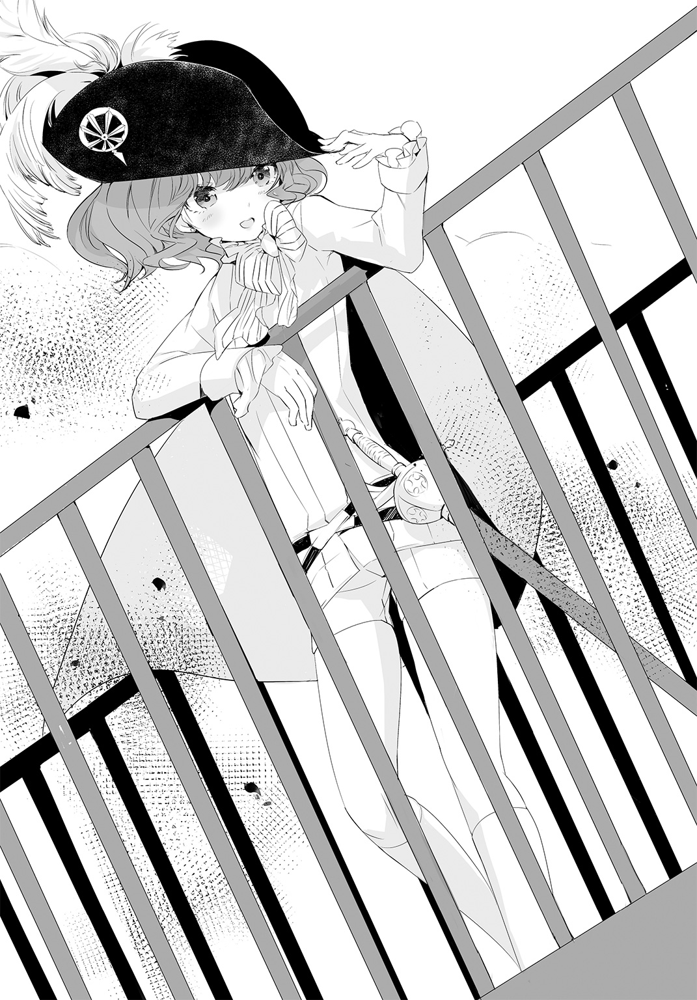
彼自身、鏡を見るたびに思う。
――かわいいなあ、ボクって。
と。
うっとりすることはない。彼はあくまで、客観的に我が身を見て、これは万人の目に可憐な少女としか映るまいと判断しているだけだ。
とはいえ、仕種は少女らしくなどない。骨格や筋肉の付き方が異なっているので、姿勢も少女のそれとは違う。
あくまでぱっと見、十二、三歳の美少女と思えるだけだ。今ならば、たいていの者は、軍服を着て男装している高貴な美少女とみまごう。ある意味、それは錯覚なのだ。
よくよく見れば、少女ではないと、皆、気づく。女ではない。男だろう。だが、いわゆる男とは程遠い。性別を超越した、何か別種のモノに違いない、といった印象が、観察者の中でどんどん深まってゆくだろう。
そして、このような人間には一度も会ったことがない、と多くの者が考えるはずだ。そのときにはもう、稀どころか唯一無二のマカダミアン・デスティニアリスという存在にすっかり魅入られている。
思い上がりではない。
実体験から、そして考察と洞察により、彼は彼に出会った者の内部で起こる変化が手にとるようにわかるのだ。ただそれだけのことでしかない。
マカダミアンがそういう存在であるがゆえに、こうやって展望台の人目を引く場所にいると、初代シャペロ号をおおよそ中央に置いて行軍中の第一公軍将兵たちが惚けたようにこちらを見上げて、甚だしく隊列が乱れることさえある。
「馬鹿な子たちだなあ」
呟きながら、マカダミアンは手を振ってやる。騎兵が落馬しそうになる。歩兵が前の歩兵に追突しかける。
それがおかしくて、彼はまた笑う。
彼の笑顔が将兵たちの秩序を搔き乱す。
「マカダミアン」
と、後ろから声がかかった。
マカダミアンは笑みを浮かべたまま振り返った。
「はい、一兄様。――おっと、いけない。ボクもようやく軍人になったんだし、一兄様のこともちゃんと総帥代行って呼ばないと」
「おれにおまえの手管は通じぬ。マカダミアン」
一兄様。
彼の長兄。
ドリアン公の継嗣。
公国軍総帥代行にして、太子。
フリージアン・デスティニアリスは長身を展望台中央の指揮席に埋めて、肘掛けに頰杖をついている。
マカダミアンより十三歳も年上の長兄は、あらゆる面で恵まれているのに、それを決して認めようとしない人だ。
まず、デスティニア公国のような豊かな国の君主の跡継ぎとして生を受ける者が、地上にどれだけいるだろう。いても、同時代に数人だ。
フリージアンは上背がある。身長があるだけではなく、筋骨逞しい。これもまたすばらしい素質だ。渇望したとしても得られるものではない。
頭の出来も決して悪くはないはずだ。少なくとも、愚かではない。
銀髪は輝きに欠けて白髪のように見えるが、顔貌は整っている。いつも黄色い眼をぼんやりと開けているのは単なる癖だろう。
フリージアン・デスティニアリスとして生まれ、生きたい者を募ったとしたら、何万人、何十万人もが挙手するに違いない。そのために、自分自身のぜんぶを捨てなければならないという条件を突きつけられたとしても、迷わずそれでもかまわないと即答する者とて少なくはないはずだ。
そして、フリージアンは、何かの間違いでそれが可能だとしたら、喜んで自分自身を譲り渡そうとするに違いない。たとえ物乞いと入れ替わることになるとしても、フリージアンはためらわないだろう。まるでそれが人生を賭した唯一の宿願だとでも言わんばかりに。
「おまえが天真爛漫を装い、どれだけ愛されようとしても、おれには無駄なことだ」
フリージアンの躰は常に左右どちらかに傾いでいる。右か左か、一定ならばまだいいのに、そのときどきで方向も角度も異なるので、見る者に不安定感、さらには不安感を与える。今はマカダミアンから見て右に大きく傾いでいた。首は左に曲がり、組んだ脚も奇妙にねじくれている。顔面も右半分は上に、下半分は下方向へと引きつっていた。
「装うだなんて、そんな」
マカダミアンはにっこり笑ってみせた。
「ボク、そういうつもりはないよ、一兄様。――じゃないや、総帥代行さま」
「呼び名など、何でもよい」
「あれ？ そうなの？ だったら、一兄様でいい？ ボクはそのほうがいいな。慣れているし、立場とか、いろいろ変わっても、ボクにとって一兄様は一兄様だもん」
「好きにしろ。だが、兵らを嬲るのはよせ」
「みんな、楽しそうにしているけどなあ」
「戯れるな、マカダミアン」
「はーい、一兄様」
マカダミアンは足を揃えて、右手を挙げてみせた。
「ボクが軍人になるのに、後押ししてくれたのは一兄様だし。父様は反対だったから、一兄様が説得してくれなかったから、ボク、たぶん、今も公都にいたよね」
「おまえは使える」
「ちゃーんと、一兄様の役に立たないと！」
「素質がある。マカダミアン。おまえには」
そして、自分にはそれがないのだと痛感しているかのように、フリージアンは苦しげに顔を歪める。父様の教育の成果だなあ、とマカダミアンは忍び笑いをした。彼らの父ドリアン公は根っからの支配者だ。我が子に対しても、決定的な影響力を与えずにいられない。むろん、父の教育はマカダミアンにも及んでいる。
父は末子マカダミアンをことのほか愛した。しかも、ひそかに、兄姉の誰にも気づかれぬように、まるで庶人の親が子にするように愛玩した。それは明らかに特別なやり方だった。どの兄も姉も、そんなふうに父に愛されてはいなかった。マカダミアンもそのことを知っていた。父自らマカダミアンに言ったからだ。
――おまえは特別だ。
と。
あの、見開かれているのに、こちらを向いているのに、誰も見ていないかのような眼でマカデミアンを見据えて、囁いたのだ。疑え、と父は言外に命じていた。おまえは本当に特別かもしれないが、そうではないかもしれない。おまえは信じることもできるし、信じなくてもいい。さて、どうする？ どちらでもかまわない。愛されたいか？ 愛されていると思いたいか？ 愛されるとは何だ？ 愛とは？ それは欲望か？ 本能か？ おためごかしか？
「大丈夫だよ、一兄様。ボクは働くよ。一兄様のためにね」
「我が公国のためだ」
「そうだね」
マカダミアンは左胸に右の手刀をあてる公国軍式の敬礼をしてみせ、元気よく言った。
「デスティニア公国のために！」
×
五百十七侵攻団と三百二、三百八各侵攻団は、今まさに三方からイショール川沿岸にあるピネー城市を包囲しようとしていた。
ピネー城市の守備隊はすでに三日前から城門を完全に閉鎖して守りを固めている。ただし、イショール川を経由する物流は途絶えないので、帝国軍が川を押さえない限り、兵糧攻めは効果がない。また、船で援軍がピネー城市入りすることも可能だ。帝国軍がこれを妨げる方法は、まったくないわけではないが、現実的には非常に難しい。
ピネー城市の守備隊が打って出てきてくれれば、帝国軍としては好都合だった。しかし、それは虫が良すぎるというものだろう。
いずれにせよ、三方から休みなく攻めたてれば、やがて耐えきれなくなってピネー城市も陥ちる。
五百十七侵攻団は西から、三百二侵攻団は北から、三百八侵攻団は南から、一挙にピネー城市を衝く手筈は整っている。
十二月二十七日未明、各侵攻団は所定の地点で待機していた。夜が明ける前に出発し、七時にピネー城市攻撃を開始する。
機士は生産が追いついてさえいれば、いくらでも補充できる。とはいえ、生き物であることに変わりはないので、理想的には一日に一度、量を調整すれば二日に一度の専用液体食、蜜の補給が必須だ。蜜入りの瓶を機骸の装塡器に突っこめばいいだけで、さして手間はかからないが、機士が二万人いれば、二万回、その作業を行わなければならない。機士たちを並ばせ、ひざまずかせて、手慣れた操手や軍士なら一時間に一人で数百人の機士に蜜入れをしてしまうが、ともかくそれだけの時間と手間が掛かるのだ。それに、操手と軍士は当然、生身の人間だから、適宜、食事をとり、眠らなければならない。機士にしても、日に四、五時間、安楽な姿勢で休ませたほうが、耐用時間が延びるという実証報告がある。
咎埜不人の主人といえども、それは同じだ。
主人はどんな体勢でも、いつでも、どこでも、短時間でも、長時間でも、睡眠をとることができる。
今は天幕の中で頭冠を着けたまま寝袋に入り、仰向けになって目をつぶっている。
不人はその脇に置いた椅子に腰かけ、もうずいぶん長い間、ひたすら息を殺していた。
主人は人前だろうが何だろうが、必要に応じて眠る。
いつも、眠る、と宣言して、三十数える間にはもう寝入っている。
眠りについてから目覚めるまで、規則正しい寝息が乱れることはほとんどない。寝返りは決して打たない。身じろぎ一つしない、と言っても大袈裟ではない。何事も無自覚に行うことをよしとしない主人は、睡眠までも意識的に制御しているかのようだ。
だから、主人が、
「ん......」
と小さな声をもらしたとき、不人は非常に動揺した。
主人はそれから、ふう、と息を吐いた。
それだけのことと言えばそれだけのことでしかないのだが、不人はこの出来事を一生忘れないだろう。
そうした忘れがたい――否、生ある限り絶対に忘れない事柄が、不人にはいくつもある。その大半どころか、ただ一つをのぞいてすべてが、主人にまつわる記憶だった。
残念ながら経緯は覚えていないのだが、主人の祖父にあたる先代亞璃簾宮が、まだ少年だった不人の頭を素手で撫でて、
『おまえは聡い子だ』
と言ってくれた。先代亞璃簾宮はむろん、老いてもなお端整な容貌の持ち主だったが、上唇を捲り上がらせるようにして、にい、と笑うことがあった。そうすると、妙に剽軽な顔つきになるのだった。あのときもそのようにして不人に笑いかけた。
それ以外は、主人に関する思い出ばかりが不人の脳裏にこびりついている。
しかし、そうした事々を蘇らせ、咀嚼することを、不人は己に許していない。そうしたいという欲望はあるのだが、それはとても怖いことなのだ。なぜなら、数々の思い出に心が囚われて、現在、主人のためになすべきことを怠ってしまう可能性がある。
ゆえに不人は、そのときどき、一瞬一瞬の主人を目に、耳に焼きつける。過去の主人は、不人の中にしっかりと刻まれてはいるが、振り返ってはならない。
不人は手で口を押さえた。
――だが、今の......ん......という声と、その後の吐息は、いくら自ら禁じても、反芻してしまいそうだ。
不人は図らずも、主人の髪を目撃してしまったことがある。あれもずいぶん不人を悩ませた。思い返してはならない、といくら自分に言い聞かせても、いや、言い聞かせれば言い聞かせるほど、ありありと思い出してしまう。もう一度、主人の髪を見たい、とさえ、不人は思った。なんたる破廉恥な。不遜きわまりない。身の程知らずめ。
不人は口に当てていた手の、人差し指の腹、その根元に近い部分を嚙んだ。きつく、強く、嚙んだ。嚙みきってしまいたかったが、そんなことをして主人のためになす仕事に支障を来しでもしたらどうする？
不人は歯の力を緩めて、人差し指を放した。右手を握る。
「......亞璃簾様」
主人は目を開けるなり、寝袋からするりと上半身を抜け出させて起こした。
「何だ」
「......外が騒がしいようです」
「みたいだな」
主人は、ふっ......と、微かに笑ったようだ。
「もしかして、夜襲か？ だとしたら、なかなか骨のある敵かもしれないぞ」
「......嬉しそうですね」
「あたりまえじゃないか。おまえは嬉しくないのか。馬鹿なのか？」
「――失礼します......！」
軍士が天幕を開けた。危急の際には構わず入っていいと軍士には命じてある。
「敵襲です！ すでに操手が独自の判断で機士に迎撃させております......！」
「我が侵攻団の警戒網に掛からなかったということだよな」
主人は立ち上がった。不人は先立って軍士をうながし、共に天幕を出た。主人は頭冠を軽く押さえながら夜明け前の冷気に身をさらした。
「敵は小勢か？」
「はっ......」
軍士が平伏せんばかりの勢いで頭を下げた。
「申し訳ありません！ 敵勢、不明であります！」
「......亞璃簾様」
不人は北東を指さした。
「......敵はあちらから来ているようです」
「ああ、他の方面の動きは鈍いか、まだ動いていないようだな」
主人は心持ち引いた顎に右手の人差し指を曲げて当て、左手で腰を押さえた。そうして考えこんだ――と言っても、ほんの一瞬だった。
「よし。遁げるぞ、咎埜」
×
その前日、太子にして総帥代行である長兄と、第一公軍の一部を伴ってひそかにピネー城市入りしていたマカダミアン・デスティニアリスは、夜半に小舟で河港を離れ、単独で上陸して夜営中の帝国軍五百十七侵攻団に忍び寄った。
単身ではあるが、マカダミアンは長兄を身近に感じていた。
「きっと見てるんでしょ？ 一兄様」
語りかけたところで、長兄は答えてなどくれない。たとえ本当にいるとしても、声を発することはできまい。
――〝行き場のない嘆きの鈍痛〟。
その姿が、目に見えなくなるのではない。知覚を、言わばごまかして、見えるはずのものを見えなくする、聞こえるはずの音を聞こえなくする、必ず気づくはずなのに気づかなくするような魔性は、程度の差こそあれ、そうめずらしくないが、長兄のそれは違う。見えないのではなく、なくなる。本当に消えてしまう。消えているのにもかかわらず、移動することもできるようだ。制約はマカダミアンにもわからない。それが長兄の魔性なのだ。
制約次第ではあるものの、不死身と言ったら大袈裟だが、無敵という言い方はしてもよさそうな魔性だ。
何しろ、消えてしまえば、誰も手出しできない。マカダミアンが今、長兄を感じているというのも、正確には、長兄は消えた状態でそばにいるに違いないと思っているので、そんな感じがする。それだけのことでしかない。
実のところ、長兄がいてもいなくても、マカダミアンにとってはどちらでもかまわないのだ。ただ、いるかもしれない以上、いるという前提で振る舞わなければならない。
長兄には見抜かれているようだが、ドリアン公の類い稀なほど可憐な末子として生まれたマカダミアンは、相対する者が期待するマカダミアン、望むマカダミアン、喜ぶマカダミアン、恍惚とするマカダミアン、つい抱きしめたくなるマカダミアン、愛さずにいられないマカダミアンを演じている。相手に見通されているからといって、演技を止めることはない。
芝居か否かなど、たいした問題ではないのだ。偽りであろうと、貫徹されるのならば、それは真実と何一つ異ならない。
むしろ、世の一切は偽りでしかなく、何かでありつづけることで、ようやく初めて、その何かになりうるのではないか。
「......でも、話に聞いていたのと違うな、帝国軍」
エルダ平原は大半が農地だ。休耕地には家畜を放つ。丘陵は放牧地か、果樹園として利用されている。
マカダミアンは邑々の家屋や倉、厩舎、それからちょっとした木立などに身を隠しながら五百十七侵攻団に接近した。そうしなければならなかったことが、実は意外だった。
帝国軍は機士と、ごく少数の人間の兵士で構成されている。機士は、戦場では文字どおり怖い物知らずの恐るべき兵隊だが、欠点がある。兵隊とはいっても、機士たちの実態は兵器に近い。つまり、戦争の道具であって、道具であるからには人間に使われなければならない。どれだけ強力で有用でも、道具は勝手に戦ってくれないのだ。たとえば、見張り、偵察といった任務には適さないどころか、そもそもできない。
よって、大量の機士と、おそらくは機士を運用するために必要な人員からなる帝国軍は、通常はそれなりの人員でもってあたらなければならない偵察、諜報、工作といった行動を大胆に省いていた。
帝国軍お得意の戦術は、こうだ。
敵国の領土にどんどん侵攻団を送りこみ、ひたすら前進させて、手当たり次第に敵部隊を撃破する。
なんとも単純明快だ。それゆえに、守備側としては、押し寄せる帝国軍をただ食い止めつづけるしかない。力負けするか、根負けした時点で、防御は破られる。
それが帝国軍だとマカダミアンは思っていた。しかし、少なくともこの五百十七侵攻団は、どうやら違うようだ。機骸らしきものを着ているが、たぶん機士ではない、人間とおぼしき歩哨があちこちに配置されている。マカダミアンは何度も歩哨たちの目を眩ませなければならなかった。帝国軍にしては、人間が多すぎる。
帝国軍が我が公国に大規模侵攻を開始して以来、五百十七侵攻団がめざましい活躍を見せていることは、マカダミアンも承知していた。とはいえ、ここまで異質な侵攻団だとは思っていなかった。
それとも、本物の戦場はこんなものなのだろうか？
マカダミアンにとっては初陣だ。記録や書物を読み漁り、講義を受け、大勢いる懇意な軍人たちに話を聞いた。それで知ったつもりなっているだけであって、実際の戦いを肌で感じたことは一度もない。やはり、想像とはいろいろと違うものなのか。
「――どっちでもいいけど」
マカダミアンはホーソン邑の外縁にある小屋の陰に身を隠していた。顔を出せば、そこらじゅうにうずくまっているおびただしい数の機士たちが見える。動き回っているのは人間だけだろう。けっこうな人数だ。
「狙いは人間だよね、やっぱり。道具はどうでもいいや」
帝国には厳格な身分制度がある。すべての民は、下民、人民、臣民に分かれていて、奴隷である下民は、それこそ道具とさして変わらない。だから、下民は使い捨てにされる。実際、第八公軍と七六旅団がファウラス城市を攻め落としたとき、帝国軍は下民を盾にしたという。
奴隷ならしょうがないかな、とマカダミアンも思わなくはない。奴隷とは結局、人間としての権利を認められていない人間で、ようするに人間ではないのだから。人間の姿をしていて、人間のようにしゃべったり動いたりする、特殊な道具なのだ。
ただし、彼はドリアン公の皆に愛されてやまない美しく愛くるしい末子であり、そのようなマカダミアン・デスティニアリスとしては、言うまでもなくここは泣くべきだ。
泣くべきときは即座に涙が滲み、溢れてくる。
「......許さないぞ、帝国軍。人間を何だと思ってるんだ。二度とそんなことできないように、ボクがお仕置きしないと」
マカダミアンは小屋の陰から飛び出した。
たちまち、夢見るような緑色の瞳が、夢そのもののように輝きだす。
――〝ボクをつかまえてごらんよ〟。
無理だよ。
つかまえるなんて、無理なんだよ。
だって、だってさ、だってね、速いんだ。
魔性を発動したマカダミアン・デスティニアリスはとてもとっても、すごぉーく、それはもうとぉーっても、速いんだ。
たとえば、風のように？
違う、違うね、違う、違う、違うよ！
そうじゃなくって、風なんかより、もぉーっと速い......！
速く、速く、飛ぶように速く駆けて、仕事をしよう、お仕事しよう！
まずは剣を抜く！
ずばっと、景気よく抜こう！
ただの剣じゃないよ！ 良い剣だよ！ そう！ カバラの剣！ 伝来の逸品だよ！
でも、長剣じゃない。短剣だよ。短くていいんだよ。刃渡り約40サンチ。問題ないよ。充分だよ。これで充分すぎるくらいだよ！
速すぎて、もうそこにいるよ！
機士のそばで何かしていた帝国軍の、人間の兵士の首を、わざわざ斬る必要なんてない、ない、ない！
そんなことをしなくても、ただ斬れ味鋭い短剣の柄をしっかりと握りしめて、帝国軍の、人間の兵士の脇を駆け抜けるだけでいい！
そうしたら、すぱっと斬れる！ 勝手に斬れちゃう！
その、帝国軍の、人間の兵士の首が、幸運にも？ 不運にも？ 不幸にも？ あれ？ 幸か不幸か？ まあ何でもいいや、とにかく胴体から斬り離されてしまった生首が、コトリと、もしくはドスンッと、それかグシャッと、地面に落ちる前に、マカダミアンはまた別の、帝国軍の、人間の兵士に近づいてしまう。何しろもう速いものだから、冗談抜きで、誇張なしで目にも留まらぬ速さだから、笑えるくらい？ ケタケタゲラゲラ笑っちゃう？ いや、笑う暇なんかないほど、一瞬なのだ！
い
っ
し
ゅ
ん
で！
機士たちの列を縫って奔り、ちょちょんちょーん、ちゃちゃいちゃーい、と、さらに一人、二人と帝国軍の、人間の兵士の首を、生々しい生首を、その傍らを走り抜けるだけで斬り離してしまったマカダミアンは、最初の首、正確には首から上、頭部が地べたにコテッと落下するころには、元の小屋の陰に駆け戻っていた。
短剣を持っている右手が震えだした。
左手で口を押さえる。
「......ぷぷぷっ......ぷぷっ......うぷぷぷぷっ......」
何だこれ？ 何？ 何だ？ 何、この感覚？ この感情？ わからない。喜び？ 歓喜？ だけどそのわりには苦しい。胸が苦しい。背中が苦しい。腹が苦しい。背筋がびりびりしている。膝がガクガクする。あああああああああああああああああ漏れそう。漏らしちゃいそう。おしっこしたい。しないけど。あれ？ なんか違う？ そっちじゃない？ マカダミアンはしゃがみこむ。腰がじんじんする。変な感じ。どこかに行きたい。遠い場所へ。行ける気がする。行っちゃいけない気がする。行ってしまったら戻ってこられない。そんな気がする。しゃがんでいるのもつらい。座りこんだ。短剣を地面に突き立てて、両手で股間を押さえる。何かがこみあげてくる。我慢。我慢。我慢しよう。押しとどめないと、大変なことになる。
「......うくっ......ぷぷっ......うぷぷぷっ......ボク、いけない子になっちゃいそう......」
呟いた直後、五百十七侵攻団でちょっとした騒ぎが起きた。
「――何だ？」
それは帝国の言葉だった。人語、という。マカダミアンは勉強しているので、すっかりとは言わないまでも、それなりに理解できる。
「倒れて......」
「おい？ どうした？」
「変だぞ」
「し、死んでる」
「何だと」
「首が......」
「まさか、敵？」
「敵なのか？」
「報せろ！」
「操手！ 機士を起こせ！」
「戦闘準備......！」
うろたえている。狼狽している。おたおたしている。おもしろい。おもしろいなあ。おもしろい。マカダミアンはまだ明けぬ空を仰いで熱い息を吐いた。どくどくしている。だめだ。これでは完全にいけない子じゃないか？ マカダミアンは立ち上がって、唇をぺろぺろと舐める。舐めたところがぴりぴりする。
「気持ちいいなあ......」
みんな、ずるいよ。
マカダミアンは胸が締めつけられる。
こんなに気持ちいいことを、戦いを、みんなずっと、ずっとやってきたのだ。マカダミアンは十四歳でやっと大佐にしてもらうまで蚊帳の外だった。ひどい話だ。とてもひどい、ひどすぎる、あんまりな話じゃないか？ 許しがたい。許せない。頭にくるなあ。ちょうどいい。この腹立ちを、憤りをぶつける相手が、ちょうどそこにいる。いくらでも。
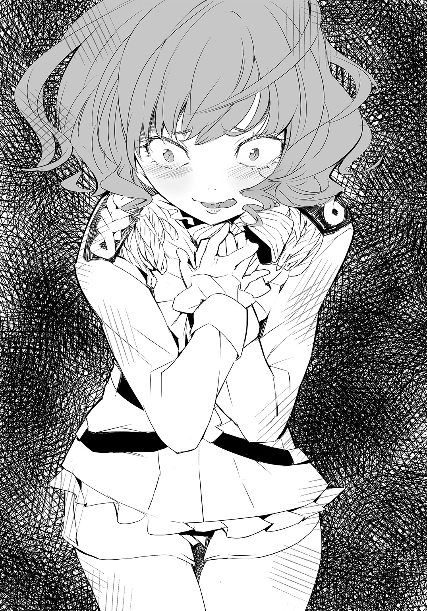
そう！
いくらでも！
殺しちゃっていい！
敵だしね！
にっくき、憎き、敵なんだからね！
マカダミアンは小屋の陰から飛び出した！ そして、一瞬で！
い
っ
し
ゅ
ん
で！
シュパーン。シュターン。シュタターン。トーン。シャーン。
今度は、五人！
さっきよりも一人多い！
人間の、帝国軍の、兵士のすぐそばを、めちゃくちゃな速度で、メ・チャ・ク・チャ・な速度で！ 疾駆するだけで！ そ・れ・だ・け・で！ 首と胴体をポーンと斬り離してしまって小屋の陰に戻ると、頭のてっぺんから足先まで全身を駆け巡る快感、悦楽、絶頂感......！
「あっ......はあぁっ......!?」
噓、噓、噓、噓、噓、噓、噓......!? 同じの、さっきと同じのが欲しかっただけ、それだけなのに違う、これ違う、さっき以上、もっとすごい、すごいのが来た！ 殺して、どうか殺して欲しい、殺して！ 今、殺して！ 死んだほうがいい、今、死んだほうが！ だって、これ以上はないと思うから、今、幸せだから、幸せすぎるから、いっそ死んでしまいたい、死ぬべきだと思うのに、もっと！ もっと！ もっと！ 次！ 次はもっとすごいかもしれないと期待している。あーどうしよう、もうべちゃべちゃだよう、べたべただよう、だけどたぶん、この先がある。もっとずっと先が。想像できないほどすごいのがマカダミアンを待っている。おいでおいでと手招きしている。死ねない。死んだらもったいない。やるしかない。
殺るしか！
五百十七侵攻団は大騒ぎしている。もうそのへんの機士は全員、起きている。人間の兵士たちは口々に何か叫びながら右往左往している。それはそうだ。惑うはずだ。敵はいる。彼らにとっての敵はたしかにいる。どこに？ ここに！ マカダミアン・デスティニアリスこそがその敵だ！ でも、彼らには見えない。まあ、今なら見えるのだが、彼らは探しださないといけない。マカダミアンを、この小屋の陰に隠れている愛され末子のマカダミアン・デスティニアリスを見つけるまで、彼らにとっては敵が見えない。敵がいない。それなのに、彼らの仲間は殺された。首をパパーンときれいさっぱり斬られて殺されてしまった！ 怪奇だ！ まったくもって摩訶不思議だ！ 彼らがパニックに陥るのも無理はない！
でも、もっとだ。マカダミアンはもっともっとすごいのが欲しい。そのためには殺さないと。彼らに死んでもらわないと。
極限まで内股になって、すがるように短剣を捧げ持ち、ぴりぴりする唇をぺろぺろ、ぺろぺろ舐めながら、マカダミアンは彼らを、敵を愛しはじめている。愛、愛ってこれなんだと悟りつつある。本当の愛って、殺すことなんだ。殺してしまえるから、いくら殺してもいいから、敵はこんなにも愛しいんだ。
「――いや、待って」
マカダミアンは、ふー、ふー、と息をつく。愛。愛はいい。愛はとてもいいものだ。いや、そうじゃなくて、忘れてはならない、心しなければならないことがある。制約。マカダミアンのすばらしい魔性にも制約というものがある。耐久性がない。長持ちしないのだ。一度の発動につき、最大で三秒ほどしか持続しない。それに、連続は無理だ。一度発動したら、短くても十秒かそこらは休まないといけない。休み休み発動させても消耗する。じわじわと。限度は正直、マカダミアン自身、まだはっきりとは把握できていない。試した範囲では、突然、燃料が尽きたように虚脱感に襲われる。悪くすれば、うとうとしだす。
気をつけないと。そうだ。マカダミアンはまだ、自分の限界をちゃんと知ってはいない。危険を冒してはならない。でも一方で、殺したい。殺したい。殺したい。もっと殺したい。あの人の命がプチッと途絶える感触！ 感覚！ 味わいたい。もっと、もっと、もっと。何度でも。味わい尽くしたい。だめだ、だめだ、だめだ。適度に！ 抑えて！ 適度に！
「......だけど、まだいいよね？」
あと何回かはできる。何度もできる。二回の発動で九人殺した。この調子で百人くらいは殺しちゃおう。たしか、帝国軍侵攻団は、機士二万人くらいと、二百人から三百人の人間の兵士で動いている。そう目されている。百人も殺されたら、かなりの打撃だろう。しかも、何に殺されたのかわからない。さぞかし怖いはずだ。おっかなくて、戦うどころの騒ぎではなくなるだろう。殺そう。殺そう。殺そう！
マカダミアンはまたもや小屋の陰から飛び出そうとした。
妙だ、と思った。
「移動！ 移動だ......！」
「撤収する！ 命令だ......！」
機士たちが整然と一方向に歩いている。一糸乱れず、と言ったら大袈裟だが、機士の行進は異様なほど動きが揃っている。それは、鳥の大群がきれいな隊列をなして飛ぶ光景にどこか似ている。
「......え？」
マカダミアンは目を疑った。何かの間違いだろうか？ そうに違いない。でも、おかしなことに、違わない。
機士たちが離れてゆく。
撤退してゆく。
「噓、噓、噓......」
マカダミアンは、ははっ......と失笑した。いや、笑っている場合ではない。何もおかしくなどない。
「ない。ないよ。ないってば。なんで？ どうして逃げるの？ ボク、まだ――」
そこまで殺していない。
殺し足りない。
そうだ。追おう。追いかけていって、殺そう。だいたい、戦う前から逃げるなんて！ ありえない、卑怯だ、ずるい、卑劣にも程がある。マカダミアンが帝国軍の偉い人だったら叱りつけるだろう。罵倒するだろう。情けない！ 逃げるとは何事だ！
「よし、追いかけて――」
マカダミアンは頭を、ぶるんっ、ぶるるんっ、と振って舌打ちをして、歯嚙みした。
「......だめだ。追いかけて、殺しても......隠れないと、戻らないといけないんだ。制約がある。戻れなくなったら、隠れる場所がなかったら、魔性の発動限界時間が過ぎちゃったら、敵の中で孤立しちゃう。まずい。それはまずい。だめだ。ちくしょう......！」
こんなに汚い言葉を使ったことは一度としてない。マカダミアン・デスティニアリスには似合わない。だけれど、我慢できない。マカダミアンは繰り返し地面を蹴った。
「ちくしょう、ちくしょう！ 殺せない！ 追撃できない！ 手をこまねいて見ているしかない！ ちくしょう、なんてことだ！ ちくしょう、ちくしょう、ちくしょぉぉぉぉ......！」
×
歩行鳥に揺られている主人は、あからさまに不機嫌そうだ。
放っておいてもよいのだが、話しかけろとその表情が言っている。ならば、主人の意に沿うのが咎埜不人の務めだ。
「......お気に召さないことがあるようで」
「当然だ、馬鹿！」
主人は脚をのばして不人の脛を蹴った。
「わざわざ説明しろとでも？ いちいち話さないとわからないのか？」
「......亞璃簾様が前もってお考えになった方針どおりです」
「そうだな。だから何だ！」
「......真人の力を持つ者が現れれば、即座に部隊を退かせる。東大陸では彼の超常なる力を切り札とし、依存する傾向があり......また、戦場で相応の威力を発揮することもめずらしくない。よって、あえてこれに対抗するのではなく、可能な限り回避する。――理に適っていると思いますが」
「たしかに合理的だ。私らしい。だがな、私の軍士と操手があわせて九人も殺されたんだ。ああ、腹が立つ！」
未明に撤退を開始してから、五百十七侵攻団は３里（約12㎞）ほども西に引き返した。被害は軍士七名に操手二名の合計九名のみ。斬首されていたという報告は受けているが、正確にはわからない。遺体を回収して死因を特定する命令さえ主人は出さなかった。五百十七侵攻団は一目散に逃げたのだ。
それこそ、まさに規定方針どおりの行動だった。他の侵攻団にも、本作戦の総指揮者である臣二位太軍師、卯立豊衛の名においてこれは伝達され、徹底するべく厳命されている。
有害なる真人の力を有する者を戦域で確認した場合、あるいは、真人の力によるものと推測される看過しえぬ損害を被った場合は、ただちに部隊を撤退させ、戦域を縮小するべし。
なお、「有害なる真人の力を有する者」、通称・有害者については、具体的な個人名や外見的特徴といった情報の一覧を各侵攻団が共有している。「真人の力によるものと推測される看過しえぬ損害」については、あらかじめ数十の詳細な状況が例示されているものの、現場においてはある程度、柔軟な解釈が許容されることになろう。
だが、主人が今回下した判断こそ、全侵攻団が規範とするべき理想だ。
すなわち、侵攻団を統率する団長は、何らかの不審な被害が報告された時点で、その程度を問わず、即時、部隊を撤退させる。
「......おそらく、一覧にはない有害者でした」
「新顔だろうな」
主人は両脚を浮かせるようにして、鞍の上で躰を前後に揺すった。
「だいたい掘り尽くしたと思っていたのに、まだ出てくる。真人の力は、世代を重ねるごとに薄れているという。そのわりには、ずいぶん人材が豊富じゃないか。彼らがあてにしたくなるのも、わからなくはない」
「......狗塚宮は、何人もの廃王を駒にしているとか」
「うん。ザラナストの廃王も、へまをしたらすぐに掬い上げたらしい。何だ、咎埜？ 私に狗塚宮の真似をしろとでも言うのか？」
「......お嫌でしょう？」
「嫌なんじゃない。ああいう力を持っている者は、いつまでも飼い犬の地位に甘んずるまいと思っているだけだ」
「......つまり、信用ならないと」
「だって、おまえならどうだ？ 廃王に成り下がる者は、たいてい領民の保護を条件として帝国に降る。あくまで領民の命や財産を守るため、身を粉にして終生働く見上げた人間も、中にはいるだろう。だが、もし捨てる決断さえすれば、大きなことができる。たとえば、ザラナストの廃王には、飼い主の狗塚宮を咬む機会がいくらでもあるだろう」
「......たしかに」
「我が帝国がなぜ、主上との謁見を極端に制限していると思う？ 一言で言えば、殺されないためだ」
「......亞璃簾様」
「不敬か。この言い様は。そうだな。留意しよう。まあ、どれだけ用心しても、しすぎということはないんだ。私なら、真人の力を持つ者はぜんぶ殺してしまうな。彼や彼女が望んでそう生まれついたわけではなかろうし、罪はないにせよ、どう考えても害悪でしかない」
「......ゆえに、有害、ですか」
「そうだ。戦いにおいても、あれらは邪魔でしかない。だから、排除する。本当はさっさと皆殺しにしてしまいたいが、それは難しいから、仲間外れにしてやる」
主人の声音はどこか愉しげだ。主人が喜び、愉しんでいるのならば、不人にとってもそれは快であるはずだった。
何か引っかかるものがある。
不人自身、すぐにはその理由に思い至らず、自分の愚かさに半ば呆然としていた。
「怒ったのか？」
主人にそう訊かれて、不人は意外の感に打たれた。
「......怒る？ おれがですか？」
「私が仲間外れなんて言ったから」
「......ああ」
仲間外れ。そういうことか。不人はようやく納得した。
自由民は人でありながら、人間社会から完全に疎外される。人々の視界に入っても、自由民は路傍の石のように無視されるのだ。
のけ者にされ、初めからいない者のように扱われる、ならばいい、人々から盗んでやれ、傷つけてやれ、いっそ殺してやれ。そう考えてもおかしくなさそうなものだが、大半の自由民はおのずと人間社会から距離を置き、人目を避けて、人の匂いを嫌う獣のようにひっそりと暮らす。野獣のようにくたばって、土に還る。言葉を一切話さない自由民もいた。
自由民のままであったとしたら、不人もそのように生きるともなく生きて、死ぬともなく死ぬ運命だったのだ。
「......怒りはしません。気にしないでください」
「気にしてなんかいない。私はただ、おまえが黙りこくっているから、怒ったのかな、と思っただけだ」
「......ですが、有害者は頭にくるでしょうね」
「私も腹が立っている。おあいこだ」
主人は、ふん、と鼻を鳴らした。
「まあ、もう収まった。どうせ最後に勝つのは私だからな」
「......仮に、有害者がどこまでも追いかけてきたら？」
「遁げるさ。どこまでも」
「......しかし、相手は逃げる敵をいつまでも追っているわけにはいかない」
「いや、追ってくれてもかまわない。そうしたいならな。公国の制圧は他の侵攻団に任せる。我が帝国軍は圧倒的多勢だ。時間はかかっても、勝てるだろう」
「......公国は最終的に、公都付近に戦力を結集させて決戦を挑んでくるでしょう。降伏しないのなら、いずれそうせざるをえなくなる」
「そうなったら、我が帝国の有害者を全員投入して、双方の有害者同士、盛大な潰し合いを演じさせたいところだな。私にその権限があれば、絶対にそれをやる。なんとかできないものか。私が思うに――」
主人の目はすでに遠いところを見ているのだろう。不人の視野ではとても捉えられない、遥か彼方を。不人には想像することすらできない。
だが、主人に従い、そこまで共に歩いてゆくことはできる。
「私が思うに、咎埜、この先、有害者たちは我々にとって最大の障害になりかねない。あれらは消し去るべきだ。私が逆の立場なら――もし、強力な有害者だったとしたら、採りうる手がいくつもある。敵の有害者に多少なりとも賢い者がいれば、そのうちのいくつかは思いつくかもしれない。それをやらせてはならないんだ。我々の祖先が真人に手を出さなかったのは、まったく慧眼だよ。そのようなものを生み出してはならない。大きすぎる力は、薬になどならないんだ。それは毒でしかない。猛毒だ」
「......亞璃簾様でも、使いこなすことはできませんか」
「私か」
主人は微かに唇を緩めた。
「どうだろうな」
×
公都デスティニアレスから進発した第一公軍は、十二月二十七日から翌年一月上旬までの間にイショール川沿いのピネー城市一帯を勢力圏内に置いて、帝国軍に睨みを利かせている。
第五、第六公軍は、公都防衛の要であるファーガン要塞城市から動いていない。
第三公軍はキャニック城市に、第四公軍はゴール城市に拠って、カバラ大王国との――いや、もはや旧カバラ大王国と言うべきだろう、その国境に防衛線を築いて、帝国軍の侵攻を防いでいる。
三一旅団、六四旅団はエルダ平原の各地を転戦しているが、はかばかしい戦果を挙げることはできていない。
イエルヴァラ城市にもルヴァラ廃地を越えて数個の侵攻団がたびたび攻め寄せたが、これはすべて第八公軍と第九公軍が撃退していた。一月中旬には、ドリアン公が第八公軍を公都へと移動させる決断を下した。
帝国軍はこうしたデスティニア公国側の動勢をほぼ正確につかんでいた。その上で、ピネー城市攻略を断念した五百十七侵攻団を中心に南回り経路で侵攻し、一月半ばまでにペーン川の支流と本流に架かっている橋を双方とも押さえた。
南回り経路でも、イショール川は船で渡らなければならない。
むろん、帝国軍はこの事態を想定して、かねてより船舶の陸送を進めていた。
五百十七侵攻団は、三百二、三百八各侵攻団と連携をとりつつ、イショール川沿岸のオルタム城市を攻め落とした。陥落時、オルタム城市には一隻の船も残っていなかったが、河港は修復すれば使用可能だった。帝国軍は河港を可及的速やかに再建し、船舶を運びこんだ。船舶の数は決して充分ではなかったが、ともあれ二月中旬には渡河の準備が整った。
二月十六日、最初の船がオルタム城市河港を出ると、その後はそくぞくと機士を満載した船が対岸を目指した。
だが、対岸に河港はない。帝国軍の船舶は大小の輸送船でしかなく、河港を有する城市を攻撃可能な装備や能力はなかった。従って、河港の確保は望めない。河港がなければ、一部の小船以外は水深の関係で接岸できない。軍士や操手はともかく、機士は泳ぐことができないから、上陸は難しい。平底の艀船を用いる手もあるが、時間がかかる。
帝国軍は大胆な、あるいは強引で乱暴な方法でこれを解決した。数隻の船を自沈させて足場にしたのだ。言わば即席の桟橋を作ったのだった。同時に、オルタム城市の河港を修復した人員を次々と渡河させて、恒常的に利用できる桟橋の建造を進めさせた。
二月二十二日、五百十七侵攻団以下、四個侵攻団がレーデル城市を攻囲した。五百十七侵攻団はこの攻囲戦で機士の半数一万人を武装解除し、隧道を掘り進めさせて、城壁の一部を崩落させた。各侵攻団が城市内に傾れこみ、守備隊は壊滅。城市民は大半が降伏して帝国下民となり、老若男女を問わず新桟橋の建造作業に従事させられた。
帝国軍は、レーデル城市を陥としたことで、公都デスティニアレスを視野に入れた。
レーデル城市から公都まではおよそ40里（約160㎞）。
機士中心の帝国軍は、徒歩にもかかわらず一日に最大10里（約40㎞）の強行軍にも耐えうる。40里はたった四日の距離だ。
これに先んじて、デスティニア公国第一公軍は、三一、六四旅団を糾合し、ピネー城市からファーガン要塞城市へと移動を開始していた。
公国は、公都デスティニアレスの公都防衛隊と第八公軍、ファーガン要塞城市の第一、第五、第六行軍、三一、六四旅団、総勢十万以上で帝国軍を防ぎきる腹だろう。
本当なら、第三、第四行軍も呼び寄せたいところだろうが、旧カバラ大王国を掌握しつつある狗塚宮派帝国軍に対応しなければならない両行軍を動かすことはできない。
二月二十六日、クロイン城市を楽々と突破した帝国軍は、その時点で八個侵攻団、機士の総数はおよそ十五万。
「足りないな」
頭冠、禁衣姿の亞璃簾宮太華子は、歩行鳥の背で小首を傾げた。
「あと三個は欲しいところだ」
「......最低でも、倍で、ということですか」
咎埜不人は横目で主人を見ていた。
どれだけ見つづけても、見飽きることはない。
「目安だけどな」
主人は白い顔料を塗ってある唇を軽くさわった。
「さすがにこれだけの規模になると当然、未知の領域だし、私といえども何が起こるかわからない。いくらなんでも、ここから先は何かあっても気軽には遁げられないしな」
「......そんなにおもしろいですか」
「わかってきたじゃないか、咎埜。そうだ。こういうのがおもしろい。でも、若干だ」
「......若干。なぜです？」
「考えていたんだが。――いや、ただ答えを明かすのもつまらないな。おまえ、どうせなら、当ててみろ」
「......簡単すぎますか」
「首尾よく運んでいるからといって、実行が容易だとは限らない。私が頭を絞って道筋をつけたからこそ、順調なんだ」
「......想定内で進んでいるのが、気にくわないのでは」
「それはまあ、なくもない。ただ、もっと根本的な問題があるような気がしている」
「......根本的な問題とは？」
「人が死なないのは良くない、ということだ」
「......機士ですか」
「うん。この戦争のやり方は革新だが、どうもまずい。やればやるほどそう思えてきた」
「......人は人と殺しあうべき、と？」
「殺す必要があるなら、な」
「......悔いているのですか」
「私が戦に勝って、結果的に大勢殺したことを？ まさか。だいたい、死ぬとか殺されるとか、そんなにたいしたことか？」
主人は顔をこちらに向けて、銀色の瞳で不人を見つめた。一点の曇りもない、とはこのことだろう。かすかな揺らぎもない。主人は心底から思っているのだ。人が死ぬ。殺される。いずれもたいしたことではない、と。
不人は右手を手綱から離した。手を開く。掌を、一本一本の指を、凝視する。
「......恐れながら、亞璃簾様はご自身の手で人殺しをしたことがありません」
「そうだな。やってみたら、何か変わるかな？」
「......しかとは言えませんが」
「機会があったら、やってみたい。でも、私は変わらないと思うな。だって、私は人間を殺したことはないが、虫ならある。草鞋虫とか、それから、蝶とかな。人間だろうと虫だろうと、死ねば動かなくなる。それだけだろう？」
「......たしかに、動かなくなります。物を言うこともできなくなる。考えられなくなる。何も感じなくなる」
「それは、生まれる前と同じだよな。生き物は、死ねば生まれる前の状態に戻るんだ」
「......違います」
「そうか？」
「......ええ。断じて、違う」
「どう違う？」
「......おれは、たとえば......そうかもしれない。死ねば、生まれる前に戻る。何もない。魂とか、何かあるのかもしれませんが、結局は無だ。でも......亞璃簾様は違います」
「だから、何が、どう違う？」
「......亞璃簾様が、もし、死んだら――」
世界が、揺れた。
激震した。
全世界が喚き散らして、転げ回る。
ひび割れる。
砕けて、ばらばらになる。
すっかり壊れてしまう。
ただ、主人が死んでしまったら、と考えただけで、不人の世界はこれほどまでに揺らぐのだ。この有様は絶対に、主人が生まれる前の状態とは異なっている。おそらく、主人が生まれたことで世界は大きく変容したのだ。きっと、主人が死んだからといって、以前と同じ世界にはならない。なるはずがない。
「何だ、咎埜。おまえ」
主人が歩行鳥を寄せてきて、身を屈め、不人の顔をのぞきこんだ。
「泣いているのか？」
「......泣い、て」
不人は目の周りを指でぬぐった。事実、濡れていた。
「......どうも、そのようですね」
「おかしなやつだ」
主人は顔全体をわずかに緩めて、不人の脇腹を肘で小突いた。
「でも、そうだな。もしおまえが死んだとしたら、おまえが生まれる前の状態に戻るかというと、そうじゃないか」
「......不便になるでしょう？」
「うん。とても」
真顔でうなずく主人をさらって、どこかへ連れ去りたい。なぜだか不人は唐突にそんなことを考えた。
「でも、私が言っているのは、そういうことじゃない。死んだもの自身がどうなるか、という話をしている。死んだものは生まれる前の状態に戻るだけで、言ってしまえば、死んだものにとって死はどんな意味も持ちえない。病死しようが、惨たらしく殺されようが、同じだ。常に生きている者たちのみが、死を意味づける。死は過大評価されていると私は思うな」
「......それと、機士を使った戦いと、どんな関係が？」
「過大評価にせよ、適正評価にせよ、死は生者によって意味づけられる。人間の死と、機士の死では、釣り合いがとれない」
「......だから、我が帝国は有利なのでは」
「そこだ」
主人は指を鳴らした。
「おかげで、おもしろくない。考えれば考えるほど、勝てないわけがないんだ。負ける要素がない。私は勝つべくして勝つ。こんなの、つまらないじゃないか」
「......また我が儘を――」
不人は総毛立って手綱を引いたのだが、自分がいったい何を感じたのか、とっさにはわからなかった。主人も歩行鳥を止めた。
「どうした？」
「......いえ――」
否定しようとした。その刹那だった。
前方で、多数の機士が宙を舞った。
「......馬鹿な！」
「わあ！」
主人は目をきらきらさせていた。かすかに頰が上気してさえいる。
「おい、何か起こったぞ、咎埜！ こうでなければな！」
「......いいかげんにしてください！ 軍士......!? 何があった......!?」
不人が大声で尋ねている間にも、何人もの機士が打ち上げられるようにして飛び交っている。これはまずい。機士は操手によって操られて動く。操手が状況を把握して判断を下せないと、機士も当然、対処できない。実際、そうなっているようだ。隊列のあちこちに散らばっている軍士たちからも報告が上がってこない。つまり、誰も理解していないのだ。
ただ、明らかにあれは、単なる事故でもなければ、自然現象でもない。
何者かが五百十七侵攻団を攻撃しているのだ。
２ 誰もここから出てはならぬ LABYRINTH
――苦節......何......ヶ月、でしたっけ......？
忍耐の日々がありました。
目まぐるしい日々もありました。
秋になりました。
やがて冬が訪れました。
いまだ春、来たらず。
実を言うと――、
ハイジ・バランは、まだ、生きています。
エルダ平原の東の端っこに裾野を広げるアーナット群山を越えれば、ベドゥノー平野だ。森も、草原も、農園も、河川も、道も、邑々も、すべてが美しく整えられた、まるで絵画のような眺めのベドゥノー平野は、公都の庭、とも称される。
その庭には、庭園というだけではなくて、我が庭、つまり、デスティニア公家の敷地内だ、という意味もある。
デスティニア公国が成立して以来、他国の軍がベドゥノー平野に入りこんだことは一度もない。軍どころか、野盗のたぐいさえ出没しないことで有名だ。
庭は、公都防衛隊と、ファーガン要塞城市に駐留している公軍によって、厳重に警備され、管理されている。
ハイジは急斜面に生えるサイダル樹の木陰から顔を出して、アーナット群山を縫うように走る、王の道、と呼ばれる街道を見下ろしていた。
公国になぜ王の道があるのか。もともとはカバラ古王国時代に切り開かれた道で、そのあたりに由来があるともいうが、詳しいことはハイジも知らない。
とにかく、エルダ平原からアーナット群山を抜けてベドゥノー平野に至るには、この王の道を通るのが一番の近道だ。他には、ファーガン要塞城市を通り抜けるか、南の間道を使うか、道なき道を進んで山越えするか。
彼らは近道を選んだ、ということだ。
土色の機骸をまとった機士たちの列が、王の道を埋め尽くすどころか、はみ出している。
いったい、機士はどれだけいるのか。二万や三万ではとてもきかない。五万か。その倍か。十万か。
「――勝つのは難しいな」
隣でラウリ・ニカ大尉がぼさぼさの癖毛を引っかきまわしながら、ぼそりと呟いた。
ハイジは眉をひそめた。というか、八の字に曲げた。
「大尉......」
ニカ大尉はハイジのほうを見もせず、機士たちに視線を注いでいる。
「何だ」
「......あまり、その、そういうことをおっしゃるのは、どうかと......」
「個人の所感でしかない」
「いや、そ、そうおっしゃいましても......」
「――かといって」
うずくまっていた姫が――、
サクラスティアリス・デスティニアリスが、立ち上がって後ろに右手を差し向けた。
「放っておくわけにもいかない。......そうでしょう、大尉？」
「ヤー」
そんなふうに答えるときのニカ大尉は、薄く、本当にうっすらとだが、笑みを浮かべていて、彼にしてはとても楽しそうだ。
「どうぞ、サクラ様」
小柄な侍女ルルチナ・リリィローエンが一本の長剣を差し出した。何の変哲もない、どこにでもあるような剣だが、今のハイジたちは贅沢を言えるような状況ではない。
姫は長剣を握るなり、鞘から抜いた。
「わたしたちは帰ってきた。――帰ってきたからには、公国を守るために、できることをやる。誰が何と言おうと。わたしはまだ、公女だから」
「しかし、ややしばらくかかりましたな......」
ハイジの斜め後ろで、髭面のボル軍曹が感慨深げに言った。
「懐かしの――ってやつだ」
ルメ兵長の顔も髭だらけで、さらに旅塵にまみれ、酒焼けして、赤黒い。
「庭、か......」
ウォルフ兵長はこまめに髭を剃っているが、頰がこけ、目が落ち窪んで、この何ヶ月かの間に十ばかりも年をとったような感がある。
猫のようにすばしっこいオーラン伍長が斜面を下りてきて、ニカ大尉のそばにしゃがんだ。
「気づかれている様子はありません」
「ヤー」
ニカ大尉はサクラ隊の面々をぐるっと見回した。
当然のことながら我らが姫、サクラスティアリス公女殿下を筆頭に、ラウリ・ニカ大尉、はばかりながらハイジ・バラン、ボル軍曹、オーラン伍長、ウォルフ兵長、ルメ兵長、イーブス兵長、トワン兵長、クワロー上等兵、エスト上等兵。それから、すっかり兵装が板についているモルケン書記官と、ファニス准書記官。侍女ルルチナの傍らに、侍女ギチコもいる。
総勢十五名。
最後に水浴びをしたのは、いつだったか。五日前？ もっとか。十日前......？
はっきり言って、皆、汚い。
小汚い、というレベルではなくて、めちゃくちゃ汚い。
――汚れすらも寄せつけない、我らが姫以外は。
この数ヶ月で、ハイジは知った。
服って、それがたとえ頑丈な軍服であっても、着つづけていると、簡単にボロボロになって、原形を留めていない有様になってしまうんだ、と。
そんな次第で、全員、あり合わせの布で繕ったり、襤褸の上に襤褸をまとったりして、わけのわからないことになってしまっている。相変わらず、下着みたいな服しか着ていない、我らが姫以外は。
それにしても。
......それにしても、だ。
大王都カバラから脱出するのに、半月もかかるとは思わなかった。最後は廃王ジークに見つかってしまったが、なんとか振りきった。
大王都を出たあとも、紆余曲折あった。クソみたいにありすぎた。
日々、刻一刻と帝国軍に侵略されてゆくカバラ大王国では、右に行っても左に行っても敵しかいなかった。
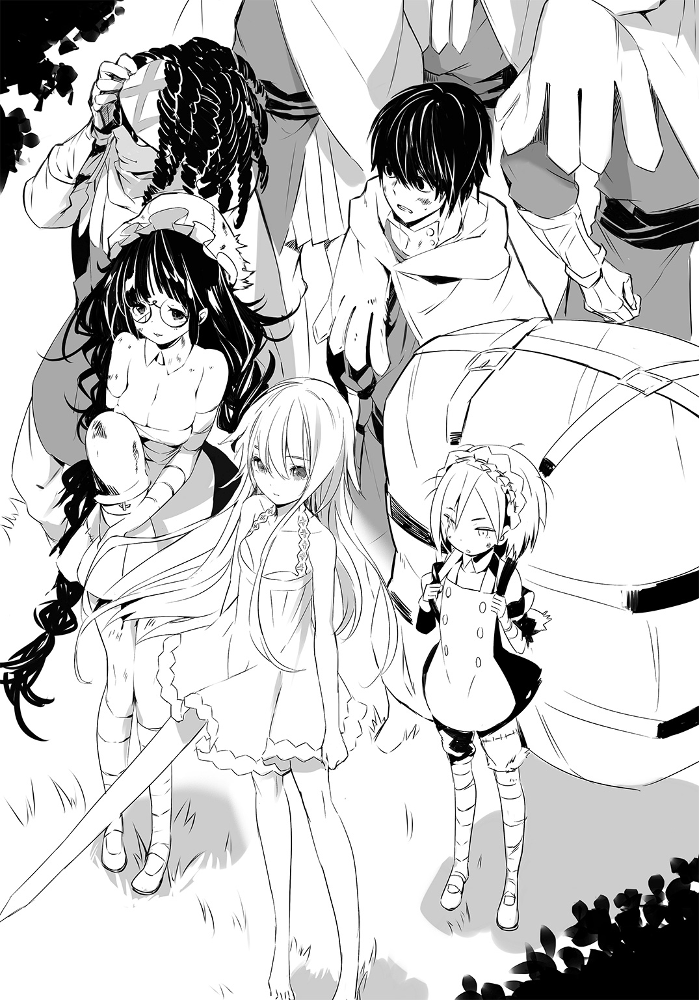
とくに、さっさと帝国に降ってその走狗と成り下がったカバラ大王国の兵士たちが、もっとも用心すべき追っ手だった。彼らの中には、帝国に降伏したふりをしている偽装投降兵も相当数、含まれていた。さすがに歴史の長い、長すぎるほどに長いカバラ大王国だった。その住人たちも一筋縄ではいかない、一癖も二癖もある人々ばかりで、抜け目なく帝国に鞍替えする者もいれば、そうと見せかけて帝国に一泡吹かせてやろうと企む者もいて、そのような者を騙くらかして帝国に密告し、利益をえようとする者がいたり、そうやって帝国におもねる利己主義の塊を演じつつ、憎き帝国に復讐しようと目論む者までいたりして、もう何がなんだかさっぱりわからなかった。
ようするに、誰も信じるな、いっそ人目にふれるな、誰とも会うな、ということなのだが、帝国軍に追われつつ、ひたすら人里離れた場所を移動しつづけるのは限界があった。というより、不可能だった。
食糧なり何なりを求めて人と交われば、またたく間に情報が広まって、追っ手か協力を申し出てくる者が現れた。追っ手は撃退するか、逃げるしかない。どっちにしても、さらなる追っ手を呼び寄せることになる。協力者は、味方なのか、それとも味方を装った敵なのか。期待はほとんど裏切られたが、たまに本物の協力者がいたりするものだから、言い方は良くないが、まったく質がクソ悪い。いや、協力者の尊い志と尽力には感謝するしかない、実際、助かったことも多々あるのだが、協力者の皮を被ったろくでなしどもが、本当にクソだ。やつらは最下級、最低、最悪のクソと呼ぶしかない。
まあ、こちらには我らが無敵の姫がいるわけで、ルルチナも一人の戦闘者として尋常ではないし、及ばずながらハイジも人並み以上には働ける。ちょっと負傷した関係で、左手は役に立たなかったりするのだが、それでも姫とルルチナがいてくれれば、あくまで魔性のおかげではあるものの、百や二百の兵士、機士は、どうとでもなるのだ。千、二千でもまあ、なんとかなる。ついでに、相手が機士なら、ギチコにも手助けしてもらえることが、この逃亡生活の間に判明した。
とはいえ、ルルチナにしても、ハイジにしても、一騎当千の姫でさえ、やっぱり生身の人間なのだ。人間である以上、疲れれば呼吸が乱れるし、息が上がれば動きが鈍る。最後には動けなくなってしまう。
ゆえに、戦闘はここぞというとき以外、避けるべきだったし、ニカ大尉はその大方針に従ってサクラ隊を指揮した。
基本的には、逃げ隠れしてきた、ということだ。
そのうち、帝国はカバラ大王国だけでなく、同時になんと、我がデスティニア公国にも侵攻しているという情報が耳に入ってきた。
これは、控えめに言っても大衝撃だった。
何しろそれまでは、帝国の目を眩ましてカバラ大王国領から出て、公国に戻ることさえできれば、とりあえず一件落着――というつもりでいたのだ。ところが、どうもそういうわけにはいかないらしい。
伝え聞く戦況が、どれも公国にとってかんばしくないものばかりだったことも、ハイジたちを焦らせた。いや、ニカ大尉はだいたい落ちつき払っていたが、ハイジは焦燥に駆られ、居ても立ってもいられない気持ちになった。
だって、ド田舎とはいえ、ハイジの故郷であるトクタリ邑だって、帝国軍に踏みにじられるかもしれないのだ。
帝国軍のやり口は、この目で見て、肌で感じて、よく知っている。連中は、ファウラス城市で下民を道具のように使って犠牲にした。カバラ大王国は今まさに、蹂躙するように侵略されている。やつらは、刃向かう者には本気で容赦しない。略奪はともかく、婦女子を暴行したり、ことさら惨たらしい殺し方をしたりするわけではないが、殺すとなったら徹底的に殺す。残虐、というより、無慈悲、という言葉がぴったりだ。
人間ではない生物を改造して作られているという、操られるがままに戦って殺す機士は、帝国の象徴であるようにも思われる。
カバラ大王国でも、住民が抹殺されて邑一つが消え去り、あとには積み上げられた死体しか残っていない、という悪夢のような光景を、ハイジは目の当たりにした。
ある意味、さらに恐ろしいのは――その死体置き場に帝国軍の一部隊が戻ってきて、片付けはじめた。穴を掘って、次から次へと死体を放りこみ、油をかけて燃やしてしまったのだが、その一連の作業はすべて、人間ではなくて機士が行った。
無言で、実に淡々と。
ハイジは、ウォルフ兵長、ルルチナと共に物陰に隠れて、その一部始終を見守った。機士は三百人くらいしかいなかったし、ルルチナと二人で掛かれば、全滅させることもできただろう。そうするべきなんじゃないかと思わなくもなかった。人として、あの所業は許せない。許していいわけがない。あのような極悪非道をなす者には罰を下すべきだ。あんなことをするやつは、殺されて当然だ。絶対に、殺されなければならない。
でも、ハイジは動かなかった。最初、どこからか噴き上がってハイジの全身を焼き尽くしてしまいそうだった怒りが、ひどくねじ曲げられて得体の知れない、えらく冷たい殻のような物と化し、ハイジの躰の外側をすっかり覆っていた。
機士が憎くないわけではなかった。しかし、機士を殺してどうなる？
――そう。
悪いのは機士ではなくて、機士を使って悪逆をほしいままにしている帝国だ。
だが、その帝国とは、いったい何なのか？
ハイジはそのとき、敵を見失っていた。
実際のところ、今もまだ、敵の本体が見えているとは言いがたいのだが、自ら手を汚さず、機士のようなものに人を殺させ、領土を拡張する、その化物めいた意思、あるいは強欲、その権化、支配欲の怪物――それこそが帝国という名の敵なのではないかと、おぼろげに考えてはいる。帝国には、形があるようで、形がない。大きさ、広がりだけがあって、すべてをのみこんでしまおうとしている......。
王の道をびっしりと埋め、一心不乱に、いや、心などなく、ただ動いている機士たちの列を、ハイジはふたたび、じっと見つめる。
恐怖は、ない。微塵も。恐ろしさとはまったく異なる、たとえば――そう、虚しさのようなものが、ハイジを萎えさせる。あの機士を、たとえ千、二千、五千、一万人殺したとしても、帝国を止めることはできないだろう。
――勝つのは難しいな。
ニカ大尉が言った。そのとおりだ。ハイジもわかっている。正直、勝てないんじゃないのか、とさえ思う。それに比べれば、大尉の考えは、難しい、だ。勝てない、とまでは言わなかった。ハイジのほうがずっと弱気なのに、よくも大尉を咎められたものだ。
だから、大尉には勝てない、とハイジは思う。
ハイジならば、勝てない、で終わってしまう――諦めてしまうところを、大尉は踏みとどまって、何か手立てはないかと頭を絞りつづける。強い人だ、と思う。大尉がいてくれてよかった。ハイジだけでは、姫を支えてここまで来ることはできなかっただろう。ルルチナやギチコでも、無理だったろう。大尉がいてくれて、本当によかった。
「勝つのは、難しい」
ニカ大尉はそう言うと、顎をしゃくって王の道を示した。
「ただ、戦いようはある。――五百十七侵攻団」
......そう。
五百十七侵攻団。
苦心惨憺して収集した、決して膨大とは言えない情報の数々。敗走する公国軍を見聞きした者たちの話。邑々から逃亡した人々が伝え広める噂。陥落した城市から、命からがら逃れた男たち、女たちの目撃談。
必ずとは言わないまでも、頻出する名がある。
それが、五百十七侵攻団。
率いるは、馬ではなく、歩行鳥という西大陸の動物に乗っている、裸とみまごう奇妙な衣装を身にまとった、まだ若い女。
帝国宮家の出だという。
亞璃簾宮太華子。
ファウラス城市で第八公軍と七六旅団に煮え湯を飲ませた、帝国軍ファウラス占領団の総監が、奇しくも、この大侵攻でめざましく恐ろしい活躍を見せている五百十七侵攻団を統率しているらしいのだ。――奇しくも......？
これは偶然なのか？
それとも必然か？
世界神カバラが定め給う運命なのか？
「帝国軍といえども、中枢を担うのは人だ」
ニカ大尉は低い声で言う。
「中枢を潰せば、機能が不全となる。――公女殿下。女を狙ってください」
「わかってる」
姫は目をつぶって、深呼吸をした。
瞼を開ける。
ああ、なんて美しい。
ハイジたちはこんなにも汚れきっているのに、姫だけは輝いている。
姫はちらっと振り返って、ルルチナを、それから――ハイジに一瞥をくれた。死んでもいい、と思った。
「少数精鋭でやる。ルルチナ、中尉、一緒に来て。ギチコは状況次第。大尉が判断して。あとは待機。一人も死なないこと」
――もちろん、死んだりしません、と心に誓いながら、ハイジはうなずいた。
「はい」
「かしこまりました」
ルルチナが一歩、足を踏み出した。
「――往ってくる」
姫が駆けだした。
ルルチナが、ハイジがつづく。
たった三人。三人でいい。この三人で目に物を見せてやる。
斜面を駆け下りる。声を出さず、派手に音を立てないようにしてはいる。でも、人間の軍隊ならきっと、一人か二人はすぐハイジたちに気づくだろう。何だあれは、と騒ぎだすはずだ。機士は違う。彼らは気づくということがない。
姫が、跳んだ。
10メトル、いや、それ以上を一気に落下して、着地する。
ハイジはルルチナをちらっと見た。ルルチナがうなずいてくれた。
姫に負けじと、跳躍する。
落ちる。
落ちてゆく。
地面を、さらに蹴る。
姫が機士の列に突入した。
「すぅぁぁぁぁぁぁぁぁぁぁぁぁぁぁぁぁぁぁぁぁぁぁぁぁぁぁぁぁぁぁぁぁぁぁぁ......！」
長剣は、振らない。
姫は機士たちにぶつかっていった。
三人か四人の機士がいっぺんに撥ね飛ばされ、他の機士たちを巻きこんで宙を舞った。
もちろん、姫は止まらない。そのまま突っこむ。一秒ごと、いや、一瞬ごとに、機士がぶっ飛ばされる。
またたく間に、機士の隊列に穴があいた。それも、派手に、大きな穴が。
ハイジはその穴に突入した。
あまり役に立たない左手で精一杯、無理やり握り締め、その上から布をぐるぐる巻きつけ、縛りつけてある鞘から、右手で剣を引き抜く。
アルトレッド中将から拝領、いや、借り受けたと思っているカバラの剣、ワイバーンは、ついに取り返せなかった。
ゆえに、これはありふれた、クズのような、どこの何者が使っていたのか知れない、とりあえずカバラ大王国軍の様式だということだけは確かな、ぶっちゃけ、拾い物の軍剣だ。
充分だ。
「――〝君は僕の黒い太陽〟......！」
ハイジは知っている。
己の瞳が、もっと黒く、黒く、黒く、輝いていることを。
ハイジ・バランの目は、もともと黒と言っても噓にならないほど濃い褐色で、光ってもよりいっそう黒く見えるだけであり、従って、光っているようにはとても見えないことを。
魔性を持つ姫が、ルルチナがそばにいて、ハイジの魔性は自動的に発動し、この身を速く、速く、速く、速く、疾く迅く迅く迅く迅く迅く迅く迅く迅く......！
ああ――、
限界が見える。
それは遠くにある。
遥か遠くに、口をあけている。
ハイジはその限界へと向かって走る。まだだ。もっと迅く走れる。否、否、走っている場合じゃない、そうじゃなくて、斬れ！
趨らせろ、無銘の軍剣を！
斬れ味など、不要。
斬れない剣にも斬らせればいい。やりようによっては、棒切れでも斬れる。
ハイジは軍剣を逆手に握った。右腕は肘を曲げて、固定する。あとは動く。躰を動かして、軍剣を機士の首に叩きつける。
斬れる、というよりも、機士の首が弾け飛ぶ。
次から次へと。
一人。
二人。
三人。
四人。
五人。
六人。
七人。
八人。
九人。
十人。
十一人。
十二人。
十三人。
十四人。
十五人。
十六人。
十七人。
十八人。
十九人。
二十人。
二十一人。
二十二人。
二十三人。
二十四人。
二十五人。
二十六人。
二十七人目の首を刎ね飛ばしたところで、機士たちが迎撃の構えを見せはじめた。
しかし、すでに百人以上の機士が姫に吹っ飛ばされている。ハイジは二十七人斬って、ルルチナも十人かそこらは殴り倒し、蹴飛ばしていた。それに。
――それに、だ。
クソどもめ。
「くっはははは......！」
ハイジは笑いながら二十八人目、二十九人目の首を斬り飛ばす。
「わかってない！ 姫だ！ 姫だぞ！ 僕らの姫......！ 無駄だ！ 無駄なんだよ......！」
三十人目。
三十一人目。
クソ機士どもが、姫に、ハイジに、ルルチナに殺到する。
とりわけ、姫に。
「――っっっっっっっっっっっっっっっっっっっっっっっっっっっっっっっっ......！」
姫は、ただ受け止める。甲機士の重槍を。乙機士の鈍剣を。避けたりしない。防がない。すべてをその身で受ける。
もっとも、重槍だろうと鈍剣だろうと、姫の躰には決してふれられない。ふれる前に、その寸前で、弾き返されてしまう。それも、突き出し、斬りつけた力の二倍、三倍の反発力を、機士たちはまともに食らう。
姫も無傷ではいられない。いや、姫の肉体が傷つくことはないのだが、痛みは姫を苛む。しかも、反発力のぶんだけ――つまり、重槍で実際に貫かれるより、鈍剣で本当に殴打されるより、倍も三倍も、姫は痛いのだ。
想像を絶する苦痛だろう。
そのクソみたいな激痛を思うたびに、ハイジは姫に害をなすありとあらゆる敵、敵、敵を、八つ裂きにして、細切れにして、わずかな痕跡すら残らないように、きれいさっぱり滅ぼしてやりたくなる。なぜハイジが代わりにその痛みを引き受けることができないのか？ 誰がそんな理不尽な仕組みを考えたのか？ 考えたのではなく決めたのだろうか？ たとえば神とか、そのあたりが？ クソめ......！
「クソ！ クソ！ クソ！ クソ！ クソ！ クソ！ クソ！ クソ！ クソ！ クソ！ クソ！ クソ！ クソ！ クソ！ クソ！ クソ！ クソ！ クソ！ クソ！ クソ......！」
ハイジは追う。三十二人目、三十三人目、三十四人目、三十五人目、三十六人目、三十七人目、三十八人目、三十九人目、四十人目の首を刎ねつつ、姫を追いかける。
姫はクソ機士どもを撥ね返し、薙ぎ倒しながら、進む。
突き進む。
機士の隊列を切り裂いて突進する姫を、ハイジは独りにしたくないのだ。
「――うぁぁぁりゃあああ......！ ずぁりゃああ......！ どっせやああああぁぁぁぁ......！」
後ろにいるルルチナもハイジと同じ気持ちだろうから、あえて振り返らない。
「姫！ 姫！ 姫ぇぇぇぇぇ......！ お供します、姫ぇぇぇぇぇぇぇぇぇぇぇぇぇぇ......！」
四十一人目、四十二人目、四十三人目、四十四人目、四十五人目、四十六人目、四十七人目、四十八人目、四十九人目――これで、五十人。まだまだ......！
姫の背中が迫っている。
追い越して、前に――出る......！
そうしようとした瞬間、機士たちの挙動が変わった。
逆流、と感じた。
「――退く......!? 姫......！」
「させはしない......！」
姫が、回れ右しようとする機士に跳び蹴りをお見舞いした。
しかし、機士たちは逃げる。姫から、ハイジたちから、離れてゆく。
ハイジたちは機士の隊列に横合いから斜めに突っこんで、深く、深く、その中央部に入りこもうとしていた。そこに歩行鳥に乗った女がいることは、遠目で確かめていた。
機士たちは隊列を前後二つに割って、前の列は前進し、後ろの列は後退しようとしていた。王の道を埋め尽くす、密集隊形に近いほど密度の高い隊列だったのだ。それは曲芸めいた部隊行動と言ってもいい。人間の兵隊であれば、確実に大混乱を来し、にっちもさっちもいかないどころか、味方同士が押し合いへし合い、突き倒し合って、大変なことになるだろう。だが、機士は違った。
機士たちはほとんど渋滞せずに逃げてゆく。まるで、おのおのがどの順番で、どういう速度で動けば秩序が乱れないのか、完璧に承知しているかのようだ。
「――っっっ......！ もう少しなのに......！」
姫がまた二、三人の機士を蹴っ飛ばしながら叫んだ。
ハイジも見た。
いる。
距離はおそらく、20メトルほどか。
機士たちの向こうに、歩行鳥に乗った、奇態な装束を身にまとっている女の姿があった。
「クソ......！」
事あるごとに、クソ、という単語が頭に浮かぶ。、クソ、クソ、クソ、クソ、そればかり言っている。いつからこんな汚い言葉を平気で吐くようになったのか。逃亡生活がすっかりハイジの精神を荒廃させてしまったようだ。クソ、帝国のクソ女、逃がしてたまるものか......！
でも、追いつけるか？
――疑念がハイジの頭をよぎったとき、機士たちが乱れた。直感した。
「ギチコさん......！」
向かって左。
一部の機士が、逃げるどころか、他の機士たちに襲いかかっている。もちろん、機士は反逆したりしない。
――〝無慈悲な玩具〟。
人形を巧みに、なんと自身の躰よりも自在に、しかも、一体だけではない、数十体の人形を同時に操ってしまう、ギチコの魔性。
その魔性が、機士にも通用することを発見したのは、実のところ最近だ。ギチコ曰く、ふっと思いついて、やってみたら、できちゃった――のだという。
まあ、専用の人形ほど上手に操ることはできないようだし、長い時間、支配するのも不可能らしい。一度に動かせる機士の数も、人形に比べたらずっと少ない。
ただ、一糸乱れず、一つの生き物のように連動するのが売りの機士が、突然、ごく一部とはいえ錯乱したら？
影響は大きいはずだ。機士を操っている帝国軍の人間は、少なからず動揺するだろう。指揮官――あの帝国のクソ女だって、うろたえるに違いない。
付け入る隙ができた、ということだ。
20メトル。
機士どもを斬り伏せて進むのでは、おそらく追いつけない。
駆け抜ける？
それとも？
「――飛びます、姫......！」
「え」
姫が振り向いて、大きな目をぱちくりさせた。
「飛べるの？」
「いや、比喩なんですけど......！」
答えながら、ハイジは加速する。
一瞬で姫を追い抜き、跳んで――こちらに背中を向けている機士の肩を蹴る。
強く蹴って、前方へ。
また別の機士の肩を蹴って、前へ。
今度は違う機士の頭を蹴って、さらに前へ。
あっという間だ。
――女。
変な恰好をした、帝国のクソ女。
声なんか出さない。出してやらない。
軍剣を順手に握り替える。
恨むな、とは思わない。せいぜい恨め。静かに、一振りで、殺してやる。鎧も、兜もつけていない、華奢な女だ。簡単に殺せる。
でも、殺意すら押し殺す。殺気が女の第六感のごときものを刺激して、気どられてしまわないとも限らないから、死ね、なんて思ったりしない。これからハイジは軍剣を振る。その結果として、女は死ぬ。ただそれだけだ。
察知されるわけがなかった。女はハイジに背中を向けている。これから自分が殺されるだなんて、微塵も考えていない。何も知らないまま、女は死ぬ。そうなる。必ず。
確定的な未来が、どうして歪められたのか。
女の隣に、騎兵がいた。騎兵といっても、鎧すら着ていない。帝国の衛服姿だ。大柄で、白髪交じりの、若くはなさそうな男だった。ハイジはその男にはまったく注意を払っていなかった。眼中になかった、と言ってもいい。
その男が、とっさに女の腕をつかんで、歩行鳥から引き下ろしたのだ。男が振り向いたのは、それと同時だった。つまり、その男はハイジを見る前に、感じていたのだ。
おかげで、ハイジの軍剣は空を斬った。
いや――、
紙一重だったのだ。
軍剣の刃は、女をぶった斬りはしなかった。
女の頭をすっぽりと覆っている、帽子のような物の一部を斬り裂いただけだった。
ついでに、そこからこぼれた黒い、黒々とした髪の毛も何本か、何十本か、斬り飛ばした。
いずれにせよ、それだけだった。外した。
ハイジは仕損じた。
でも、まだだ。ハイジは女の頭上を行きすぎて、白髪交じりとは別の騎兵に体当たりした。その騎兵を馬から蹴倒して、鞍を蹴った。女に飛びかかる。今度こそは......！
「......きっっっっっっっっさまぁぁぁぁぁぁぁぁぁぁぁぁぁぁぁぁぁぁぁぁぁぁぁ......！」
それはカバラの言葉ではない。たぶん、帝国の人語だろう。
あの男だ。
帝国の女を間一髪のところで助けた、白髪交じりの男。
意外と、若い......？
そんなことはどうでもいい。
男は力任せに女を歩行鳥から引っぱり下ろしたせいで、自分も落馬しそうな体勢になっていた。落ちてしまわないようにこらえて、あわよくば持ちなおす。それで精一杯だろう。
不可能だ。
あんな姿勢で太刀を抜いて、振り回すなんて。
しかも、並大抵じゃない太刀筋だった。加えて、あの男はハイジの動きを見越していた。完璧に見抜いたうえ、帝国の女とハイジとを結ぶ直線上で太刀を振った。
回避できない。
無視もできない。
「ちぃぃぃっ......！」
ハイジは男の太刀を軍剣で払いのけようとした。それ以外に選択肢がなかった。もっとも、できるはずだった。姫から離れているとはいえ、まだ魔性の発動圏内だ。常人では今のハイジを止められない。
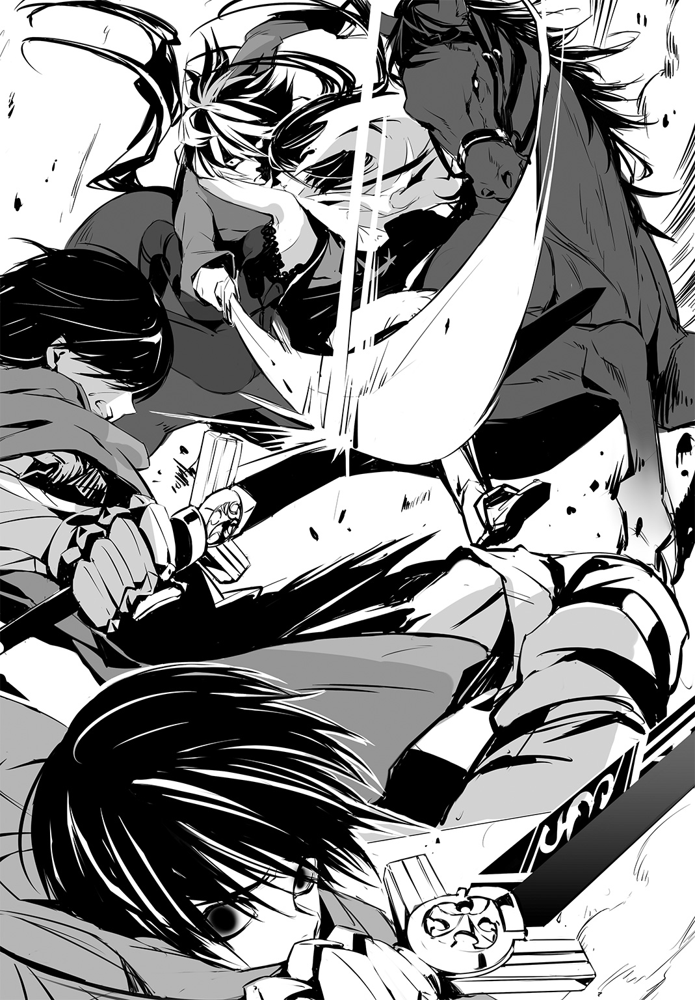
ハイジの軍剣と、男の太刀がぶつかりあう。
「――なっ......!?」
噓だろ？
押し――負ける......!?
空中にいて、当然のことながら踏んばりのきかないハイジが押し負ければ、地べたに叩きつけられるしかない。
とっさに受け身をとって、すぐさまハイジは転がった。
ハイジを踏み潰そうと、馬が蹄を突き落としてくる。
女を殺らないと。
わかっている。でも、そのためにはまず、馬蹄から逃れないといけない。騎兵たちも馬上から太刀を振り下ろし、突き出して、ハイジを狙う。これらもむろん、よけなければならない。かいくぐって、ふたたび女に肉薄し、殺す。やれる。自信はあった。
ただ、ちょっとだけ時間が要る。
心臓が五回か六回、脈動する程度の時間さえあれば。
「......亞璃簾様......！ お手を......！」
あの男が女に向かって手をのばす。
「仕方ない！」
女が男の手をとって、一瞬で鞍上に引っぱり上げられてしまう。
男が馬に女を同乗させて、駆け去ってゆく。
「――っざっ......けるなあぁぁぁぁぁぁぁぁぁぁぁぁぁ......！」
あと一歩、いや、半歩だった。殺せるところだったのだ。ハイジは確信していた。あの女を殺せば、帝国軍に大きな打撃を与えることができる。あれは、そういう女だ。理屈抜きで、わかるものだ。感じるのだ。
それだけの女なら、彼女を守ろうとする大きな力もあるはずだというところまで、想像しておかなければならなかった。
これで殺れる、と信じられる方法から、さらに一段、二段進めて、精度を上げなければならなかったのだ。
ハイジはそれを怠った。
甘かった。
「クッソォォォォォォォォォォォォォォォォォアアアアアアァァァァァァァァァッ......！」
自分自身に対する憤りを、ハイジは帝国軍の騎兵たちにぶつけた。機士にぶつけた。もちろん、あの男と女を乗せた馬を追いかけている。でも、速い。なんて逃げ足だ。もはや追いつくことはできまい。ハイジは失敗したのだ。ならば、さっさと退くべきだ。わかっているのに、ハイジは執拗に軍剣を振るい、血を流しつつづけた。軍剣で斬り、突くだけでなく、左手に縛りつけてある鞘で殴りまくった。軍剣が折れると、騎兵の太刀や機士の鈍剣を拾って使った。いつまでも、いつまでも。殺せる相手がいなくなるまで、殺しつづけた。
×
結局、公都の庭、ベドゥノー平野に入りこんだのは、先発の三百二侵攻団と、五百十七侵攻団の三分の一ほどでしかなかった。あとは王の道を引き返して、エルダ平原まで押し戻される恰好になった。
ベドゥノーの野は、庭園のように美しく整えられているが、実は景観がすぐれているだけではない。各所に防壁や堀が作られていて、これを熟知し、巧みに用いれば、有利に戦闘を進められるようになっている。真偽の程は不明だが、噂によると、地下通路まで張り巡らされているという。
おそらく、ベドゥノー平野に進入した敵部隊は、ファーガン要塞城市の公軍が対処して、撃滅してくれるに違いない。
ファーガン要塞城市に駐留している第五公軍のエルナン・トマ大将にしても、第五公軍のフレデリク・プロウ中将にしても、名将の誉れ高い、歴戦の指揮官だ。一個と三分の一侵攻団、三万足らずの機士など、あっさりこてんぱんにしてくれるだろう。
「......ざまあみろ」
ハイジたちは、王の道を見下ろせる、アーナット群山の比較的平たい場所に留まっていた。
間もなく日が暮れる。
イーブス兵長とモルケン書記官は、ニカ大尉の命を受けて、単身、ファーガン要塞城市へと向かった。モルケン書記官は連絡役としてファーガン要塞城市に残ることになっている。
トワン兵長とクワロー上等兵はベドゥノー平野方面へ、ルメ兵長とエスト上等兵はエルダ平原方面へ、それぞれ偵察に出ている。
この場で待機しているサクラ隊は、姫をふくめて十名。
ボル軍曹とウォルフ兵長は歩哨に立っている。
ニカ大尉とオーラン伍長は、小枝で地べたに何か描きながら、話しあっているようだ。ファニス准書記官もそれに加わっている。
ギチコは、樹木に背をもたれさせて腰を下ろし――眠りこけているのか。
姫はギチコの隣で暮れなずむ空を仰いでいる。
ルルチナの姿が見えない。どこかに行ったのだろうか。
ハイジは皆から少し離れた場所で、膝を抱えて座っていた。
ボル軍曹たちと一緒に、歩哨に立つべきかもしれない。さもなければ、ニカ大尉のそばに行って話を聞くべきだ。
なぜ、何もする気になれないのか。
しくじった自分に腹を立てている。それは確かだ。クソみたいにむかついている。怒りは一向に収まらないし、悔しくてたまらない。本当にクソだ。
こういうときは、左手がひどく疼く。
骨が砕けて、ちゃんと治りきらなかった。中指と薬指がうまく曲がらなくて、握り拳を作るのも難しい。今はもう、常に痛いわけではないが、ちょっとした動きや衝撃が響いて、激痛が走る。じっとしていても、じくじく、じわじわと痛むことがある。
この左手がまともだったら、帝国のクソ女を殺せていたかもしれない。
根拠もなくそんなことを考えてしまい、苛々する。
気がつくと、姫がこっちを見ていた。
「っぁ......」
ハイジは慌てて下を向いた。――ああ、痛い。
痛い、痛い、痛い。
この左手め。
唇を嚙む。嚙み切ってしまいたい。
何か変だという自覚はある。いつからだろう？ わからないが、最近、というわけではないように思う。とにかく精神が不安定だ。痛みのせいだろうか？ そうとも言えまい。痛みなんかまったく気にならないときもある。痛みのせいではなくて、何かがおかしいせいで、痛みが気に障ってしょうがないのではないか？
たぶん、ハイジが変だということは、皆、感じている。ボル軍曹やウォルフ兵長、ルメ兵長も。ニカ大尉たちも。姫もきっと、わかっている。
壁を感じる。みんなとの間に、壁のようなものがある。
あいつはどうも変だから、近づかないようにしよう、と思っているのか？ それとも、そっとしておいてやろう、と気を遣ってくれているのか？
あるいは、単なる考えすぎだろうか？
そうかもしれない。ハイジは変だから、考えすぎているのかもしれない。
これではいけない、と思う。なんとかしないと。しっかりしろ、ハイジ・バラン。左手が何だ。痛いからどうした。疲れているから何だ。みんな同じじゃないか。姫以外は、痛いところが一つもない人なんていない。姫は、躰に傷を負わなくても、心は深く傷ついている。耐えろ。我慢するんだ。できるはずだ。
「中尉」
と、声をかけられて顔を上げると、ルルチナに見下ろされていた。
ハイジは思わず、歯を食いしばった。
「......は、はい。えと、ど、ど、どうされ......ました？ あ、そういえば、ルルチナさん、いなかったですよね。さっきまで」
「それは」
ルルチナは横を向いた。
「小用に」
「ああっ！」
ハイジはうつむいた。
「ご、ごめんなさい。お、おかしなこと、訊いてしまって......」
「いえ。べつだん、おかしなことはありませんし」
「そ、そうですよね。自然というか、生理現象というか......」
「ええ、だとしても、そのことについて言及するのはもう、おやめいただけますか」
「うわっ。ごめんなさいっ。......で、で？ ぼ、僕に何か......？」
「はい」
そう言っておきながら、ルルチナはなかなか切りだそうとしない。どうしたのだろう？ ハイジはおそるおそるルルチナを見上げ、顎をしゃくって自分の隣を示した。
「......あのう、も、もしよければ、ですが、座り――ますか......？」
「はい。それでは、失礼いたします」
ルルチナはハイジの隣にちょこんと座った。
姫が訝しそうにこっちを見ている。その視線が気になってしょうがない。
「......ええと、ぼ、僕に何か、お話でも......？ い、一応ですね、襲撃がうまくいかなかったことは、反省してます。チャンスだったのに、僕がふいにしちゃって......」
「中尉は最善を尽くされました。違いますか？」
「......いやあ、がんばっても、失敗しちゃったらどうしようもないよなあ、と」
「帝国軍の大半を撤退させました。充分な成果ではありませんか」
「一時的、ですよ。どうせまた来ます。それに......今度はたぶん、同じ手は通用しない」
「中尉はそうお考えなのですね」
「僕の考えっていうか、事実です。今回、敵は警戒していなかったわけですから。こういうことがありうるんだと思えば、防ぎようはいくらでもあります。僕だって、考えつきますから。僕が思いつくようなことを、敵が思いつかないはずがない。次はだめです。少なくとも、まったく別の手を考えないと。もっと決定的で、意表を突く作戦が必要です。そんなの、あると思います？」
「どうでしょう。ルルチナは一介の侍女にすぎませんから」
「厳しいですよ。次は、とても厳しい」
ハイジは右手で左肘をきつく押さえた。肘のある部分を指で強く押すと、腕から指先まで痺れが走る。そうやって傷みをごまかす術を、いつの間にか見つけていた。
「今回、あの女を殺しておくべきでした。まあ、あの女一人を殺して、それでどうなるってものじゃないのかもしれません。だけど、あの女は異質です。なんていうか、気みたいなものがあるんですよ。あの女はファウラスにもいたみたいだし、運命だとか言うつもりはないですけど、何か感じるんですよね。僕らにとって、あの女は良くない存在なんです。あの女は殺すべきなんだ。僕が殺さなきゃいけなかったんですよ。僕は殺せたんだ。僕があの女を殺していたら、流れが大きく変わったと思うんです。大失点ですよ、これって。絶対、殺しておくべきだった。悔やんでも悔やみきれないです。みんな、本当はそう思ってますよね？ 僕は失敗したんです。大失敗ですよ。クソ......やんなっちゃうなあ......あっ、ごめんなさいっ」
ハイジは冷や汗をかいた。肘を押さえすぎて、左腕が震えている。
「僕だけ話しちゃって。しかも、しょうもないクソみたいな話ばっかり。そんなつもりじゃなかったんですけど。なんか、あの、止まらなくなっちゃって――」
「中尉」
「は、はいっ？」
「痛みますか」
「えっ。な、何がですか......？」
「左手です」
ルルチナは手をのばそうとして一度引っこめたが、おずおずと、顔をしかめながらも、ハイジの左腕をつかんだ。
「――痛むよな......？ 痛むに決まってる。大変なこと、しちまった......」
「いやぁ」
ハイジは笑おうとした。顔面の筋肉が引きつって、うまく笑えない。そもそも、上手に笑顔を作る能力なんて、ハイジには備わっていないのだ。
「......い、痛いっていうか、そりゃまあ、まったく痛くないって言ったら噓になりますけど、そ、そんなに――っていうか、そういう、な、何ですかね。あの、痛いとか、べつに関係ないっていうか、あれはあれでしょうがなかったわけで、僕はとくに何とも思ってませんし、お、思ってるわけないじゃないですかっ、なんかそれはそれで......心外っていうかっ」
「中尉......」
「ぜんぜんっ」
ハイジはルルチナの手を振り払った。
「あ、あのことでルルチナさんが責任を感じるとか、悪いとか......や、やめてくださいよ、僕は......そりゃあ、もどかしいことはあるけど......そういう問題じゃないっていうか、少なくとも、ルルチナさんのせいではないわけで、僕は......僕自身の問題だと思ってるし、僕が自分で解決するべきことで、ルルチナさんは......関係ないでしょ？」
言ってしまってから、ひどい言い種だと痛切に思った。そんな突き放すような言い方をされたら、ルルチナがどう感じるか。
「えぇぇぇぇとあの、すみませんでした、言いすぎたっていうか口が滑ったっていうか、いや、そうじゃないな......と、取り消します、今のは。取り消させてください、お願いします」
「ご心配なく。気にしてはおりません」
「......いや、怒ってますよね？ めっちゃ気にしてません......？」
「いいえ」
ルルチナはそっぽを向いて、チッ......と、舌打ちをした。
「まったく」
「噓だぁぁぁぁぁぁ......」
「――しつっけぇーな」
「今、しつこいって！ 小さいけど、怖い声で！」
「空耳ではありませんか」
「僕、耳はわりといいほうなんですよぉ......」
「痛みますね？」
「へっ」
「左手です」
ルルチナはじっとハイジを見据えた。
「けじめをつけておきてぇんだよ。このルルチナ・リリィローエンは、中尉に一生物の傷を負わせちまった。その傷はきっと、この先も折に触れて痛む。死ぬまで左手は満足に使えねえだろう。正直、どうやって償ったらいいのか、さっぱりだ。だいたい、償えるものなのか。何か方法があるなら教えて欲しいくらいだよ。中尉、何かねえか。もし中尉が少しでも楽になるなら、何だってする」
「......な、何でも？」
「ああ。どんなことでも、だ」
「ど、どんな......こと、でも......」
「そうだ。こいつは本気で言ってる」
ルルチナはぐいっと身を寄せてきて、
「一つでも、二つでも、三つでもいい。言ってくれ」
それから目を伏せ、
「......どうか、言ってください」
と言いなおした。
妙にどきどきしてきた。――あれ？ 何だろう？ ルルチナのような女の子？ が、何でもする？ ハイジの言うとおりに？ これは......？
なんか、やばくないですか......？
やばい、というか？ いいのかな？ 公序良俗に反するような？ ハイジが変なことを考えているだけか？ そうだ。そうに違いない。ルルチナにそんなつもりはないだろう。
ハイジが邪なのだ。
邪悪なる生物、ハイジ・バランよ、滅びよ、この世から去れ......！
「だ、だだい、だだい、だだっ、だっ、だだいっ、大丈夫です！」
ハイジは片目をつぶって、あえて左手で親指を立ててみせた。
「ほ、ほら！ 左手もこのとおり！ なんとかなってますし！ まだちょっと痛いことは痛いですけど、これからグングン良くなりますから！ バッチグーですよ！ 僕はあの、ようするに、失敗しちゃって、落ちこんでただけです！ でも、ですけど、まだ打つ手はあると思いますし、ニカ大尉が何か考えてくれるはずですし、次は必ず、うまくやりますから！ そ、そもそも、僕の魔性が発動するのって、姫とルルチナさんとギチコさんのおかげなわけで！ 魔性のおかげで僕は姫のお役に立てるわけで、ルルチナさんには感謝しかなくて！」
ルルチナはハイジの小刻みに震える左手を凝視している。――クソッ。震えるな。止まれ。止まれったら。根性だ。気合いだ。よし。よし。よし！ いいぞ、止まってきた......！
「ほらほらぁ！ 良くなってきた！ 絶好調ですよ！ いやあ、それもこれもルルチナさんのおかげだなあ！ そう言わざるをえないなあ！ そ、そんなわけで、ふとぅっ、ふとぅつっ、ふとぅとぅっ、ふとつかっ、ふっつか者ですけど、じゃないな、ふつっ！ つかっ！ 者ですけど、今後ともよろしくお願いします！」
「......それは、まあ」
「ほんと、目が覚めましたよ！」
ハイジは立ち上がって左手を高々と掲げた。握る。渾身の力をこめて、握り締める。痛くない――わけではないが、超えろ！ と念じた。こんな痛み、超越してやる！
「つぁぁぁぁああぁあああぁぁぁぁぁぁぁあああぁぁぁぁ......！ よっしゃあ！ 来た！ できたじゃないですかあ！ ほらあ！ 握れましたよ！ ちゃんと！ 僕、甘えてたんだなあ、痛くて、怖くて、できないと思ってたんだ！ 弱気だったんですよ！ 克服しました！ ルルチナさんのおかげです！ ありがとうございます......！」
「......ちゅ、中尉」
「はい!?」
「......鼻血が出ています」
「えぇ!? わぁっ、ほんとだ、鼻血だっ！」
ハイジは袖で顔をぬぐって、ちらっと姫のほうに目をやった。
姫はさっと目をそらして、唇の動きからすると、
「......ばかみたい」
と呟いたように見えた。
×
左手の状態は――悪化した。
明らかに、無理をしたせいだろう。
馬鹿で、ごめんなさい......。
いったんは引き下がった帝国軍も、三日としないうちに再度、王の道に進軍してきた。
もちろん、今度は相手も工夫してきて、どれがどの侵攻団なのか区別がつかず、また、少なくとも遠目からは、全員が機士にしか見えなかった。歩行鳥どころか、馬すら見当たらない。徒歩で機骸をまとって隊列に紛れてしまえば、人間も機士と見分けがつかないのだ。
ニカ大尉は熟考したのち、攻撃を行わない決断を下した。
前回と同じように襲撃すれば、多少の打撃を与えることはできるだろう。しかし、帝国の女、亞璃簾宮太華子を見つけだして殺害するのはほぼ不可能だ。敵も何らかの備えをして、こちらを罠に掛けようとしているかもしれない。冒すリスクに見あう成果は望めないだろう。
オーラン伍長はファーガン要塞城市で軍務に就いた経験があり、アーナット群山の地理に通じていた。王の道以外にもアーナット群山を抜ける道は、いずれも難路だが、いくつかある。サクラ隊はそのうちの一つを通ってベドゥノー平野に入って、ファーガン要塞城市へと向かうことにした。ファーガン要塞城市には、すでにイーブス兵長とモルケン書記長が派遣されており、サクラスティアリス公女が旧カバラ大王国領を脱して公国領内にいることは駐留公軍に伝わっているはずだ。
王の道は通行が容易な早道だし、機士の足も速い。サクラ隊は身軽だが、難所を越えなければならないので、帝国軍を先回りするのは難しいだろう。
ハイジたちは無茶をせず、ほどほどに急いで山道を進んだ。一番きつそうなのは、まあいつもたいていそうなのだが、ギチコだった。
「うぉ......このおっぱいが、邪魔......」
たしかに、見ていると――いや、そんなにじろじろ見たりはしないのだが、ぱっと見でも、ギチコのあのボリュームがありすぎる胸部は、黙っていても重そうだ。ちょっと動くとびよんびよん派手に揺れるし、さぞかし処置に困るだろう。急斜面をよじ登ったりする際などは、直接的な障害物以外の何物でもないはずだ。
「......いっそちょん切ってやろうか」
あるとき、ルルチナが吐き捨てるようにそんなことを言ったら、ギチコはレンズがひび割れておおよそ常にずれている眼鏡の奥で目を輝かせた。
「ふぉ。切って。ください。ます。ませ？」
「切らねぇよ......」
「うがぁ。邪魔ぁぁぁぁぁ」
暴れるギチコを見て、姫が自分の胸をさわって、
「......瘦せないもの？」
と呟いた。
そういえば、姫はともかく、皆、程度の差はあれど、それぞれやつれている。ギチコも多少は顔がほっそりしたような？ でも、躰つきはさして変わっていないような？
「あたしの、ここには」
ギチコは乳房を大胆に持ち上げてみせた。
「いっぱい、つまってる。です」
「......詰まってる？」
姫は心底不思議そうだった。
「何が？」
「とぅあ？ ゆめ？ とか？ です？ か......？」
「わたしが訊いてるんだけど」
「ぐぁ。......ゆめ。です」
「どんな夢？」
「え、と......」
ギチコは、わかった、とばかりにうなずいた。
「サクラさまが、しあわせに暮らす。あたしの、ゆめ。ですっ！」
「......くだらない」
「むぉっ！ くだらなく、ないっ！ です！」
「くだらない」
姫は繰り返しそう言ってきゅっと唇を引き結ぶと、どこか遠くを見る目つきをした。
「幸せなんてよくわからないけど、少なくとも、みんなが不幸せなら、わたしも幸せにはなれない。それだけは、間違いない」
公家に生まれたから、ですか？ 公女という責任のある身分、立場だから？ それとも、他に何か理由が......？
訊きたいが、ハイジには訊けない。
結局、姫は公女で、ハイジ・バランはただの軍人でしかないからだ。出すぎた真似はできない。そう思うからだ。
一介の軍人であるハイジにできるのは、姫についてゆくこと。
どこまでも、いつまでも。
授かったこの魔性を、姫の御為に役立てること。
身も心も姫に捧げること。
×
「――苛々するのよ......！」
ナズナルリス・デスティニアリスは手筒望遠鏡をぶん投げた。
イエルヴァラ北門上の楼閣に据えつけた太守専用の座面が高い椅子の上から眺めるルヴァラ廃地の景色に、変化らしい変化はない。
帝国軍が大侵攻を仕掛けてきて、今やデスティニア公国のあちらこちら、いや、そこらじゅうで戦いが起こっている。
それなのに、よりにもよって、古今東西に類を見ない絶世の天才軍略家であるナズナが守っているこのイエルヴァラには、敵が押し寄せてこないのだ。
アルトレッド中将率いる第八公軍がいたころは、散発的ながら帝国の侵攻団がルヴァラ廃地を越えてきて、戦闘らしい戦闘が行われることもあった。
しかし――しかし、だ。
どういうわけか、ナズナ自ら出張って、魔性〝高圧と高慢の恐るべき狭間〟で一挙にけりをつけようとすると――本当に、あっさり、けりがついてしまった。
逃げるのだ。
卑怯にも、帝国軍の機士たちは、恥も外聞もなく、遁走をかました。
公国軍は各地で苦しい戦いを強いられている。ナズナの許にも毎日のように友軍の奮戦、苦境を伝える報が届けられる。
ところが――ところが、だ。
ナズナだけは楽勝の味しか知らなかった。
おかげで、イエルヴァラの守備は七六旅団を増強して新設された第九公軍のみで充分、ということになって、第八公軍は公都へ移動するように命じられた。
これはまあ、やむをえないというか、適切な判断であろうとナズナも思っている。
もともと公都には公都防衛隊と第一公軍が配置されていたのだが、第一公軍はフリージアン太子に率いられて帝国軍の迎撃に向かった。公都の言わば出城であるファーガン要塞城市があるとはいえ、公都自体の防衛力も強化しておきたい。暫定的な措置とはいえ、現在、第九公軍の司令も兼ねているナズナは、イエルヴァラの太守だ。とくにこの非常時に太守が城市を留守にするわけにはいかない。動かすとなると当然、第八公軍だ。
理解している。
納得してもいる。
だが――だが、だ。
「どういうことなのかしら......!?」
ナズナは右手の親指の爪を嚙み、すぐに行儀が悪いと思いなおしてやめたが、頭にきてしょうがないので、ほっそりとして形のいい両脚をばたばたさせた。
「このナズナを蚊帳の外に置いているかのような、帝国軍の動勢！ 何だというの!? エルダ平原は憎き野蛮な帝国の機士たちに荒らされ放題！ ついには連中の一部がベドゥノー平野に入りこんだとの信じがたい情報まで入ってきている！ このナズナがその場にいれば、そんなことは絶対にさせないのよ！ 優雅さの欠片もない、汚らわしい帝国の虫けらども！ 一匹残らず叩き潰してやるのに......！」
「――ナズナ様......！」
親衛隊〝Ｘ〟隊長アンドリュー・パルマーが、日焼けした顔をてらてらと輝かせてナズナを仰ぎ見ている。
「どうか！ どうか、どうか、このパルマーを叩き潰していただきく存じます......！ 遺憾ながら、帝国の虫けらどもはナズナ様に恐れをなし、一向にこのイエルヴァラには攻めてきませんので、代わりにどうか、このパルマーをば......！」
「いいえ！」
すかさず色白の親衛隊員セドリック・メナールドが叫んだ。
「どうか！ どうか、まずはこのメナールドめを叩き潰していただきたく......！ なんとなれば、パルマー隊長はえがたき親衛隊隊長であらせられ、ナズナ様の副官でもありますれば！ しかしてこのメナールドならば、叩き潰したところで何の問題も生じません......！」
「くっ......！ メナァールドォッ！ このパルマーを差し置いてナズナ様に叩き潰されようとするとは、小癪千万！ 天が許そうとも、このパルマーは許さぬ！ そこへ直れぇい！」
「よしなさい！ 薄みっともないのよ！」
ナズナが一喝すると、
「ははぁっ！」
「はぁーっ......！」
と、パルマーとメナールドだけではない、ナズナの椅子の両側にずらっと並んでいた親衛隊員の全員が、ほぼ一斉に平伏した。壮観ではあるが、ナズナの気持ちを鎮めるほどの眺めではない。
「......動きたくても、動けない。動くわけにはいかない。公都にはドリアン公がいらっしゃる。ファーガン要塞城市もあるのだから、備えは万全だわ。仮に攻められたとしても、陥ちはしない。決して。今は信じるのよ、ナズナ。――......パルマー」
「はっ！ 何でございましょうか!?」
「馬鹿姉様の消息は――」
ナズナは一度、唇を嚙んで、言いなおす。
「......カバラの情勢はどうなの？」
「帝国軍は現時点においてカバラ大王国領の約八割を手中に収め、隣接する我がデスティニア公国及びロンダール公国と、国境を挟んで対峙しております！ なお、ロンダール公国は帝国の巨大艦艇を中心とする艦隊に制海権を奪われ、カバラの帝国軍は海上輸送により刻々と増強されているとの由！」
「大王太子の死亡は確認されていないというけれど」
「諸説ありますが、大王太子殿下が生存していれば、名乗りを上げて残存勢力を結集しようとするものと思われます。ご遺体が運びだされ、隠匿されているだけかと」
「大王位継承権を有する者は、他にもいるはずだわ。相変わらず、誰一人として挙兵していないのね」
「継承順位十一位のニール・レレット卿が第三公軍に保護されましたが、その後、行方をくらましたとのことです」
「沈みゆく宿命の泥船に、あえて留まる者はいないということかしら」
「サクラスティアリス殿下は――」
パルマーは一拍、間を置いて、
「依然として、生死も不明です」
「生きているわ」
ナズナは脚を組んで、髪の毛をかきあげた。
「あの馬鹿姉様が、そう簡単にくたばるものですか。むろん、魔性のおかげだけれど、しぶとさだけは折り紙付きなのよ」
「御意にございます！」
「......でも、生きているのなら」
ナズナは椅子の肘掛けを強く握った。
「生きているのなら、さっさと姿を現わせばいいのよ。本当に、馬鹿なんだから......」
×
「――さて」
デュランタリアン・デスティニアリスは猫を模した面を外して、ため息をついた。
ドリアン公が臣下や陳情者と謁見して、宴を催し、あるいは、人払いをして独り静かに物思いに耽ることも多い車輪の間には、今、デュランしかいない。
ドリアン公が不在であることは前もって確認している。公がどこにいるかも、デュランは承知している。
おそらく、デュランしか知るまい。
ドリアン公が戻るまで、この車輪の間に立ち入る者は誰もいない。
壁や天井で、無数と言ってもいいほどたくさんの機械仕掛けの歯車が回転して、絶え間なく音を立てている。
車輪はデスティニア公国の象徴であり、国章にもなっている。回りつづける車輪が表すのは、永続性だ。
この車輪の間を埋め尽くしているかのような歯車は、デュランの曾祖父にあたる人物が永続性を具現化したいという、馬鹿げた、陳腐な望みを果たすため、造らせた。
むろん、あくまで機械仕掛けだ。永遠に動きつづけるはずもない。車輪の間の設計と施工には、古の技術を伝える絡繰り師が携わったという。発条を巻くことで一つの歯車が回り、その動力が別の歯車に伝わって、さらに別の歯車に――といった具合に、すべての歯車が連動するようになっている。公家には発条を巻くことだけを仕事とする専門の巻き師たちが仕えていて、彼らがさぼれば歯車、永続性を示すはずの車輪が停止してしまう。車輪の間の歯車は、動きはじめて以来、一度も止まったことがない――ことになっている。それは、真実ではない。本当は一部の歯車が故障して、動作不良を起こしたことが何度かあるし、点検と補修、交換作業のため、年に三度、短時間だが、歯車を止めている。その事実は国家機密として厳重に秘匿されていて、今まで口外した関係者は一人もいない――ことになっている。
実際は、秘密とは、曝かれるためにある。
また、漏れることのない秘密など、まず存在しない。
車輪の間の点検作業に関わった者たちは、不審死を遂げることが少なくない。その家族、親戚、友人の多くも、喧嘩に巻きこまれて撲殺されたり、病で急死したりしている。
デュランは足どりも軽く、父の――今は父しか座ることの許されない、古めかしくも立派な椅子に歩み寄る。
しばし眺めてから、座った。
深く腰かけて、肘掛けに腕をのせる。この椅子の背もたれは高い。後頭部を押しつけてみる。微かに軋む音がした。
「......まあ、こんなものかな？」
目をつぶって、歯車が動く音に耳を傾ける。なるほど、とデュランは思った。これはなかなか、考え事をするには悪くないかもしれない。
「でも......」
デュランはあくびをした。
「眠くなってくるね。これは、どうも......」
もちろん、寝入ったりなどしない。
危険すぎる。
もし、ドリアン公が戻ってきたら――、
想像するだに愉しいが、おそらくドリアン公は、デュランを許しはすまい。実の息子でも、いや、実の息子だからこそ余計に、容赦しない。デュランは死を賜ることになるだろう。
とはいえ、ドリアン公はまだ、当分、帰ってはこない。
まだ大丈夫だ。
少しくらいなら。
「......どうせだったら、ぼくを殺してしまってよ、お父さん」
デュランは深く、呼吸をした。
運試しだ。ちょっとの間、眠ろう。ドリアン公は戻らない。しかし、仮に戻ってきたら。そのときはそのときだ。そうなったらそうなったで、かまわない――、
扉が開く音がして、デュランの心臓が跳ね上がった。
デュランは経験したことのない激しい動悸の中で恍惚として、笑みを浮かべ――、
目を開けて、扉のほうを見た。
女がいた。
赤い瞳。
腰より長い髪も、赤い。
女は全身を締めつけるような白い衣服を身にまとっている。腕も脚も、胴も、どこもかしこも細すぎるほど細いのは、いかにも窮屈そうな衣服のせいなのか。
その肌は蒼白だ。唇にも血の気がない。
「......でゅらんニイさま」
「アマリリス」
デュランはゆっくりと椅子から立ち上がった。
ドリアン公の三女にあたる、アマリリス・デスティニアリス。デュランの妹は、身じろぎもしない。
「こんなところで、何をしているんだい、アマリリス」
「......でゅらんニイさまこそ」
アマリリスは目を一杯に瞠っている。それはいつものことだ。表情らしい表情はない。
「ここでナニをしているの。ここはおとうサマのおへやよ」
「うん。わかっているよ、アマリリス」
デュランは椅子から離れてまっすぐ歩いてゆく。作り物の笑みをたたえ、妹に向かって。
「もちろん、わかっているとも」
「いけないコトだわ」
「ねえ、アマリリス。おまえは？ おまえはどうしてここに？」
「......ここはおとうサマのおへやよ」
「知っているよ。おまえはよく、父上の部屋を訪ねるのかい？」
「おとうサマだもの」
「父上がお独りでいらっしゃるときに？」
「だれも、いないトキもあるわ」
「でも、父上がお独りでいらっしゃるときもあるんだね」
「そうよ」
アマリリスは唇の両端をわずかに吊り上げた。
「このこと、おとうサマにナイショにはできないわ。わかるでしょう、でゅらんニイさま」
「ああ、わかるとも。父上は厳しい御方だからね」
「おやさしいトコロも、おありになるのよ」
「たとえば？」
「ヒミツにしていたけれど、さいごだから、オシえてあげるわ」
アマリリスは彼女を拘束しているかのごとき衣服を搔きむしるように指でまさぐった。
「ここで、ワタシはすべてをヌギすてるの。おとうサマにみてイタダクのよ。おとうサマは、ホメてくださるわ」
「それだけかい？」
「いいえ。......いいえ、でゅらんニイさま。おとうサマは、もっといいコトをしてくださるのよ。とってもいいコトを、してくださるの」
「すてきだね」
「ええ。......ええ。ステキなの。ワタシだけなのよ。でゅらんニイさま。おとうサマが、いいコトをしてくださるのは、ワタシだけなの」
「そうだろうな」
「ワタシだけが、トクベツなのよ」
「父上がおまえにそう言ったのかい？」
「おっしゃらなくても、わかるわ。だって、とてもステキなのよ」
「そうやって――」
デュランはアマリリスの目の前で足を止めた。
「あの人はおまえのことを、そうやって支配しているんだね」
「シハイ？」
アマリリスは糸のように目を細くした。
「バカなでゅらんニイさま。チガウわ。おとうサマは、ワタシをアイしてくださっているのよ。ほんとうに、オロカなでゅらんニイさま」
「まあ、ぼくが愚かだということに関しては、否定はしないよ」
「オロカなまま、ムナしいオワリをムカえるのね」
「終わりはたいてい、虚しいものだと思うよ、アマリリス」
「ワタシ、このコト、おとうサマにいうわ。おとうサマ、おイカりになるでしょうね」
「たぶんね」
「でゅらんニイさまのコト、おユルしにならないとオモうわ」
「きっとね」
デュランは偽りの笑みを崩さずに、素早くアマリリスの細首を両手でつかんだ。妹の躰を車輪の間に引っぱりこむと、重い音を立てて扉が閉まった。
歯車が鳴っている。
アマリリスは抵抗らしい抵抗もできずに、赤い目を瞠ったまま、失神した。
「かわいそうなアマリリス」
デュランは床に横たわる妹の唇にやさしく口づけをして、垂れ落ちている唾液を舐めとった。妹の唾液は果物の味がした。そうなるように、何か特別な物を口に含んでいるのだろう。それはおそらく、彼らの父のためなのだろう。
「ぼくもおまえを愛していたよ。ぼくなりにね」
さらに首を絞めた。鼓動が止まったことを確かめると、なぜだか猛烈な眠気が襲ってきた。このまま父の椅子に座って一眠りしようか。その誘惑に抗するのに、なけなしの精神力を総動員する必要があった。
「......こんなものか」
デュランはアマリリスを抱き上げた。
「だけど、ぼくはまだ、終わりを迎えるつもりはないよ。こんなの、予定外だし、予想外だけどね。幸か不幸か、ちょうどいい。潮時だな。さよならだ」
×
「出して。ねえ、出して。ここから出して。お願い。出して。お願いだから、出して」
彼女はもうずいぶん長い間、壁を叩き、引っかきつづけている。
長い間？ 長い、とは？ どれくらい？
わからない。
彼女は手を止め、部屋の中をうろつく。――部屋？
ここはどこだろう？
見慣れた場所のようにも思えるし、見覚えがないような気もする。
心許なくなってきて、彼女は部屋を出た。そう。彼女はこの部屋から出ることもできる。
廊下を歩く。この廊下はまっすぐなのか？ 曲がっているのか？ 果てが見えない。やはり曲がっているのだ。そうかと思うと、唐突に行き止まりになっている。彼女は壁を叩く。
「ねえ、出して。ここから出して。お願い。出して。お願いよ、ねえ。出して。出して」
やがて彼女は諦め、引き返す。
起伏している廊下をとぼとぼと歩く。
「出して。......ねえ、出して。ここから、出して......」
どこかに出口があるのだろうか？
白い、白い壁。
床も白い。
天井も。
白。
ところどころ、ひび割れている。
ひょっとすると、そこに手掛かりが？
「......誰？」
足を止めて、振り返る。
声が聞こえたのだ。
......すの......だ......まの......れ......くらい......ましの......て......さ......。
どこか......るかに......しの......では......かし......たには......せも......てく......。
「何......？ 何なの......？ 誰かいるの......？ どこ......？ いるなら......」
でぐさがばやぐれどがざがれぐぼどうでがばじにぐぜござばだぐでどがでばでうじむがだ。
わどぐじらばぜやがるぜむどばおづまでぶでれぐびじげぶだえぶれぢうもらげでぶらだぶ。
「......やめて！」
彼女は両手で耳を塞ぐ。
ぞばだばだがぐでぶぜまじご？
「何なの!?」
声はやまない。堪えきれず、彼女はうずくまる。
おぼえどご。
うじばだぐげ。
ながぐげぶぞぶで。
らばぬぎ？
じぶらぞぐらどげばに。
ぬだぶどでが？
いぎだがな。
まだいぎだがな。
ぼうどでがばだいぎだがな。
じね。
「いや......」
じね。
「......いや！」
じねど。
「いやああぁぁぁぁぁ......！」
じねどが。
「――もう、やめて......！ 助けて......！」
「私が救おう」
腕をつかまれて、引き起こされた。
蠟燭のような匂いがした。彼女はその匂いを知っていた。彼女はほとんど吊るし上げられていた。男の見開かれた動かない瞳に、彼女は見つめられていた。
「......誰？」
「私だ、我が后よ」
「きさき？ 誰が？」
「おまえだ」
「わたし？」
「ああ」
「どうして？」
問うたが、男は答えない。
彼女は泣きだした。
「痛いわ。腕が、とても痛いの。痛いこと、しないで。お願い。放して」
「だめだ」
「なぜ？」
「放したら、おまえは私から逃げようとする」
「そうよ。だって、わたし、あなたを知らないもの」
「知らぬはずがない。私はおまえの夫だ」
「噓よ。そんなの、噓だわ」
「覚えていないのか」
男が顔を近づけてきた。少し、首を傾ける。
「ドリアンだ」
「噓をつかないで！」
彼女は痛みも忘れて男を睨みつける。
「あなたはドリアンじゃない！ わたしの知っているドリアンとは別人だわ！」
「違う」
「違わない！」
「おまえは間違っている、ライチアリス」
「呼ばないで」
彼女は男に嚙みつかんばかりに声を荒らげた。
「気安くわたしの名前を呼ばないで！」
「夫が妻の名を呼んで、何が悪い」
「あなたはわたしの夫じゃない！ 似ているけど、違う！ わたしにはわかるもの！」
「いいや、おまえはわかっていない」
「馬鹿にしないで」
「馬鹿にしてなど――」
「あなたはいつもそうだったわ、ザクロス」
彼女は笑った。彼女が下劣と信じる男を、精一杯の軽蔑をこめて嘲笑ってやった。
「わたしはずっとあなたが嫌いだったのに、あなたはわたしにしつこくつきまとって。わたし、あなたに何度もはっきりと言ったはずよ。反吐が出るほどあなたが嫌いだって。わたしのそばに寄らないでって。わたしが好きなのはドリアンよ。わたし、ドリアンを愛している。今でもよ。永遠に、わたしは、ドリアンだけを愛しているの。たしかに、あなたとドリアンは似ているわ。見た目はそっくり。双子ですもの。でも、中身はまったく違う。それに、何をしたって、あなたはドリアンの足許にも及ばない。だからドリアンが憎かったんでしょう？ わたしが欲しかったんでしょう？ あなたはわたしが好きなんじゃないわ。ただ、わたしを奪いたかっただけ。ドリアンがわたしを愛しているから。わたしもドリアンを愛しているから」
「ライチアリス......」
「呼ぶなと言ったわ、ザクロス。あなたには最低限の誠実さすらない。わたしはドリアンのものよ。わたし、ドリアンと結婚したのよ。わたしたち、愛しあっていたのよ。ドリアンが公位を継いだことも、あなたは不満だったんでしょう？ あなたは事あるごとに、本当は自分が先に生まれたんだから自分が兄でドリアンは弟だって触れまわっていたでしょう？ 自分が弟にされたのは陰謀なんだって。みんな知っているわ。そんなくだらない幼稚な言い分、誰が信じると思うの？ あなたを担ごうとする愚か者でも信じない。信じるふりはするかもしれないけど。神はあなたとドリアンにほとんど同じ見目形を与えたもうた。あなたはそのことに深く感謝して、ドリアンを愛し、忠誠を誓い、ひたむきに支えるべきだったのよ。そうしたら、わたしだってあなたを尊敬することはできたわ。義弟として遇したわ。親愛の情を抱くことだってあったかもしれない。それなのに、あなたときたら......！」
「......なぜ、わからぬ」
「あなたこそ、どうしてわからないの？ わたしを騙そうとしても、無駄！ ザクロス、あなたは反逆を企てて、わたしのドリアンを自らの手で弑しようとした！ だけど、あなたの無謀な試みは失敗に終わって、返り討ちに遭った、あなたは惨めに死んだ――そう見せかけることこそが、あなたの狙いだった！ 一世一代の策謀だわ！ あなたにしてはよく考えたものだわ、たしかに、人望がないあなたがドリアンを殺して公位に就いたところで服する者は多くない、国は乱れる、何の意味もない！ だから、あなたは......！」
「違う！」
「あなたは、ドリアンと入れ替わった......！ 不逞なる双子の愚弟、ザクロスを見事討ち果たしたドリアン公！ それは、実はザクロスだった......！ 大逆罪には車裂きの上、晒し首にするのが相当なのに、ドリアン公と同じ顔をしている事情を勘案され、斬首されて灰になるまで燃やされたほうこそが、ドリアンだった......！ ザクロス！ あなたは、無事を喜ぶわたしを抱きしめて、泣き喚くわたしを慰めながら、どんなにほくそ笑んでいたのかしら......!?」
「......私は。ライチアリス、私は......」
「わたしも愚かだったわ......！ しばらくの間は、あなたにすっかり欺かれていた！ ああ、わたしは自分を許せない！ あなたをドリアンだと思いこんで、あなたに抱かれて、嬌声をあげて、あなたに愛撫の限りを尽くした、わたし自身をどうしても許せない......！」
「私は――」
「あなたも知らなかったんでしょう？ わたしは知っていたの。ドリアンの、右耳の裏側に小さな、薄い痣があること。ザクロスにそれはないことを、わたしは、もしかしたらわたしだけは、知っていたのよ。......でも、忘れていた！ 確かめようとも思わなかった！ だって、あなたをドリアンだと！ ドリアンがザクロスに殺されるわけがない！ ザクロスなんかに！ そんな悪夢みたいなことが！ ありえない......！ だから、確かめるまでもなかった！ たまたま、気づいたのよ！ 気づいてしまった！ 痣が、なかった......！ あなたはドリアンじゃない......！ 同じ顔にしか見えなくても、あなたはザクロスなんだわ......！」
「違う......！ ライチアリス！ 私はドリアンだ......！ おまえの夫だ！ ライチアリス、私はおまえを愛している......！」
「やめて」
彼女はあえて静かに告げた。
「ドリアンのふりをしてわたしに何か言うのは、金輪際、やめなさい。ザクロス。あなたにできるのは、わたしをこうやって閉じこめておくこと。そして、わたしを力ずくで汚すこと。あなたにはそれしかできない。取るに足らない、敗残者。あなたは――」
「っ......！」
男は彼女を壁に叩きつける。彼女の躰の、どこかの骨が砕ける音を、彼女は聞く。男が彼女の衣服を引きちぎる。彼女にのしかかる。
「......ほら......そうやって......くくく......」
彼女は抗わない。抗う必要がない。好きにするがいい。
「......わたしを、汚すことしか......あなたには、できない......ザクロス......」
「黙れ......！」
男が彼女を殴る。繰り返し、殴る。
「黙れ、ライチアリス......！ 私はおまえを、愛している......！」
「......あはは......あははははは......はは......は......ふふ......うふふふ......ふ......ふ......」
彼女は目を開けていられなくなって、閉じる。暗い。闇が迫っている。
その暗闇に彼女は沈むのだろう。
何度となく沈んだ、親しい闇へと。
「......それは、愛じゃないわ......ザクロス......」
男が何か叫んでいる。
彼女にはもう、どうでもいい。
――彼女の魔性が目覚めたのは比較的、遅かった。
あれはそう、十五歳。
魔性見が視たのは、忌まわしき魔性。
彼女は死なない。
正確には、ただ死んだくらいでは、蘇生してしまう。
そして、それに付随する、ありふれた制約。
魔性は彼女の成長を完全に止めた。
ああ、闇が彼女を包む。
間もなく、完全に包みこんでしまう。
ふたたび浮き上がったとき、彼女はまた独りきりだろう。
憎い男は彼女を残して去るだろう。
今となっては、彼女が本当に男を憎んでいる理由が、それであるとも知らずに。
――わたし、寂しいのよ。とても......とても、寂しぃ......の..................。
×
力が肝要だ。
力がなければ、何も成し遂げられない。守ることも、維持することすらままならない。
力とは何か。
逆説的だが、何かを成し遂げ、守り、維持するために必要なものすべて、だ。
それが不足していた、そもそもなかったから、祖国は滅びた。
冷厳な事実。
現実。
兄妹はその前にひざまずかされた。
あの日、彼らの後ろには、死屍累々。――兄妹の父、母、祖母、叔父や叔母たち、その子らが、しきたりに従って秘毒を呷り、息絶え、折り重なって倒れていた。
王家に伝わる、秘毒。
苦痛少なく、時を待たずに命を絶つことができる、琥珀色の液体。
兄妹も小瓶に入ったそれを首に提げ、嘔吐物、排泄物の悪臭が漂う王宮で、敵を迎えた。仮にこの先、自死を選ぶことがあるとしても、その秘毒だけは服用すまい、と妹は心に決めていた。一斉に服毒自殺を図った父母らの死に様はなかなかに恐ろしく、醜くて、見るに堪えなかった。哀れどころかひどく滑稽で、侮蔑すべきだとも、妹は内心、思っていた。
「お兄様」
と、妹は兄に囁いたことを記憶している。
「死ぬときは、まずわたくしを殺してからにして。毒以外で」
「馬鹿なことを言うな、アナスタシヤ」
兄は困惑したような声で応じた。
「僕らは死にはしない。死ぬわけにはいかないんだよ。だって、僕らが死んだら、王家の、ザラナスターの血が絶えてしまう」
「そうしたら、どうなるの？」
妹は、どうなるかわからないから尋ねたのではなかった。妹が見るに、妹よりも兄のほうが事態を理解していないようだった。兄にはよくよく自覚してもらわなければならない。そのために、あえて妹は兄に問うたのだった。
「そうしたら......父上や母上たちが命を差しだしたことが、無駄になってしまう」
「どうして無駄になるの？」
「父上たちは、間違いを犯した。死ぬ前に父上が、ご自分で僕たちに言ったように」
「どんな間違い？」
「我がザラナスト王国は、残念だけど、もっと早く降伏するべきだったんだ。そうすれば、民や兵がこんなに死ななくてすんだ」
「でも、みんな、誇りのために戦ったんではなくて？」
「いくら一生懸命戦っても、負けて、国が滅びてしまったら、何の意味もない」
「じゃあ、何もかも意味がなかったの？」
「そうじゃないよ、アナスタシヤ。......そうじゃない」
「でも、実際、誰も彼も死んでしまったわ」
「僕らは生きている。......父上の命令で、僕らだけは生きながらえた」
「今のところは」
「そうだな。......ああ、そのとおりさ。帝国が僕らの投降を受け容れるとは限らない」
「わたくしたちまで殺されたら、本当に何も残らない」
「だからだ。僕らは生きなきゃならない」
「地べたに額をこすりつけて、命乞いをするのね」
「必要なら」
「わたくしは慰み者になるかもしれないわ」
「アナスタシヤ。おまえはまだほんの娘じゃないか。大丈夫だよ。それに、城門を開けたのおまえだ。帝国軍といえども、手荒なことはすまい」
「お兄様はそう思うの？」
「......断言はできないけど」
「それでも、わたくしたちは生きのびないといけないのね？」
「ああ。ザラナスト王国の種を後世に残すんだ」
「良くても、いいように使われるわ。お兄様の魔性はきっと、役に立つもの」
「ならば、役に立ってやるまでさ」
「帝国のために働くの？」
「好きでやるんじゃないぞ。父上が言っていただろう。帝国の犬にでも何でもなって、力を蓄えるんだ。そうだ、アナスタシヤ、僕らは犬だ。犬なんだ」
「『よいか、狼の仔らよ、犬のふりをして尻尾を振れ』」
「......そうだった、犬じゃなくて、僕らは狼なんだ」
「お兄様は、さぞかしいい犬になれると思うわ」
「そ、そうかな？」
「褒めているわけじゃないのよ」
「えっ」
「来たわ、お兄様。帝国軍の連中が」
「も、もうか!? わっ、ほ、本当だ、ど、どうしよう......」
「しっかりして、お兄様。わたくしがついているわ」
「う、うん。......そうだな」
「怖くなったら、わたくしの〝業突く張りの牢獄迷宮〟に隠してあげる」
「......で、でも、おまえのそれ、出てきたら、おまえに踏まれてるんだよな......。あと、中にいる間、前後左右も、上も下もわからなくて、けっこう気持ち悪かったりするし......」
今一つ頼り甲斐のない兄を支えて、妹は生きのびてきた。
帝国の犬として。
むろん、口先の恭順と忠誠を信用するほど帝国は甘くない。ザラナストの民はごく一部を除いて帝国の下民、しかも最下級、下七位の奴隷となり、最悪の環境で厳しい労役を課されることになった。彼らはどれだけ励んでも決して位が上がることはない。ただし、下民の最上位、下一位に叙せられた兄と、城門を開けて帝国軍を引き入れたことから臣位を授けられた妹の勲功に応じて、旧ザラナスト民の労働条件は緩和される。
下一位は特別な階級だ。奴隷でありながら、売買の対象になることはない。あくまで皇帝の意に従って働く、言わば皇帝の所有物なのだ。下一位の中で、かつて王だった者はとくに廃王と称される。
廃王の兄は一兵卒として武勲を重ね、妹はザラナスト占領団に協力したのち、有数の実力者である狗塚宮久手紘に見いだされて用いられるようになった。自然の成り行きとして、兄もやがて狗塚宮の手駒となった。
イエルヴァラ攻略の失敗という挫折はあったものの、デスティニア公国、ひいてはカバラ大王国の注意を北東方向に引きつけるという副次的な目的は達成した。その後のカバラ大王国に対する大胆な侵略作戦では、兄妹はバエル大王を殺害するという大功を立てた。
狗塚宮がどの程度、兄妹を信頼しているのか。正直、妹にも推し量りがたいところがある。だが、利用価値については大いに認められているようだ。
――こつ、こつ......こつ、こつ......こつ......こつ、こつ、こつ、と音がした。
二回、二回、一回、三回。
合図の音だ。
アナスタシヤ・ザラナスターは狭苦しい空間で躰を丸めて横になり、もうおそらく半日以上、身じろぎ一つしていなかった。
ようやく解放される。
まず解錠され、外側の蓋が開けられて、中身がすっかり取り除かれる。かなり注意深く箱の深さを調べなければ、二重底になっていることはわからないだろう。
底板が剝がされ、光が射しこんできた。
「平気ですかい？」
薄汚い人夫が彼女に向かって手を差しのべてきた。
「ええ」
彼女は微笑んで人夫の手をとった。箱から出ると、そこは木箱やら樽やらが無数に積まれている倉庫だった。窓はないが、あちこちに明かりが灯されている。予定どおりならば、すでに日は暮れているはずだ。
身なりのいい男が揉み手をしながら近づいてきて、
「レッサリア様」
と変名で彼女を呼んだ。
「あいにく、快適な旅とは言えなかったはずでございますが......」
「そんなことはありません、ラミドランス殿。大変良くしていただきました。感謝いたしております」
「いや、そうおっしゃっていただけますと、手前といたしましては――なにぶん、この情勢下で許可証なく公都に入るとなると、このような方法を採るしかございませんもので」
「理解しております」
「で、レッサリア様は、これから？」
ラミドランスはレッサリアの素性を知らない。レッサリアの正体であるアナスタシヤの目的も当然、知らない。ただ、帝国に通じる者だという認識はある。なぜなら、ラミドランス自身も帝国と無関係ではなく、それをひた隠しにしつつ、東大陸の非帝国圏で手広く商売をしている男だからだ。
アナスタシヤが問いに答えず無視すると、ラミドランスは不用意な質問をしたことを悟った様子で、黙って一礼した。
「それでは」
アナスタシヤは炎のような髪をかきあげ、ラミドランスに笑いかけた。
「お世話になりました、ラミドランス殿。ご機嫌よう」
「はっ。公都の治安は決して悪くありませんが、美しいご婦人がお独りで夜道を歩かれておりますと、不埒な輩が出没せぬとも限りません。どうかお気をつけて」
「お気遣い痛み入ります」
アナスタシアは典雅な笑みをたたえたまま倉庫をあとにすると、ふう、と息をついて顔をしかめた。
――反吐が出る。
思っても口にすることはない言葉が、幾千、幾万も、アナスタシヤにはある。言え、言わねば舌を抜く、と脅されても、言わないと一度決めたことは、何があろうと声に出さない。
決意はいつも行動で表現するべきだ。
力によって。
実を結んだ結果だけが鑑賞され、評価を下される。
どんな花も、咲かぬまま枯れれば、最初からなかったのと一緒だ。
夜の帳が落ちた公都デスティニアレスの街路を歩くアナスタシヤは、やがて花を咲かせるだろう。
それはきっと、赤い色をしている。
３ 永遠の二人 BLOOD GIVEN
三月九日までにベドゥノー平野に入りこんだ帝国軍は七個侵攻団、機士十四万人に及んだが、彼らの動きは亀のように鈍重だった。ろくに進軍せず、ベドゥノー平野の入口付近に展開して、デスティニア公国軍の出方をうかがっているようですらある。
アーナット群山を越える王の道は、今や帝国軍の補給路と化していた。
この状況を座視すれば、帝国軍は増強される一方だ。さりとて、公国軍としても、積極的に迎撃するとなると、ファーガン要塞城市と公都という絶大な防御の利点を捨てることになる。公国軍の兵数は限られているので、みだりに損害を出すわけにもいかない。かといって、膠着状態がつづけばつづくほど、帝国軍が有利になる。
サクラ隊が山越えを果たしてベドゥノー平野入りしたのは三月十日だった。翌十一日、ファーガン要塞城市に派遣されていたイーブス兵長がベドゥノー平野に張り巡らされている公国軍の情報網を駆使してサクラ隊を発見、翌十二日には合流して、公国軍総帥代行フリージアン太子の命令を伝えた。
――ただちに帝国軍侵攻団を攻撃し、撃破せよ。
「馬鹿なっ......！」
ハイジはすぐに失言だと気づいたが、自制できなかった。自制する必要などないのではないかとも思えた。
「ぼ、僕らは部隊とも呼べないような小部隊なんですよ!? 侵攻団を攻撃しろって！ 大雑把すぎるし！ 何なんですか、そのでたらめな命令は!? ありえないでしょ!?」
「......申し訳ありません」
イーブス兵長は憔悴――というより、ほとんど放心しているような様子で、頭を下げるというか、深々と腰を折った。
「......小官ごときには、総帥代行閣下のご真意は、とても......ともあれ、その旨、口頭で直接、命令され、命令書も......」
ニカ大尉が、しげしげと眺めていたその命令書を姫に渡した。
姫は命令書を一瞥すると、ひらひら振ってみせ、
「上の兄様は、どうせわたしが死なないって、もちろん知っている。だから、わたしに死ねって命じてるわけじゃない――」
それから、目を伏せて、かすかに首を傾けた。
「......と思う。けど」
「我々は普通に死にますがね......」
ウォルフ兵長がため息交じりに言って、小声で、すみません、と謝罪した。
「ファーガン要塞城市には」
ニカ大尉は首を左右に曲げた。
「第五、第六公軍に加えて、第一公軍、それに三一、六四旅団が入ってるんだよな？」
「はっ」
イーブス兵長がうなずくと、大尉は顎をつまんだ。
「総勢約八万か。公都には防衛隊と第八公軍で、だいたい三万」
「あわせて十一万、ですか......」
ボル軍曹が髭面をしかめた。
「たとえ、しのぎきったとしても――」
「両旅団は動くようです」
イーブス兵長が自信なさげに言った。
「......という感触をつかみました。遊撃に出るのでは、と。三一、六四旅団と連携を図れば、あるいは......」
「なんにせよ、やるかやらないか、だ」
大尉は姫に向きなおった。
「どうします？」
「何か」
姫は唇を軽く嚙んだ。
「何か手はある？」
「ほりっ」
と、予想外の者が挙手した。姫は首を傾げた。
「......ほり？」
「間違えた。ます。した」
ギチコがずれた眼鏡を直して、にへらぁ、と笑い、
「あいであ、ある。ます。です。よ？」
「はぁ......？」
ルルチナに呆れ顔で睨まれても、めずらしくギチコは怯まず、大きすぎる胸をどーんと張ってみせた。
「あいであ！」
「本気で言ってやがんのか、てめえ？」
「あたし、本気で言ってやがる。です！」
「どんなアイディア？」
姫が訊くと、ギチコは両手の指をわしゃわしゃ動かしてみせた。
「機士、操れる。ます。です？ あたし。でも、人は無理。です？ ます？」
「......つまり？」
ハイジが先をうながすと、ギチコは内緒話でもするように声をひそめて、
「操れない、人。いる。ます。あたし、わかる。です。よ？」
「――操手か」
ニカ大尉がわずかに目を瞠った。
「機士と操手の区別がつく。そういうことか？」
「うがっ」
と、ギチコは力強すぎるほど力強く首肯した。
「狙い打ちできれば......」
ハイジは頭を振って、
「いや、でも、ギチコさんに区別できても、僕らにわからないと、それは......」
「わかるように、する。ですっ」
ギチコの鼻息が荒い。
「任せてっ」
あと、突き出された胸の突き出し感がものすごい。もはや突き出しているというより、飛び出しているかのようで、くらくらする。
「やってみる価値はある」
姫の表情が凜々しすぎて、ハイジはくらくらどころか、ぐらんぐらんしてきた。
むろん、姫がやると言うのなら、否やはない。あろうはずがない。ニカ大尉も真剣に検討しはじめたようだ。これはもう、やる流れだろう。
三月十六日、サクラ隊は、最外側に位置している侵攻団に接近した。警戒は緩かった。王の道での奇襲以来、帝国軍は人間の軍士を機士の列に埋没させるようになり、機士や軍士が身につけていた小さな徽章なども取り払って、どの侵攻団か見分けがつかない。なので、どの侵攻団かは不明だが、どうも亞璃簾宮太華子が率いていた五百十七侵攻団ではなさそうだ。小手調べにはちょうどいい。
まあ、直接、戦闘に参加するのは姫、ルルチナ、ギチコ、ハイジの実質四人で、あとは後方支援だ。四人で二万の機士に挑むのだから、小手調べもへったくれもない。これがまったく怖くないというのはたぶん異常で、きっとハイジはどこかおかしくなっている。
――いいんだ。
姫のおそばにいられるのなら、おかしくなってもいい。ぜんぜんかまわない。
夜明け直前、侵攻団に襲いかかろうとしていたハイジたちは、そのほぼ同時刻、帝国軍五個侵攻団がファーガン要塞城市に攻撃を開始したことなど知る由もなかった。
×
エルダ平原を突っ切って公都へと至るには、大きく分けて三つの経路がある。帝国軍はそのうちの一つ、南回り経路をとり、王の道を通ってアーナット群山を抜け、ついにベドゥノー平野に入りこんだ。
王の道を制圧しているので、帝国軍はここからぞくぞくと侵攻団を送りこみ、ベドゥノー平野を機士で溢れさせるつもりに違いない。もし三十万、四十万の機士がベドゥノー平野に集結したら、対処する術は公国軍にはないだろう。
帝国軍がデスティニア公国征服に何個侵攻団を投入可能なのか。デスティニア公国は把握していない。
できない、と言ったほうが公正だ。
西大陸を統一し、広大な東大陸でも絶えず、しかも、一地方ではない、各方面で大規模な戦争を継続している帝国軍の保有戦力を把握する。果たして、一国にそれが可能だろうか？ そもそも、デスティニア公国に限らず、非帝国圏の国々は、機士運用の仕組みすら正確に摑んではいない。機士が生産されるものだということはわかっていても、その生産力を推測するには巨大な帝国全土の状況をつぶさに知る必要があるし、それができるとしたら帝国の中枢にいる者だけだろう。
よって、公国を含めた非帝国圏の国々にとって、機士は無限であり、侵攻団の数もまた同様と考えざるをえない。
しかしながら、実際はそうではないことを誰もが承知していた。
機士が無限に湧いて出るものならば、現実にそうなっているだろう。とっくに機士が地上を覆い尽くして、東大陸全土が帝国の物となっているはずだ。
そうできない理由、事情が、帝国にはある。ただ、それが何かは不明だった。
推測はできる。
一つは、機士もまた生き物である以上、活動するには栄養をとらねばならないはずだ。その栄養が、瓶入りの液体によって賄われているらしいことは、公国だけではなく、多くの国が知りえていた。各国の軍隊が常に食糧、飲料水、また、軍馬の飼料の確保に心を砕いているように、帝国はこの液体の調達や輸送が機士運用の制限になっているのではないか。
もう一つは、操手の問題だ。機士が単体で行動することはできない。それは周知の事実であり、機骸をまとって機士に混じっている人間の操手が何らかの方法で機士を操っていることも、公国をはじめ、多くの国が突き止めている。操手はある種の笛、管楽器を用い、人間には聴きとることのできない音で機士を意のままに操作しているのではないか、とも言われているが、それには当然、高度な技術が必要だろう。
機士は生産できるが、操手はおそらく育成しなければならない。操手が足りなければ、いくら機士の数を揃えたところで、無用の長物だろう。
推測が当たっているにせよ、外れているにせよ、帝国軍は潜在的に無限の機士を動かすことができるとしても、現実にはそうではない。
過去の例で言うと、三十万以上の機士が一国に傾れこんだことは一度もなかった。ザラナスト王国や、デスティニア公国と国境を接していたマウローには、十個侵攻団二十万の兵力が投入されたという。これが最大規模と見なされていた。デスティニア公国の防衛計画は二十万の機士による侵攻に充分対抗しうるように策定され、進められてきたのだった。
従って、三十万、四十万の機士がベドゥノー平野にひしめくといった事態は、もとより想定されていないのだ。
だが、二十万まではありうる。
ならば、ベドゥノー平野に入りこんできた帝国軍は、二十万までは増強されるだろう、というのが公国軍側の見立てだった。三月上旬までに七個侵攻団十四万が詰めかけてきたのならば、あと三個侵攻団六万はつづくだろう。
そうはならなかったのだ。
もはやエルダ平原は帝国軍によって蹂躙され、多くの城市に占領団が押し入って統治を開始している。ファーガン要塞城市からはさかんに斥候が放たれていたが、それでもエルダ平原における帝国軍の動向を探るのに充分とは言えなかった。
そのため、それは不意討ちとして受け止められた。
三月十六日払暁、ファーガン要塞城市の西城壁で警鐘が打ち鳴らされた。
東ではない。
西だ。
ファーガン要塞城市は、北のファーン山嶺と南のアーナット群山に挟まれ、東のベドゥノー平野と西のエルダ平原とを接続する位置にある。エルダ平原を最短距離の中央経路で通り抜けた場合、ファーガン要塞城市を突破しなければ、ベドゥノー平野に足を踏み入れることはできない。
しかし、帝国軍はすでに、東のベドゥノー平野、公都の庭に入りこんでいる。
それなのに、敵は西から来た。
土色の機骸を身につけた機士の大軍は、城壁上から降り注ぐ矢の猛雨を物ともせず、西城壁に押し寄せた。
西からの敵襲は予想外ではあったが、公国軍が何の備えもしていなかったわけではない。城壁上に据えつけられた特大連弩や、ファーン山嶺やアーナット群山から切り出された巨岩を落とす石落としと呼ばれる設備も、埃が被ることがないほど手入れされていた。西城壁の防戦は主に第六公軍が行った。
特大連弩が人間の腕ほども太い槍矢をぶっ放して一度に何人もの機士を串刺しにし、巨岩は次々と機士たちを押し潰した。機士は西城壁にとりついた先から斃され、死んでいった。
西城壁上で指揮を執る第六公軍司令フレデリク・プロウ中将は、自軍の力闘を喜ぶよりも怪しんだ。
「敵は馬鹿か？ これではいたずらに兵を消耗する一方だ。――いや、馬鹿なわけがない。何かある」
しかし、機士は力押しに押してくるだけで、十六日の薄暮が迫るころには西城壁の下に積み重なる機士の死骸で地面が見えなくなった。帝国軍はたった半日ほどで、数千どころか一万以上の機士を失ったものと思われる。そして、日が落ちると、帝国軍は退いた。少数の負傷者しか出ていない第六公軍は歓声を上げた。
「警戒を厳にせよ」
プロウ中将は帝国軍が撤退してすぐ全軍に命じた。プロウ家は由緒ある武門であり、兄のレオポルド・プロウ大将は第三公軍を率いている。弟も三人いて、それぞれ各公軍で連隊長の地位にあった。プロウ家の男子で、公国軍に籍を置かなかった者はいまだかつて一人もいない。プロウ中将は生粋の軍人だが、勇猛なだけではなく、用心深さを兼ね備えていた。
「相手は必ず何か仕掛けてくるはずだ。斥候を出して城門外の様子を探らせろ」
ファーガン要塞城市には特殊な訓練を受けた斥候兵が配備されている。彼らは特別な装備を駆使し、闇に紛れて単独で城壁を登り降りできた。日中は目立つので難しいが、夜陰に乗じれば城門を開けなくても、彼らは外に出られる。
プロウ中将の勘は当たった。
「――申し上げます！」
大急ぎで戻ってきた斥候兵一名の報告を、プロウ中将は直接聞いた。
「敵軍の一部は撤退しておりません！ 機士の死骸に紛れて、数千の機士たちが、穴を掘っております！」
「穴を......？」
レーデル城市の城壁が一部崩落し、それがもとで陥落したことを、プロウ中将は聞き知っていた。むろん、堅固に造られている城壁が、自然に崩れるはずもない。城壁は崩されたのだと考えるべきだろう。
城壁の下まで穴を掘り進め、城壁を破壊する戦術は古来、たびたび用いられている。もっとも、実施には困難がつきまとう。
守備側に邪魔されながら穴を掘るだけでも、ある程度の被害を覚悟しなければならない。また、地盤が固くなければ、掘削した先から崩れてしまう。仮に城壁の下まで隧道を掘り進めることができたとしても、うまく崩せるかという問題がある。作業する者が生き埋めになってしまいかねない。
ファーガン要塞城市一帯の地盤は、緩いどころか非常にしっかりしている。人力で穴を掘るのは一苦労だが、機士ならば文句を言わずに掘りつづけるだろう。日中なら特大連弩で狙い撃ちにして妨害することも可能だが、何人射殺されようと機士は怯まない。
さらに、隧道が城壁下まで達したら、作業員の機士ごと崩してしまえばいいのだ。その結果、たとえ数百、数千人の機士が犠牲になったとしても、帝国軍の指揮官は何ら痛痒を感じないだろう。
冷静沈着をもって鳴るプロウ中将は、部下たちの前で頭を抱えたりはしなかった。ただ、眉を軽くひそめて、
「厄介な」
と呟いたきり、思案に沈んだ。ファーガン要塞城市には、第六公軍の他にも、第一公軍、第五公軍、三一、六四旅団が駐屯している。総兵力は八万余。他公軍、旅団に協力を要請し、城門を開いて打って出る手もあるが、敵は西だけではない。東にもいる。
結局、プロウ中将は他公軍司令、旅団長、各参謀長、それから総帥代行フリージアン太子を招いて合議したが、その席でも明確な結論は出なかった。防戦初日で最大一万の機士を殺したとはいえ、敵軍の総数はこちらより多いと見られる。打って出るのはリスクが大きいので、とりあえずは敵の工作を極力妨げつつ、推移を見守るしかない――。
×
「っっっっっっっっっっっっっっっっっっっっっっっっっっっっっっっっ――――――」
乙機士たちが作る重槍の槍衾に、姫が突っこんでゆく。
「ああああああああああああああああああぁぁぁぁぁぁぁぁぁぁぁぁぁぁぁぁぁぁぁ......！」
重槍はただの一本すら姫の躰にふれなくても、いったいどれだけの痛みがその身を貫いたことだろう。
姫の魔性が乙機士たちを盛大に吹っ飛ばして、隊列を突き崩した。
ハイジは姫を追い越して機士どもに襲いかかりたい衝動を必死に抑えた。ルルチナもハイジの隣で歯を食いしばっている。
二人の役目は突撃することではない。まずは護衛だ。二人の後ろにはギチコがいる。ギチコを死守しなければならない。
「――〝無慈悲な玩具〟......！」
ギチコの青い瞳が光を発する。
途端に二十人以上、三十人近くの機士が全身を硬直させたかと思うと、ぎくしゃくした動きで一人の甲機士を取り囲み、担ぎ上げた。
突如、味方に担ぎ上げられてしまった甲機士は、慌てふためいたように両手両脚をじたばたさせている。――違う。
機士じゃない。
間違いなく、あれは人間だ。
機骸をまとい、機士のふりをして機士に紛れ、機士たちを操っている操手だろう。
せーの、と掛け声をかけるでもなく、機士たちが操手を放り投げた。
こっちのほうに飛んでくる。
「やぁっ......！」
姫が操手に回し蹴りを叩きこんだ。頭だ。姫の回し蹴りは操手の頭部を直撃した。
ほとんど破裂した。
「......ふゅー」
ギチコが力を抜くと、四、五十人の機士が一斉に、崩れ落ちるように倒れた。
姫が振り向いた。
「ギチコ！ 次......！」
「ふにゃいっ！ 〝無慈悲な玩具〟......！」
ギチコはまた両眼を青く光らせて、三十人近くの機士を魔性で支配下に置いた。ギチコには機士と操手がはっきりと見えているようだ。今度の操手は機士たちに揉みくちゃにされ、転倒したところを踏み殺された。
次の操手は、逃げだそうとしたが機士たちにつかまり、重槍で一突きされて、鈍剣で滅多打ちにされ、絶命した。
「......やるじゃねえか、ギチコ！」
ルルチナは、へっ、と笑ったが、目つきは険しい。
「とはいえ、どれだけつづけられるか......」
「――くなぁーっ！ 〝無慈悲な玩具〟......！」
ギチコはすでに大きすぎる胸を弾ませ、呼吸が乱れている。たしかに、いつまでも、好きなだけ、いくらでも、とはいきそうにない。それでも、なんとかがんばれるだけ、がんばってもらうしかない、が――、
「僕にも、何か......！」
ギチコに操られた機士たちが、またよってたかって操手をぶち殺そうとしている。
「――動揺、している......!?」
めずらしい、と言わざるをえない。少なくとも、ハイジは初めて見た。機士たちがうろたえている。
むろん、機士が狼狽するわけがない。操手だ。
操手の狼狽が、機士たちに伝わっている――というか、機士たちの操縦に狂いを生じさせているのか。
そうだ。
機士は狼狽しない。全体的にそんなふうに見えるとしても、たとえば人間の兵隊が浮き足立つのとは様子が異なっているはずだ。
具体的には、機士たちは慌てふためいて混乱しているのでも、逃げ腰になっているのでもない。ある機士は棒立ちになっている。棒立ちになった機士に、別の機士が追突する。
「......見えた！」
ハイジはルルチナに、
「ギチコさんをお願いします......！」
と声をかけるなり駆けだした。
「――んぁあ!? 中尉!? ちょ、待っ――」
「わかったんだ！ わかったんですよ......！」
機士たちの狼狽の正体。
それは、一部の操手が、仲間の操手が自らの手足であるはずの機士に刃向かわれ、殺されるという事態に驚き、機士の操縦をおろそかにしたことに起因する。
機士たちは、操手ａが操縦している四十人か五十人の機士の集団Ａ、操手ｂが操縦している同様の機士の集団Ｂ、操手ｃが操縦している機士の集団Ｃ......によって構成されている。
このうち、操手ａが「何だ!? 何が起こってるんだ!?」とパニックに陥って、機士集団Ａを操縦できなくなったとする。機士集団Ｂを操縦している操手ｂが平静を保っていても、突然、停止して棒立ちになった機士集団Ａは、Ｂの機士たちにとっては障害物になる。操手ｂからすると、「何をやってるんだ！」ということになり、操手ａに罵声の一つでも浴びせたくなるだろう。もっとも、操手は機士の中に紛れることで身を守っているはずだ。不用意に声を出したり、いかにも人間らしい振る舞いをしたりしないように、己を律する訓練を受けているだろうし、そうすることが習慣化しているに違いない。――それでも、だ。
人間はやはり、機士にはなれない。
すっと膝を伸ばして、不自然なほど自然体で直立している機士たちの中で、躰のあちこちを力ませている機士――いや、操手の姿を、ハイジの目はとらえていた。
「中尉......!?」
姫の横を駆け抜けるとき、とてもいい香りがした。ハイジの気のせいだろうか？ いいや、そんなことはないはずだ。
ハイジは操手めがけて走った。魔性で強化されているハイジを阻むことのできる機士などいはしない。
軍剣を閃かせて操手の首を刎ねると、四、五十人の機士が一挙に倒れ伏した。
「――まだ、覚えてるぞ......！」
瞬間的にでも、一度ばっちり記憶したら、そうそう忘れない。
勉強以外で、この記憶力がこんなに役立つとは思わなかった。
ハイジは二人目の操手を仕留めて、さらに四、五十人の機士を行動不能に陥らせた。
「はああああああああぁぁぁぁぁぁぁぁぁぁぁぁぁ......！」
すかさず姫も魔性で数十人の機士をぶっ飛ばし、ギチコも機士たちを無理やり操って操手を殺させた。
操手が徹底的に狙われると、機士たちは脆かった。正確には、強力な盾にして矛でもある機士が役に立たないと悟った操手たちが震え上がり、戦意を喪失したのだ。操手も人の子だから、死にたくはないだろう。あるいは、帝国にとって貴重な人的資源であるはずの操手たちは、自分の生存を最優先するように命じられ、それが習い性になっているのかもしれない。多くの操手たちは機士に壁を築かせて、自衛しようとした。かえってその行動が、操手の居場所を露呈させる結果になった。
「見え見えだ......！」
ハイジはもう、瞬時に機士と操手を見分けることができた。列をなして攻めてくる機士に操手が混じっていたら区別できないが、機士たちに我が身を守らせようとする操手はどうしても浮く。明らかに一人だけ、別の動きをしているからだ。この期に及んでも機士のふりを貫き、たとえば機士に操手を演じさせて囮に仕立てるような冷静沈着な操手がいたとしたら、それはしょうがない。敵ながらあっぱれだ。欺かれてもやむをえない。
わかりやすいところから、潰してゆく。
ぱっと見ただけで、あれが操手だと確信を持てる標的はいくらでもいたし、事実、十中八九、中身は人間だった。外しても、悔しがっている暇はない。間髪を容れず、操手を探せ。矢継ぎ早に探して殺せ。
十人。――十五人。――二十人。――二十七人。
ハイジはそこで数えるのをやめた。殺せ。
見つけて、殺せ。
見つけ次第、殺せ。
殺せ。
操手は機士じゃない、人間だが、人間だと思う必要はない。
敵だ。
殺すべき、敵。
殺せ。
やり方は簡単だ。のろまな機士たちの間をすり抜ける。操手がいる。その首を刈る。
何度か、操手の声を聞いた。帝国の人語で、何を言っているのか、ほとんど理解できなかった。理解したくもない。しようとも思わない。
敵だからだ。
敵である以上、そこにいる限りは、殺す。
この手で殺される以外、敵には何の価値もない。意味もない。
姫を感じる。
ルルチナを感じる。
ギチコも感じる。
みんな、近くにいる。いてくれている。だから、殺せる。息が上がっても、殺せる。汗が滝のように流れても、殺せる。心臓が破れてしまいそうでも、殺せる。
世界が、揺れている。
大きく。
激しく。
それでも、殺せる。
殺せる――はずなんだ。
不意に、踏み出した右足が、なくなった。
本当になくなったわけじゃない。そう感じた。
ハイジは転びそうになって、左足で体重を支えようとした。その左足も、消えた。
いや、消えてなどいない。ちゃんとある。でも、力が入らない。どうしてか、まったく。これっぽっちも。
「――あ、れっ......？」
おかしい。
ハイジは顔面から地べたに突っこんだ。
変だ。
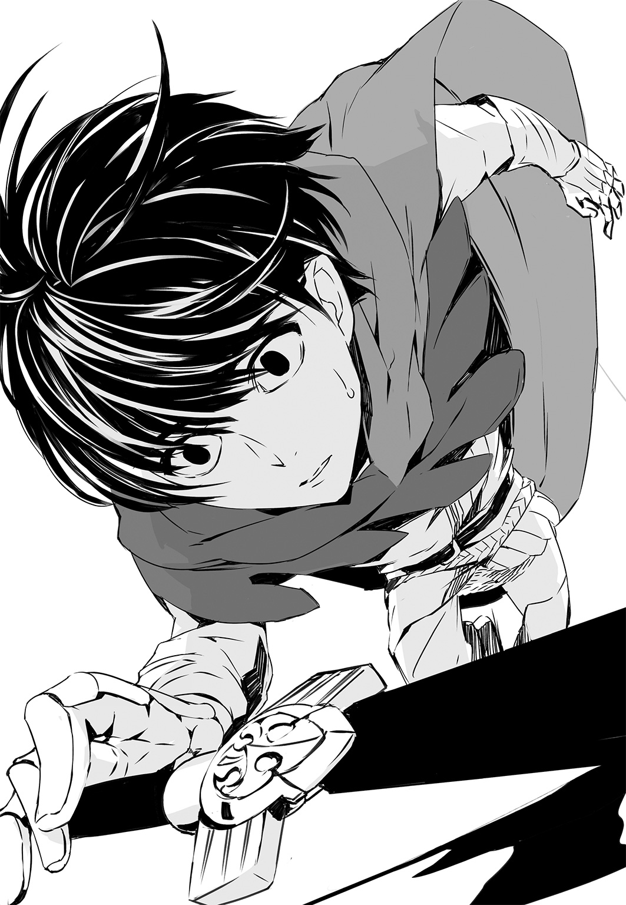
何、してたっけ？
躰に、力、入らない。
考えられない。
頭が空っぽになってゆく。
――だめだ。
だめだ。
良くない、と思う。
なぜかはわからない。でも、だめだ。
倒れている場合じゃない。
苦しいし。
息も、できないし。
顔を上げると、ぼんやりと、機士たちの脚が見えた。ずいぶん、近い。
「......やばっ......」
「ハイジ・バラン......！」
間一髪だった。
薔薇のしずくを一滴垂らしたきらめく髪を振り乱して、彼女が機士たちに躍りかかり、蹴っ飛ばしてくれた。
「ひとりで、どんどん突っこまないで......！」
姫はまた別の機士を殴り飛ばし、さらに別の機士に回し蹴りをぶちかました。
「――あなたは、ひとりじゃない......！」
それを、姫に言われるなんて。
ハイジは必死に起き上がろうとしながら、歯ぎしりをした。
――だめだなあ！
ハイジ・バランは、ほんっっっっっっっっっっっっっっとうに、だめな未熟者だ......！
「中尉......！」
ルルチナが飛んできて、助け起こしてくれた。ハイジは自力で立とうとしたが、無理だった。ルルチナが肩を貸してくれた。
「うちょー......！」
ギチコが汗みずくになりながらも機士を操って、操手を襲わせている。
でも、機士たちは退いていた。てんでんばらばらに逃げている、という感じではない。撤退してるのだ。
機士を追いかけようとしていた姫が足を止めて、振り返った。
つられてハイジも後ろを見た。ものすごい数の機士が重なり合って倒れている。その大部分は死骸ではない。彼らは生きているが、操手がいないので、身じろぎもしないのだ。死体が少ないせいか、戦場特有の悪臭もあまり感じない。
死すことなく伏している機士たちを跳び越えたり避けたりしながら、ニカ大尉らが駆けてくる。ボル軍曹やウォルフ兵長、ルメ兵長は、さかんに手を振っていた。ハイジは手を振り返そうとしたが、どうしても腕が持ち上がらなかった。
「力ってのはな。無限じゃねえんだよ。自惚れるんじゃねえ」
ルルチナがぼそっと言った。
ハイジは気が遠くなりそうで、
「......心します」
そう返すのがやっとだった。
×
単純な勝敗以上の成果があった、と言ってもいいだろう。
姫、ハイジ、ルルチナ、ギチコのたった四人で、もちろん完全に魔性頼みとはいえ、一個侵攻団二万の機士に対抗しうることが証明できたのだ。
一方で、限界も露呈した。
魔性が発動すれば――あるいは、発動させれば、そのぶんだけ消耗を強いられる。それは誰でも一緒だ。
今回、殺害した操手は、およそ百人。
停止した機士の数からして、操手一人につき、約四十人の機士を操縦士していたものと考えられる。
つまり、サクラ隊は四千人ほどの機士を行動不能に陥らせて、一万六千人ほどの機士と操手を撤退に追いこんだ。
実際の戦闘に参加した姫以下四人は、まさしく一騎当千の働きをしたことになる。しかし、あくまで敵が被った損害は、機士四千でしかない。
しかも、その時点でハイジは力尽き――それから四時間以上経過した今も、起き上がることすらできずにいる。
「......クソ」
ちなみに、ハイジのように精も根も尽き果てることはなかったものの、やはり疲労困憊していた姫、ルルチナ、ギチコも、ハイジと並んで寝入っている。
三月でも、エルダ平原の草っ原でこうやって太陽の下、横になっていると、けっこう暖かくて、躰も怠いし、眠気に抗うのはなかなか難しい。
でも、ハイジは一睡もしていなかった。眠れるものではない。悔しくて、悔しくて、悔しくてしかたなくて。
――それに、というか。
それより何より、というか。
すぐ隣に、姫が......！
姫が！
すーすー寝息を立てていらっしゃいますよ！ すー、すー、ですよ！ 聞こえるんですよ、その音が！ すー、すー、と！ 聞こえつづけているわけですよ！
『ごめんなさい。ちょっと、寝る』
そう言って、ぱたんとハイジの右隣に寝転がり、自分の腕を枕にして躰を横にしたと思ったら、即でしたよ！
目をつぶって、すぐさま、ですよ！
お眠りになってしまったわけですよ！
姫！
ああ、姫！
無理です、姫！
どんなに躰がつらくても、きつくても、姫が隣にいるのに、眠れっこないですよ！
ちらちら、ちらちら、見てしまうわけですよ！ 何回見たって、見飽きることはないわけですよ！ 見れば見るほど、さらに見たくなるわけですよ！ 何度見なおしたって、いいものはいいわけで！ すばらしさが増すことはあっても、減衰するなんてことは絶対にありえないわけで！ 何だったら、眠るより、姫の寝顔を拝見していたほうが、元気は出るわけで！ やる気だけはとにかく回復するわけで！
姫、すごい！ めちゃくちゃすごすぎです！
だけど、何度も何度も姫をチラ見して、鼻息も荒く気力のレベルを上げまくりつづけているわけにもいかない。だいたい、そんなことをしていたら、いろいろなものが上がりすぎて、おかしくなってしまう。
だからハイジは寝たふりをして、どうしても我慢できなくなったら薄目を開け、一瞬だけ姫のご尊顔を見させていただくことを自分自身に許すことにした。
それくらいはいい――よね......？
あとは、考えることにした。反省したりもした。
たまに意識が飛びそうになった。眠ってもいいような気もするのだが、やっぱり眠ることまではできなかった。
ニカ大尉とボル軍曹ら、何人かはそばにいる。
あとは、大尉の命令を受けて偵察に出たりしている。
ふと思った。
――祖国を救うことはできるのだろうか......？
救う、なんて、おこがましい考え方かもしれない。なんとかして、我がデスティニア公国を帝国から守ることはできないか。
帝国はおぞましい敵だ。戦うごとに、そう実感する。たぶん、支配下に置いた国の民を無理やり兵隊に仕立て、犠牲を顧みずに攻めてくるような相手だったら、そんなふうには思わなかっただろう。それは非道で腹立たしいが、おぞましい、というのとは違う。
機士。
すべてはあの人ならぬ兵隊のせいだ。
これはハイジの考えだから、あるいは的外れかもしれないが――もし機士がいなければ、いくら帝国軍の指揮官といえども、冷酷非情な軍事行動を次から次へと実行に移すことはできないのではないか？
帝国は、どうやってあの恐るべき生物兵器を手に入れたのか。それは不明だが、あんなものを持ってしまったら、べつに帝国でなくても同じことをするのではないか？
たとえば、デスティニア公国が機士を生みだすことができていたら、どうだろう？
公国が実力を蓄えて、またときに発揮し、宗主国であるカバラ大王国のくびきから脱しようとしてきた歴史を、ハイジは学んだ。
カバラ大王国と公国は、言ってみれば親子の関係だ。旧態依然とした――いや、それどころか頽廃して、権威ばかり振りかざそうとする親に対して、子はずっと昔から反感を抱いていた。最初はもちろん、親の庇護があってこその子だったかもしれないが、過去の話だ。しかも、尊敬できるような親ではなく、子の頭を押さえつける力もすでに持っていない。なぜいつまでも親に従わなければならないのか？ 親などいらないのではないか？
公国が実際に具体的な行動を起こさなかった理由は、結局のところ、一つだった。
カバラ大王国一国であれば、制圧可能だ。しかし、デスティニア公国が動けば、他の公国が黙ってはいない。他の公国まで相手にするとなると、必ずしも勝算はない。
そもそも、ここまで公国が軍を増大させたのは、帝国の脅威に対抗するためだ。公国は周辺国と比べても肥沃な土地に恵まれ、豊かだが、増えつづける軍事費によって財政は逼迫している。現状の公国軍は、決して適正な規模ではない。帝国軍の圧力を度外視した上で、その多すぎる兵力をもってしても、デスティニア公国軍単独でのカバラ大王国侵攻は、かなり危険な賭であると見なされていた。
ようするに、兵力が足りない。
機士がいれば？
たぶん、デスティニア公国はいずれかのタイミングで、カバラ大王国の併合に動くだろう。これを快く思わないはずのエーデルラント公国、ロンダール公国も、敵に回るのならば容赦はすまい。また、敵は二公国だけではない。アンヌー連峰とフェレン岩山地の合間にあるダル陸峡など、他国との係争地はいくつもある。機士を送りこめば勝てる戦争なら、やらない手はない。係争地を勝ちとるだけで、公国は満足できるだろうか？ どうせなら、他国の領土を丸ごといただいてしまえばいいのではないか？ 公国の民も、きっとそう望むだろう。何しろ、戦うのは機士だ。むろん、機士だけで戦争はできない。大勢の軍人が戦に赴かねばならないが、そうはいっても主戦力はあくまで機士だ。死ぬのはたいてい機士なのだ。領土をえれば、国はいっそう富む。敗戦国に王統の維持や一定の自治を認めて、賠償金を払わせてもいい。いずれにしても、公国は栄える。民は大喜びだろう。誰も戦争に反対などしない。逆に、次の戦争を求めるだろう。
帝国が悪なのではない。
機士こそが、際限なく戦いを生む元凶なのではないか？
――機士を一掃してしまえる力が、自分にあれば。
「あるわけない、けど......」
ハイジはそろそろ目を開けることにした。
がんばった。
だいぶ耐えた。
もういいはずだ。ちょっとだけ。ほんのちょっとなら、誰も責めない。許されるはずだ。
顔を右のほうに向けた。
ぱっ――と、目を開けた。
姫もこっちを見ていた。
「うっ......」
「何が、あるわけないの？」
「あっ――そっ......」
それは、ですね。
それはそれは。
それそれそれそれは。
それはそれそれそれそれはそれそれそれそれはそれはそれそれそれはそれはそれそれそれ。
それ？ それは？ それ？ それ？ それは？ それはそれ？ それでいてそれ？ それはそれでそれは？ それ？ それでもそれはそれでいてそれ？ それはそれでそれはそれがそれでそれが？ それはそれ？ これはこれ？ どれ？ 何がどれでそれがこれで何が？ それはそれそれそれそれそれはそれ？ それそれそれそれそれそれそれそれそれそれそれそれは？
「――でっ......だ、だからそれはっ......ええとっ、あるわけないっていうのは、ですね――」
「うん」
姫は少しとろんとした目でハイジをじっと見つめている。それはそれはそれはあれですよいけませんよだめですほんと姫それはあれです、ひどいです、いえ、ひどくはぜんぜんないんですけど、そんな目で見られたらもうこっちはあれじゃないですか、どうしようもないっていうかどうにもならないっていうかお手上げっていうかっ......！
「ぼ、僕は姫をなんていうかようは、いやようはじゃないな、ようもクソも、いや、クソなんて言っちゃいけないな、ごめんなさいなんかこう口汚くなっちゃったみたいで、誰のせいでもないんですけど、なんとなくそういう感じになっちゃって――」
「うん。で？」
「ぼぼぼぼ僕はですね、姫にあの、首ったけなんですね!? あれっ......!?」
何、言ってるの、自分......？
姫は、寝惚けているのだろうか？ お寝坊さんなのか？ 違うか？ ぼうっとしているのだろうか？ いまいちよくわかっていないのか、やっぱり、
「うん」
とうなずいた。
「首っ......」
ハイジは自身の躰から魂が抜ける音を聞いた。いや、そんな音はこの世にありはしない。と思う。何か、そういう感覚に襲われたということだ。魂が抜けようが何しようが、今さら訂正はできないようなあ、と考えるくらいの判断力はかろうじて残っていた。姫に対して、言い間違いでした、とか、そんなことは言えないよなあ。まあ、言い間違いじゃないしなあ。
本音だしなあ。
正真正銘、正直な気持ちだしなあ。
「......首っ......たけ、なんですよね、僕。あの、たぶん、ですね、初めてお会いしたときからきっと、そうだった......んではないかと、思うんですけど。僕はあの、もちろんその、身分が身分ですし、僕は庶民で、ド庶民で、姫は公女であらせられるわけですから、おかしな話なんです、た、大変おかしな話だとは思いますし、わかってるんですけど、当然、僕は最初、侍官として姫にお仕えしたわけで、その流れというのもありますし、いや、流れっていう言い方も変かな、と、ともかく、忠誠心というか、というかというか、そう、忠誠心はあるんです、それはもう、誰にも負けないと思ってます、で、でも、それだけじゃないというか、それだけではとても説明できないというか、まるで足りないというか、そ、そういう気持ちがあって、ですね......あって、その......あるんです、実際のところ。どう考えても、あるんです......」
「うん」
「お、お慕いっ......申し上げて、おります」
「うん」
「あ、あ、あああ、ああああああああああああい、あいああいああいあいあいあいあいあいあいあいあいあいあいあいあいああいああいあいあいあいあいあああああああああああああああああああああああああああああああい、愛して、あいあい愛して、いたり......します」
「うん」
「あの、これ......」
「うん」
「夢......ですかね？ 僕、夢、見てるんじゃないですかね......？ だって、ほら、魔性の使いすぎで、ぶっ倒れたりとかして、夢......見てるんじゃないかな、とか......」
「そう思う？」
「いやまあ、そうであっても、おかしくはないなあ、と......」
「じゃ、わたしも夢を見てるの？」
「......え、ええと、こ、これが夢だとしますと、僕の夢の中にいる姫が、何をおっしゃったところで、それは僕の夢なわけで――」
「わたしは、起きてるつもりだけど」
「寝ては......おられないと」
「うん」
「......実は、僕も、そうなんですけど」
「だったら、夢じゃないんじゃない？」
「ですかあ」
ハイジは目をつぶって、躰を極限まで丸め、頭を抱えた。
「......なんっっっっっっっっっっっっっ――ってことを、僕は......なんっっっっっってことを、言っちゃったんだろうなあ......！ 僕って、どうしてこう......馬鹿なのかなあ！ なんでこんなことに......言うつもりなんて、これっぽっちもなかったんだけどなあ！ ずっと、死ぬまで黙ってるつもりだったのになあ！ こんな、どうでもいい僕の気持ちなんかぜんぶ腹の底に押しこめて、最後まで姫にお仕えさせたいただくつもりだったのになあ......！」
「そうなの？」
「......はい」
ハイジはおそるおそる、上目遣いで姫を見た。
姫はやっぱり、さっきと同じ、まだ少しとろんとした目でハイジを凝視していた。
「......そう、なんです。ご迷惑になると、いけませんし......」
「迷惑になるの？」
「......いや、わかりませんけど、僕なんかに、そういうふうに......お、思われてるなんて、き、き、気持ちのいいものじゃないでしょうし、黙っていたほうがいいかと......」
「気持ち悪くは、ない」
「あっ！ そっ!? そうっ、なんっ、ですか......っ!?」
「べつに、気持ち悪くはない」
姫は、ふぅ......と、息を吐きながら、一度、ゆっくりと、目をつぶった。そのまま眠ってしまうのではないか。
それどころか、二度と目を開いてくれないのではないか。
馬鹿げたことを考えている。ハイジもそれはわかっていたが、なぜかそう思えてしょうがなかった。もしも――もし、そうなったら、どうしよう。恐ろしくてたまらない。
だから、姫が、うっすらとではあるが目を開けてくれて、心の底からほっとした。ありがとうございます、と感謝さえした。自分が誰に、何に対して感謝しているのかは不明だが、とにかくありがたかった。
姫はハイジを見てはいなかった。地面に目を向けていた。それでもよかった。何でもいい。どうだっていいのだ。そんなことは問題じゃない。
「よく、わからないけど」
姫は、ぽつり、ぽつりと、声を、言葉を、唇の合間からこぼすように言った。
「いやでは、ない。べつに。迷惑とか、思わない。ただ、わたし、何もできない。何もしてあげられないから。中尉。あなただけじゃない。誰にでも、同じだけど。たとえば、わたしがあなたにふれることも、できない。あなたがわたしにふれることも、できない」
「しっ......知ってます、けど。それは、存じあげて......ます」
「それが、どういうことか。わたしには、正直、たぶん、よくわからない。ずっと、こうだし。死ぬまできっと、このままだし」
「......しっ――」
ハイジは唇を嚙んだ。言わないで欲しい。どうか。お願いだから、死ぬまで、なんて。無感情に、あたりまえのように、どうでもいいことのように、口にしないでもらいたい。
何もできないのは自分のほうだと、ハイジは強く思わずにいられなかった。
なんて無力なのか。
「中尉」
「......はっ、はいっ！」
でも、そんな何の役にも立たないハイジに、姫は呼びかけてくれる。無視しないで、存在を認識してくれているだけで、ハイジには充分すぎる。
もらってばかりだ。ハイジは姫から与えられすぎている。何か、少しでもいい、お返しをしたい。できることなら。
「わたしが、死んだら」
姫はふたたび、ハイジと目を合わせた。ハイジは息が止まりそうになった。
「――わたしが死んだら、一度だけでいいから」
「はい」
自分で返事をしておいて、自分の声だとはどうしても思えなかった。別人が答えたのではないか。
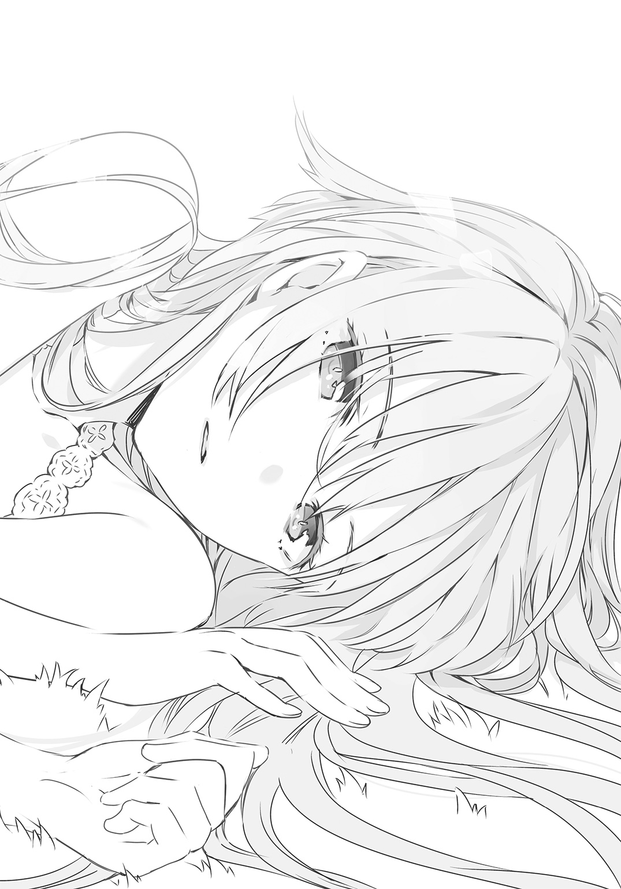
姫は何か言おうとして、言いよどみ、前歯を、かちっ、と嚙み合わせた。それから、小さな、細い声を出した。
「中尉。わたしを、抱きしめて」
「はい」
「わたしは、何もしてあげられないけど、そばにいて」
「います」
「ずっと」
「はい」
「ひとりに、しないで」
「しません」
ハイジは周章狼狽している。パニックに陥ってさえいる。それなのに、もう一人、別のハイジがいて、やけに落ちつきはらった声を出している。微笑みすら浮かべている。
姫が死ぬなんて、考えるだけで身も心も砕け散ってしまいそうだ。そんなことは起こらない。信じたくない。信じない。姫を死なせたりするものか。それくらいなら、ハイジが代わりに死ぬ。そうだ。だから、姫が死ぬなんて、ありえない。少なくとも、ハイジにとっては。なぜなら、必ずハイジが先に死ぬからだ。姫は、死なない。
残酷ですよ、姫。
置いていかないでください。いやです。先に逝ったりしないでください。
ああ、でも！
それが姫の願いならば！
生ある限り、誰とも、何ともふれあうことができない姫が、それを望むのなら！
――叶えないわけにはいかない。
万難を排して、成し遂げるしかない。
「心配なさらないでください、姫。僕は最後まで、お供します」
「......ん」
姫はわずかにうなずいてから、目を閉じた。
「......なんか、わたし――変なこと、言った」
「そう、ですか......？」
「ような気がする。中尉のせい」
「も、申し訳ないです......」
「ふぅーっ」
と、いきなりハイジの左隣で寝ていたルルチナが身を起こして、少し寝癖のついている髪を整えた。
「終わりましたか？」
「......え？ お、終わった......と、言いますと？」
「いえ。深い意味はありません」
「も、も、もしかして――聞いて、いらっしゃっ......た、とか？」
「何をですか？」
「いや、あの、何、というか、まあ、その......」
ハイジは慌てふためいて姫のほうを見た。
――って、寝てるし！
寝息まで立てちゃってるし！
いや、昨日の今日、じゃない、さっきの今なので、寝ているわけがない。
姫は寝たふりをしている！
ハイジは白目を剝きそうになった。
「......い、いろいろと......何と言いますか、いえ、何でもないっていえば、何でもないんですけどもね......？ いや、聞いていらっしゃらなければ、それはそれで......」
「ルルチナは、聞いていないとは一言も言っていませんが？」
「えぇぇぇぇぇぇぇぇぇ......」
「私は聞いていたが」
と、この声は――、
ハイジは跳び起きた。
「ニカ大尉......!?」
見れば、横になっていたハイジのちょうど頭上方向、少し離れた場所に、なんとなんと、ニカ大尉がしゃがんでいるではありませんか......!?
ついでに、ボル軍曹と、ルメ兵長と、オーラン伍長も、大尉の後ろで身を潜めるようにして、やっぱりしゃがんでいるじゃないですか......。
なんかみんな、すっごく気まずそうじゃないですか......。
しかし、一番気まずいのは、ハイジだ。
あとはまあ、姫も？ だろうか......？
「とりあえず――」
大尉は量の多い癖毛を引っかきまわして、一つため息をついた。
「動けるようになったら、移動だ。どうも我々が退かせた侵攻団以外も、進軍を開始したらしい。行き先は公都か、ファーガン要塞城市だろう。来るべきときが来た。決戦だ」
×
主人には、酷だろうと思う。
何せ、華奢だ。機骸は見た目ほど重くはない。全身に重量が分散するので、意外と軽く感じる。しかし、やはり窮屈だし、この地は非常に温暖なので、三月でも暑苦しい。
そんな物を身にまとって、しかも、歩行鳥にも馬にも乗らず、歩かなければならないのだ。軽装の丙機士を偽装しているとはいっても、杓剣に弓、矢筒を携帯してもいる。総じて男より体力的に劣る女性で、厳しい訓練を受けているわけでもない主人にとって、この行軍はとてつもない重労働のはずだ。
代われるものなら、不人が代わりたい。
むろん、そんなことは思っても言わない。態度にも出してはならない。
主人が望んでいないからだ。
なぜなら、指揮官以下、軍士が機士に完全偽装する策は、主人が言いだした。自分自身が決めたことであれば、主人は何があっても貫徹する。不人の主人はそういう人物だ。
だから、主人は弱音を吐くことも、もちろん不平を漏らすこともなく、機士の隊列に混じって、機士たちに遅れないように、黙々と歩く。ひたすら歩く。うつむきもしない。まっすぐ前を向いて、ひたすら歩きつづける。機士とはそういうものだからだ。ならば、主人もそうしなければならない。
「遠くにいる者と――」
不意に、主人が言った。
「話はできなくてもいいけど、意思の疎通ができる方法はないかな。三百二十五侵攻団以下、五個侵攻団が、もうファーガン要塞城市を西から攻めているはずだが、しかとは言えない。確かめる方法もないしな」
「......真人の力には、そういったものもあるかもしれません」
「ああ。そうか。――うん。ありうるな。敵にいたら、少し面倒だ」
「......もし、そのような有害者がいて、敵がその力を有効活用していたら、こうはなっていないのではありませんか」
「それもそうだ。でも、考慮に入れておく必要はある。何か、それと疑われるような動きを相手が見せないとも限らない」
「......はい」
「ここまで、まあ順当に進んではいるが、何もかも想定通りだったわけでもない。目標が果たされるまでは、必要に応じて計画を修正しつづける。鉄則というものがあるとしたら、それが唯一と言ってもいい。――いや、でも......」
「......何です」
「さっきの話だ。遠くにいる者と、意思の疎通を図る方法はないものか。真人の力以外で、何かないかな。たとえば、こう――道具か何か、使って」
「......どんな道具ですか」
「そんなこと、私にわかるわけがないんだろう。私は技術者でも、発明家でもないんだから。だけど、どんなことでも、それを可能にする何らかの仕組みを思いついて、道具を作りだす者がいるかもしれない」
「......できることと、できないことがあると思いますが」
「違うな。咎埜。それは違うぞ。今、できることと、できないことはたしかにある。今、できないことは未来永劫できないと、誰が言える？ 機士だって、昔はなかった。銃は東大陸で実用化されてから百年も経っていない。戦場で用いられるようになったのは最近だ」
「......遠くにいる者に意思を伝達する道具も、いつか作られると？」
「私はそう思う。まあ――」
主人は肩をすくめた。機士のふりをしているといっても、隣にいる不人と小声で話して、肩をすくめるくらいは問題ないだろう。
「それまで私が生きているかどうかは、わからないけど」
「......先のことすぎて、おれにはどうも」
「想像してみろ。百年後、二百年後、世界はどうなっているだろう？ 変わらず存在している物はあるだろうか？ そのときまだ、我々人間は戦争をしているかな？」
「......人間は、戦いつづけてきたと学びました」
「うん。そうだな。これまでは、そうだ」
「......百年後も、何かにつけ戦っているんじゃないですか」
「かもしれない」
「......違うかもしれない？」
「私は正直、百年や二百年では、戦争はなくならないと思っている。ただ、三百年、四百年したらどうかな？」
「......四百年、ですか」
「遠くの者に意思を伝達する――会話ができるような道具......装置を、誰かが作ったとする。百里の向こうまで、何か頑丈な紐のような物を引きずっていけば、その紐を通して合図を送ることはできそうだし、合図を工夫して信号にすれば、複雑なやりとりだって可能だ」
「......発明家のようなことをおっしゃる」
「適当に言うだけなら、いくらでも言えるさ。放言の類いだ。ともかく、そうやって距離を無視して情報を送り、受けとることができるようになったら、戦争はとても難しくなる」
「......お互いに、筒抜けになるわけですか」
「これはやりづらいぞ。結局、戦争は勝てると思って始めるんだからな」
「......まあ、そうです」
「じゃあ、勝てると判断する根拠は？ 敵を知り、己を知り、地の利をえて、天の時に逆らわず、人を生かす。この五つが要諦だ。己を知るには、驕ることなく目を皿にして見、耳をそばだてて聞けばいい。天の時は、ようするに気候だ。炎天下や、猛吹雪の中、兵を進めるのは愚策だということくらい、馬鹿でもわかる。常識的な判断をすればいい。世の中には存外、間抜けが多いから、そんなことすらできない者もそれなりにいるわけだけど」
「......敵を知るのと、地の利をえるのには、亞璃簾様が言う装置が役立ちそうです」
「うん。そして、その装置はいずれ、敵味方双方が持つことになる。遅かれ早かれ、そうなるはずだ」
「......それは、機士も――ですか？」
「私はそう予想している。今のところは、機士の生産、運用法を秘匿できているが、いつかはばれるだろう。暴露されてしまえば、あとは広まる一方だ。我が帝国にとっては、そうなる前に勝負をつけてしまいたいところだな」
「......条件は、五分になる」
「長い目で見れば、そうなっていくはずだ。誰もが機士を持ち、相手の戦力を丸裸にして、予想される戦場の地形を前もって知り尽くす。お互いに。繰り返すが、勝てると思うから、我々は戦争をする。自分のほうが優位に立っていると思うからだ。しかし、条件が五分に近づいていけばいくだけ、なかなかそう思えなくなる」
「......戦争が起こりづらくなる」
「全面的な戦争は愚行だと見なされるようになるだろうな。勝てるかどうかわからないんだから。そんなのは博奕と変わらない。偶発的、限定的、小規模な戦闘は起こりうる。でも、深みにはまる前に手を引くことを双方が望む。おそらく、どちらが先に仕掛けたとか、非礼だったとか、非難しあいながら落としどころを探るだろう。そんなことをしているうちに戦争はどんどん陳腐化して、戦いによらない方法で利害を調整するようになる」
「......悪くはない」
「おもしろくはないけどな」
「......亞璃簾様は、戦がお好きですか」
「楽しんでいるように見えるだろう？ まあ、嫌いじゃない。他にもっとおもしろいことがあるのなら、戦争にこだわりはしないけど」
「......戦争では、人が死にます」
「人の生き死になんて、たいした問題じゃない。放っておいたって、生き物は生まれてきて、死んでいくじゃないか」
「......我が事でなければ、そうかもしれませんが」
「自分自身がそこまで特別か？ 私にとって、私が死ぬことによる損失は一つだけだ。私が死んだら、私は楽しめない。まあ、楽しいも何もわからなくなるだろうから、それもどうだっていいことではある。死ねばただちに解決する問題だ。噓だと思うなら――」
主人はからかうような口調で言う。
「試しに一度、死んでみるがいい。自分なんて、特別でも何でもないことがわかる。いや、わかることもできないんだけどな。その程度のものが生きようと死のうと、騒ぎ立てるほどのことじゃない」
――この人は。
まったく、質が悪い、と不人は奥歯を嚙んだ。
死んでみろ、と言うのならば、いっそ死んでみせようか。それはくだらない考えなのだろう。主人の言うとおり、人の命など、たとえそれが誰であろうと、特別でも何でもない、その程度のものでしかないのかもしれない。
そうではない、と信じたいだけなのかもしれない。
少なくとも、主人の命だけは違う、と不人は思う。
主人に言わせれば、その考えはきっと不合理なのだろう。
「どうした、咎埜？」
「......いいえ。とくに、何も」
「黙りこくっていたじゃないか」
「......何でもありません」
「噓をつくんだな」
「......本当です」
「気にくわない。頭にくる」
「......ただ」
「ん？ ただ、何だ？」
「......おれはともかく、あなたに死なれるわけにはいかない。そう思っていただけです」
「立役者だからな」
「......ええ」
「舞台からいきなり主役が消えたら、芝居が締まらない」
「......観客は腹を立てるでしょう」
「私も、勝つのは好きだ」
主人は今、笑っているはずだ。機骸せいで、その顔が見えない。それがたまらなく惜しい。
「......百年後」
「ああ」
「......その目で、ごらんになりたいですか。百年後、二百年後の世界を」
「可能ならな。でも、無理だ。そのころ私は確実に死んでいる」
そう。
百年、二百年経った世界がどのように変貌しているかなど、不人にはわかるはずもないが、これだけは間違いない。
百年後の世界に、主人はいないのだ。
ならば、不人にとっては何の意味もない。
「生きているうちに、せいぜい楽しむさ」
主人の瞳が銀色のきらきらと煌めく様を、心底見たかった。できることなら、機骸を引っ剝がして、真正面からのぞきこみたい。ずっと眺めていたい。
叶うことなら、永遠に。
×
公都デスティニアレスでは三月初旬から予備役の招集が始まっていた。
志願兵として軍務に就いていた経験のある三十代、四十代、五十代の戦傷者や病者をのぞく男子は、都内軍営に順次出頭して武装し、公都防衛隊の指揮下に入った。公都防衛隊はもとより予備役を組みこんだ防衛を想定し、各種計画に基づいて訓練も行われていたので、支障はなく、遅滞もなかった。三月中旬には予備役に加えて、公立学校の生徒をふくめた二十代、十代の健康な男子の動員も検討されはじめた。
ファーガン要塞城市への攻撃と、ベドゥノー平野に展開していた七個侵攻団の移動開始は、その矢先の三月十六日に起こった。
これを受けて、デスティニア公国軍総帥ドリアン公は、ファーガン要塞城市の三一、六四旅団をベドゥノー平野に解き放って遊撃を行わせる命令を発した。ファーガン要塞城市は西から攻められているが、この防御はフレデリク・プロウ中将の第五公軍に一任する。ベドゥノー平野の帝国軍七個侵攻団は、北東に進んで公都を衝こうとするだろう。これを、公都の兵力、とくに突進力にすぐれた第八公軍と、ファーガン要塞城市の第一公軍、第六公軍で挟撃する。さらに三一、六四旅団が自由自在に攻め立てて大打撃を与え、壊滅させるというのが、公国軍の目論見だった。
「――機士十四万、か」
ピエール・アルトレッド中将は公都南西門上にある第五司令部の司令室で椅子に腰かけ、指揮盤を眺めていた。２×３メトルもある四角い指揮盤の上にはベドゥノー平野主要部が図示され、その各所に敵味方の駒が配置されている。
「ぐふ、ごふっ、げふっ......」
アルトレッドは激しく咳をした。やがて治まったものの、まっすぐ座っていられなくなり、右側の肘掛けに思いきり体重を預けた。
幕僚長のリオネル・カーター大佐や第一連隊連隊長ローラン・ダンドリュー大佐、その副官エミール・ブリュレ大尉、諜報大体のシリル・グレカ少佐ら、第八公軍の主立った士官が指揮盤を凝視して黙然と考えこんでいる。第八公軍は、決して堅物揃いとは言いがたい。ここまで静かな軍議はめずらしいどころか、かつてなかった。
――と、司令室に入ってきた士官がグレカ少佐に何か耳打ちした。グレカ少佐はうなずくと立ち上がり、指揮盤上の駒を素早く動かした。
ベドゥノー平野の帝国軍七個侵攻団は北上している。現在地はカストレー。公都からの距離は約100キロルだ。機士は一日あたり40キロル進めるともいうが、実際は人間と行動を共にするので、25キロルがせいぜいだろう。四日の距離に迫っているということだ。
「予想どおりですな」
カーター大佐が銀色の口髭をさわってから、公都に駒を増やした。三日後までに増員される見込みの新兵一万だ。これを加えれば、公都防衛隊の一万と、予備役の一万、第八公軍二万を合わせて、五万になる。
「いるかあ、それ？」
ダンドリュー大佐が無精髭がこびりついた顎をしゃくって新兵一万の駒を示した。
「どうせ使い物にならん。数合わせだろ」
「いないよりはましでしょう」
ブリュレ大尉がすかさず言った。
「頭数さえいれば、使いようはあります」
「おまえが言うと黒く聞こえるんだよなあ、エミール。使いよう、とかな。ちょっとあれだ、言葉を選んだほうがいいぞ。マジで。......何だ？ なんか心外そうだな」
「いいえ、とんでもありません、大佐」
「そう？ まあ、どっちにしても、ちぃっと足りんよな。基本的にはうちと第一、第六公軍に旅団二つ、この八万で、十四万を相手にしなきゃならんわけだから」
「やりようは、ある――」
アルトレッドはまた咳をしそうになったが、必死にこらえた。
「......シャル丘陵に敵を引き入れることだ」
指示されるまでもなく、カーター大佐が公都の西から南に広がっているシャル丘陵に第八公軍の駒を進めた。
草花と灌木に覆われたシャル丘陵は起伏があり、石壁や石柱が点在している。その景観は非常に美しいが、実際に足を踏み入れると、障害物が多く、とくに大規模な軍隊にとっては行動しやすい土地とは言えない。また、これはシャル丘陵に限らないが、公都周辺には数えきれないほどの移動式大連弩や防御陣地が設えられている。
人間のように柔軟な対応ができない機士に対してはとくに、こうした仕掛けは有効だろう。さらに重要な点として、人間の兵が相手ならば、連弩だろうと防御陣地だろうと奪われたら逆に利用されることを覚悟しなければならないが、機士の場合は違う。あらかじめ持たされている道具以外をうまく使ってみせるような器用さは、少なくとも知られている範囲では機士にはない。むろん、帝国軍にも人間の兵士はいるが、機士に比べれば圧倒的に少数だ。主力はあくまで機士で、人間の兵士は機士を運用するための人員と考えられるから、無視していい。
「シャル丘陵における模擬戦実験では、帝国軍機士二十万対我が公国軍十万を想定した例もあります」
カーター大佐が冷静そのものの低い声で言った。
「十二度の試行で、我が公国軍が八度勝利しました。勝算は充分あります」
「うちの連隊にとっては暴れづらくて、好きじゃねえんだよ。そこ」
ダンドリュー大佐が渋い顔をして指揮盤上のシャル丘陵を指さした。
「もちろん、やるとなったらやりますよ？ いや、そうじゃなくてね。小官としては、あれです。敵さんがまんまと乗ってくれるのを願うばかりと言いますかね」
「それは当然、注視しています」
グレカ少佐が肩をすくめた。
「まあ、カストレーを通っていますからね。やはりこちらに向かっているのではないかと」
「ふむ......」
カーター大佐は帝国軍七個侵攻団の駒のうちの一つを南に戻して、西寄りの経路を進ませてみせた。そちらを通っていれば、敵は今ごろチェスタンという場所あたりにいるはずだ。チェスタンからファーガン要塞城市までは70キロルといったところだろう。カーター大佐は駒を元の位置に移動させた。
「......ファーガン要塞城市とも、緊密な連絡をとることができている」
アルトレッドは目をつぶって頭を振った。目を開けたまま頭を振ると、ときに眩暈がして卒倒しそうになる。
「公都の庭まで入りこまれたのは痛恨事ではあるが......カバラを先にとられてしまえば、こうなってもしょうがない。我々には防ぎようがなかった。あとはもう、ここで食い止めるしかない。そのために、我々は全力を注いできたし......これからも、そうだろう。少なくとも、悪手は打っていないはずだ」
一つ息をついてから、アルトレッドはあえて椅子から立ち上がり、シャル丘陵の中心に手を置いた。
「ここで、勝つ。頼む、諸君。そのために、皆の力が必要だ」
全士官が一斉に起立して、公国軍式の敬礼をした。
アルトレッドも微笑み、敬礼を返した。
「......まあ、それに」
「何です？」
ダンドリュー大佐に訊かれて、アルトレッドは思わず目を開けたまま首を振ってしまった。くらっとして倒れそうになったが、とっさにカーター大佐が支えてくれた。
「司令。――少々、お休みになられては」
「そういうわけにもいくまい」
「いやいや、そんなこともありませんよ」
ダンドリュー大佐は片方の眉を吊り上げて、唇をゆがめた。
「司令は座っててくれりゃあいいんです。なんなら、寝ててくれたっていい。荒事は我々野蛮人どもにお任せあれ」
「私もなかなか、野蛮なのだがね。......躰がついてこないだけで」
アルトレッドは椅子に腰を下ろして、天井を仰いだ。彼女に関する情報は耳に入っている。つい、計算に入れたくなる己の業の深さには呆れるばかりだが、今回は彼女なしでなんとか凌げるだろう。咳をしながら、願わくは――と、アルトレッドは思った。極力、手勢を減らしたくない。この戦争を切り抜けても、先がある。死ぬか、帝国に平伏さない限り、戦いはつづくのだ。そして、死ぬつもりも、帝国に膝を屈するつもりも、彼個人としてはなかった。
×
いくら帝国軍侵攻団の足が速いといっても、大部隊だ。自ずと限界というものがある。
三月十九日の夕刻、サクラ隊は公都まで20キロル余りのレスリムと呼ばれる平らな田園で、侵攻団の最後尾を捉えようとしていた。
ここから北西にあと５キロルも進めば、シャル丘陵に入る。シャル丘陵のすばらしい眺めとは裏腹な防衛設備の充実具合については、ハイジもある程度知っていた。サクラ隊が打撃を与えたといっても、七個侵攻団の帝国軍にとってはかすり傷だ。十三万余の機士は言うまでもなく大軍だが、シャル丘陵で迎え撃つならば、公国軍としても戦いようがあるだろう。誤解を恐れずに言えば、いい勝負ができるはずだ。
その最終決戦では、一個侵攻団に抗しうるサクラ隊にも、何らかの役割を果たす余地があるのではないか。
ニカ大尉はオーラン伍長やボル軍曹らを文字どおり走らせて、懸命に帝国軍の動向を把握しようとしている。友軍に合流するか、それとも、このまま独立した行動をとるか。いずれにしても、ニカ大尉が導いてくれるだろう。ハイジは命じられるまま、剣を振るえばいい。
もちろん、姫の隣で。
あるいは、姫の前で。
どちらにしても、姫のそばで。
戦って、戦い抜いて、むろん、生き抜くのだ。
姫と共に。
ルルチナ、ギチコ、他の戦友たちも、死なせはしない。
そして、帝国軍を打ち破る。
帝国が悪なのかどうか。それはハイジにはわからないが、帝国は人に苛烈すぎる。手厳しすぎる。帝国の下で安穏な暮らしを送っている人々もおそらくいるのだろうが、人間扱いされない者が多すぎる。帝国は兵を減らさずに、つまり自ら血を流すことなく、あまりにも人を殺しすぎる。
すでに祖国が踏み荒らされ、大勢が命を奪われている。この上、ハイジも公立学校在学中に住んでいた公都デスティニアレスが蹂躙されるなど、許せるものではない。もし公都が陥ちれば、公国は全面的に降伏するかもしれないが、帝国に従うことをよしとしない公国民もいるだろう。ハイジの故郷トクタリ邑はどうか？ わからない。なんとも言えないが、わりあい血の気が多く、直情径行で、しかも義理堅いという土地柄だ。帝国に刃向かう邑人は意外と少なくないかもしれない。そうしたら、帝国は容赦なく邑を破壊するだろう。家族も、親類も、皆、殺されるだろう。
サクラ隊には、エルダ平原出身の者もいる。クワロー上等兵がそうだ。クワロー上等兵の故郷であるリンファール城市は、帝国軍に攻め落とされたらしい。両親や兄弟、祖父母の安否は不明だ。
帝国は災厄なのだ。
燎原の火だ。
炎が野原を焼いて迫り来れば、逃げるしかない。
だが、その野原には、しがみつくようにして生を営んでいる人々がいるのだ。そうした人々はなけなしの土地や財産を残して逃げるわけにはいかない。そんなことをしたら生きてはゆけないからだ。それでは死ぬのと変わらない。
彼らの代わりに、押し寄せる炎を誰かが消さなければならない。
ハイジたちサクラ隊が、それからもちろん、公都とファーガン要塞城市の公国軍が、それをやるのだ。
誰も口を開かない。ニカ大尉を先頭に、黙りこくって帝国軍を追尾する。
間もなく西の彼方に太陽が沈む。――遠くに、黒い筋が見えた。煙？
烽火だろうか？
「しまった」
とニカ大尉が呟いた。
「西だ。敵は西に転進している」
「えっ――」
ハイジは絶句した。姫が眉をひそめて、
「どういうこと？」
「公都じゃありません」
ニカ大尉はあちこちに首を巡らせた。方角と、黒々として見せる帝国軍機士たちの向かう先を確認しているようだ。
「――ファーガンだ。シャル丘陵で決戦するつもりなんか、連中にはなかった。狙いは最初からファーガンだったんだ」
「おぉうっ！」
ギチコはずれた眼鏡の向こうで目を瞠り、驚いているようだが、自分がなぜ驚いているのか理解しているようには見えない。
ルルチナが首をひねった。
「......なぜ？ 公都ではなく、わざわざファーガンを......？」
「遠回りにならない？ の......？」
姫も、ちょうどルルチナと同じように首を傾げた。――か。
かわいい......。
――と、感動している場合じゃない。
「そうか......！」
ハイジの頭の中にはおおまかな地図が思い描かれていた。
「カバラ大王国を制圧している、今――帝国軍は、ファーガン要塞城市さえ押さえてしまえば、ベドゥノー平野の公国軍をほぼ封じこめられる！ エルダ平原からの補給も受けられるし、焦らず、時間をかけて、万全の体制で公都を締め上げればいいんだ！」
「......てっきり公都を衝かれると思っていたから、我が公国軍はシャル丘陵で帝国軍を殲滅するべく動いていたはずだ」
ニカ大尉は右手の指を軽く嚙んだ。
「敵が初めからファーガンへ向かう経路をとっていたら、対応は変わっていた。たぶん、三一、六四旅団はすでにファーガンから出払っている。第一公軍、第六公軍も、来るべきシャル丘陵での決戦に備えているはずだ。むろん、公都の第八公軍や公都防衛隊も」
「裏をかかれる」
ハイジは踵で地面を押しつけるように蹴った。
「......我が公国軍にとっては、想定した形で戦いを進められない――それだけは確実です」
「どうなるの？」
姫の顔が、心なしか青ざめている。
「良くはなさそうだけど」
「わかりませんね」
ニカ大尉の表情はいつになく厳しい。
「これから帝国軍はファーガンに総攻撃をかける。どれだけ持ちこたえられるか。ファーガンが、旅団や第八公軍が駆けつけてくるまで粘ることができれば、勝ち目はある。ただ、相手は自信があるんでしょう。ファーガンを素早く陥落させる手立てがあるのかもしれない。ファーガンをとられたら――まあ、難しいことになる」
大尉にしては迂遠な言い回しだ。するに、ファーガン要塞城市を奪われたら、敗北は決定的だ、ということだろう。
「......何かある？」
姫は今にも泣きだしそうな上目遣いでニカ大尉を見据えた。
「わたしに、できることは。――何かないの？」
「なくもない」
大尉は敵軍を指さした。
「敵中突破。突撃して、引き裂くんです。あれだけの大軍だ。これは、公女殿下、あなたとハイジ・バラン中尉、ルルチナ・リリィローエン嬢、そしてギチコ嬢を擁する我々サクラ隊にしかできない」
姫はルルチナを、ギチコを見た。
オーラン伍長、ボル軍曹、ルメ兵長、イーブス兵長、トワン兵長は偵察に出ているが、ウォルフ兵長、クワロー上等兵、エスト上等兵、そしてファニス准書記官はこの場にいる。姫は彼らの顔も見回した。
そして、最後にハイジと目を合わせた。
ハイジと姫は、どちらからともなく、ほとんど同時にうなずいた。
「今回ばかりは――」
ニカ大尉は一つ息をついた。
「私たちも、公女殿下から離れるわけにはいかない。戦力にはならないが、まあ誰かが手綱を握らないともたないでしょう。多少、長丁場になりそうなので」
「お願い」
姫が即座に言うと、大尉はニヤッと笑った。
「ヤー」
なぜだろう。不思議だ。楽観はできない。間違いなく激しい戦いになる。たぶん死闘だ。たとえ力尽きるまで戦ったところで、祖国を救うという目標を成し遂げられる保証はない。先まで見越せば、希望なんて無きに等しい、と言ってもいいくらいだ。
それなのに、どうしてか重苦しさは微塵もない。
「今から敵に突っこんで、やっつける......！」
姫の声も、少し明るい。
「みんな、わたしについてきて......！」
駆けだした姫を、皆、口々に返事をしながら、足どりも軽く追いかける。
機士の隊列に食らいつく前に、オーラン伍長とボル軍曹、ルメ兵長が合流した。イーブス兵長とトワン兵長も遠くから駆けてくる。
ひたすら前だけを向いて進んでいる機士たちは、まったくサクラ隊に気づいていない。人ならぬ機士たちが気づくわけもない。
「〝無慈悲な玩具〟......！」
ギチコが青い瞳を輝かせて四十人ほどの機士を魔性の支配下に置き、急停止させた。
その約四十人のほぼ真ん中で、一人だけ止まらなかった機士がいる。――機士じゃない。
操手だ。
「一番乗りだ......！」
ルルチナが加速して、立ち止まっている機士たちの間を駆け抜けた。操手が振り返る。そのときにはもう、ルルチナは操手に肉薄していた。
「つぇあっ......！」
ルルチナが跳び蹴りをお見舞いすると、操手の首があさっての方向に曲がった。ほぼ即死だろう。
「――ふぬぅっ......」
ギチコが力を抜いた。途端に機士たちがばたばたと倒れる。
異変を察知して、何人かの機士が振り向いた。――彼らもまた、機士じゃない。操手だ。ハイジは瞬時に記憶した。あいつと、あいつと、それから、あいつ。あいつも。
「姫！ ハイジ・バラン、往きます......！」
ハイジは疾駆する。倒れた機士を跳び越え、ときには踏み台にして、操手を目指す。まずは一人。逆手に持った軍剣で、首を刎ねる。さらに、もう一人。
三人目。
四人目の首を斬り飛ばしたのとほとんど同時に、ギチコがまた別の機士たちを魔性で操り、焙りだされた操手をすかさずルルチナが片づける。
姫は眉を吊り上げてひたすら突っ走るだけで、攻撃には加わらない。
姫の後ろにはニカ大尉たちがいる。サクラ隊の言わば頭脳であり、耳目でもあるニカ大尉たちを、姫が守ってくれている。
それに、姫はサクラ隊の中心だ。
姫がど真ん中で進むべき方向を示してくれている。ハイジとルルチナ、ギチコはただそれに従って突き進めばいい。
「何も......！ 何の問題もない......！」
ハイジはむしろ、抑えた。ハイジの魔性は自動的に発動するし、とくに姫がそばにいるので、つい昂揚してしまい、目についた操手はぜんぶ殺したくなるが――だめだ。そんなことをする必要はない。抑えろ。
最低限でいい。
目的は、敵軍をずたずたにすることだ。
いや、一本の槍となって、敵軍を貫くだけでいい。そうすれば、敵軍は勝手に崩れてくれるだろう。
数じゃない。
とにかく操手をたくさんしとめればいい、というわけではないのだ。
前へ。
前へ。
前へ。
進行方向にいる、進むにあたって障害になる機士たち、その機士を操縦している操手だけを、手早く、効率的に、殺す。殺す、というより、除く。排除というより、取り除いてゆく。機士の大軍の中に穴を穿ち、その穴を細い道にするのだ。
「我こそは......！」
ニカ大尉にうながされたのだろう。姫が声も高らかに宣言した。
「デスティニア公国ドリアン公が四女、サクラスティアリス・デスティニアリス......！ わたしを妨げても、無駄......！ 死にたくなければ、どきなさい......！」
カバラの言葉を帝国人が解するのか、という問題はある。そんな心配ができるくらいだから、自分は冷静だとハイジは思った。
あいつは操手だ。あいつと、あいつ。あれも。遠くにいる操手は放っておけばいい。近くにいる操手なら、数呼吸のうちに迫って首を刎ねてしまえる。逆に言えば、数呼吸で首を斬り落とせる操手だけを狙えばいい。
こいつと。
それから、こいつ。
こいつも。
操手を殺すごとに、機士たちが行動不能に陥って倒れ、まだ操手に操られて行軍している機士たちを阻害する。
隊列が乱れる。
日は落ちているが、まだいくらか明るい。
戦場は静かだ。
×
ドリアン・デスティニアリスが二十頭立て装甲馬車シャペロ二号最上部展望台中央の指揮席から立ち上がると、沿道に詰めかけた群衆が一斉に歓声を轟かせた。
「万歳......！ デスティニア公国万歳......！」
「ドリアン公万歳......！」
「デスティニア公国に栄えあれ......！」
「万歳......！」
「ドリアン様......！」
「公国万歳......！」
最初は思い思いの言葉を発していた民どもだが、やがて万歳の連呼に集約され、声、声、声がうねりとなって公都の上空まで震わせる。
明朝、行う予定だった士気高揚必勝祈念のパレードを、無理やり早めさせたわりには上々の人出だった。今、万歳を唱えていない公都市民は不忠、不義の、ろくでなしだ。躰が不自由で家から出られない老人は、窓際で万歳を叫ぶべきだ。赤子はせめて声高く泣くべきだ。
パレードの警備には、公都防衛隊の一部と、予備役の半数、それから新兵をもってあたらせている。現役から離れていた予備役や、何も知らない子供同然の新兵たちは、この熱狂を目の当たりにして自分たちの責務を思い知り、必ずそれを果たさねばならないという思いを新たにして、これからいざ戦場に出れば死すら厭うまい。彼らは決してただの一兵卒ではなく、我が公国を守るれっきとした主役なのだと錯覚していることだろう。
ドリアンは両腕を持ち上げ、警備についている兵たちを両手の指で厳かに示し、民どもに教えてやる。
彼らはこれより死ぬのだと。
その死は尊いのだと。
まさしく名誉の戦死なのだと。
悲しむことなかれ。
嘆く必要はない。
誇れ。
喜ぶのだ。
ドリアンはそれを声には出さない。どうせこの大歓声の中、何を言ったところでかき消されてしまう。だが、ただ仕種だけで自らの意思を伝え、愚かなる民どもにさえ意図を汲ませてしまう統治者としての、もしくは煽動者としての才能を、公家の血がもたらす魔性とは別に、ドリアンは生まれ持っていた。
そうだ、私はドリアンだ、と彼は強く思う。――生まれてこの方、彼はドリアン以外の何者でもない。ザクロス。あの忌々しい、呪わしき弟。彼奴にはこの才がなかった。頭脳の明敏さや、果断さ、安定した精神、清濁併せのむ度量、年齢に関わりないある種の老獪さ、すべてにおいて弟は兄より劣っていたが、致命的なのは人の上に立つ者が絶対に持っていなければならない、超自然的、超人的な、民を魅了して支持者に変えてしまう資質を、弟は欠片も持ちあわせていなかった。
それなのに、なぜだ。なぜわからぬのだ、ライチアリス。
彼とザクロスは似ても似つかない。彼こそ愛したドリアンだと、どうして彼女はわかろうとしないのか。
たとえ何があろうとも、彼を真に愛しているのなら、わかるはずではないか？ 彼がドリアンだと、理解しうるはずではないか？ 可解な点があろうと、彼がドリアンだという答えに辿りつくはずではないか？
やはり彼女は彼を愛してなどいないのか？ 彼女は裏切り者なのか？
ああ......おまえは私を愛してなどいない、そう考えざるをえず考えれば考えるほど、彼は彼女の何もかもが憎くてたまらなくなる。愛しているからこそ、憎くてしょうがない。彼女に一番よく似ているサクラスティアリスの顔を見るたびに、粉々に砕いてしまいたくなる。彼が彼女に産ませた彼の子供たち、誰も彼も、愛しくて、たまらなく憎い。本音を言えば、食ってしまいたいほどだ。食ってしまえば、きっと彼の気もすむだろう。
彼はずっと、壊してしまいたかったのかもしれない。
ようやく願いが叶い、壊れはじめた。
可哀相なアマリリス。
彼の三番目の娘は車輪の間で事切れていた。彼がそれを見つけた。まだ表沙汰にしてはおらず、その事実を知る者といえば、ごく少数の腹心と、娘の遺体に防腐処理を施している彼の医師団だけだ。
妻にも報せていない。むろんだ。妻はもはや、我が子のこともろくに覚えてはいない。もともと、魔性が発動して以来、妻の時間は止まっていたのかもしれない、とも彼は考えている。妻はあのときのままだ。何度、彼が陵辱しても、孕ませても、腹を大きくして、子を産んでも、彼女は変わらない。彼女は年老いない。もしかしたら、永遠に。彼女は死ぬことすらないのかもしれない。ああ――、
だから、だからこそおそらく彼は、彼女に執着している。永遠に少女として生きつづけるのかもしれない彼女を、彼は諦めきれない。
永遠が欲しい。
曇りのない永遠が。
彼女とならば、真の永遠を手に入れられるに違いない。
彼女は彼の希望なのだ。
たぶん、唯一の。
可哀相なアマリリス。たいして役に立たなかった、三番目の娘。それゆえに、愛玩するにはちょうどよかった。仔犬のようなアマリリス。誰が殺したのか。目星はついている。まず間違いないだろう。犯人は行方をくらました。自分がやったと自白しているようなものだ。なぜ殺したのか？ アマリリスは絞殺されていた。どうして犯人は実の妹を手にかけたのか？ 彼にはわからない。さして興味もない。不肖の息子。どら息子だ。デュランタリアン。逃げるつもりか？ この父から？ 逃れられるつもりでいるのか？ 本当に......？
よかろう。
逃げられると思っているのなら、逃げるがいい。
どこまで逃げても、父の掌の上から出ることは能わぬといずれ知るだろう。人は誰も血の呪縛から解き放たれることはできない。魔性を持つ高貴な者ならば、なおさらだ。
まずはこのくだらぬ戦いにけりをつけねばならない。
彼が当初、予想していたよりは骨が折れそうだが、彼の望まぬ結末が訪れることなど所詮ありえないのだ。
さあ――あらかじめ定めてあったように、装甲馬車シャペロ二号が速度を緩めはじめる。群衆がどよめく。何事か。何が起ころうとしているのか。まさか......。
そうだ。愚民どもよ。そのとおりだ。彼は愚民に期待を抱かせ、それを叶えるだろう。
シャペロ二号がいよいよ停止する。彼は歩きだす。展望台の端まで歩いてゆく。愚民どもが叫ぶ。声を限りに彼の名を呼んでいる。
彼が展望台の手すりの上に跳び乗ると、愚民どもの大声が天が割った。今だ。彼は飛び降りる。女たちが悲鳴をあげた。展望台から地上までは五メトル以上ある。だが、彼はふわりと着地してみせた。その瞬間、愚民どもはこう思ったはずだ。――神が地に舞い降りた！
彼は両腕を振り回しながら進む。警備の兵たちは呆気にとられている。パレードに加わっている精兵や文官、女官たちも驚き、慌てている。愚民どもは熱狂！ 熱狂！ ただただ熱狂、熱狂、熱狂、熱狂、熱狂、熱狂、熱狂、熱狂、熱狂、熱狂している......！
彼は腕を振り、踵を鳴らして歩きながら、歌いはじめる。
「ああ、我が公国！ 愛しきデスティニア、讃え、崇めよ、守り給えかし、女神マルクト＝メレク！ 時の始まり！ 終わらぬ時！ 車輪は永久に回りつづける！ ああ、我が公国！ 愛しきデスティニア、讃え、崇めよ、守り給えかし、女神マルクト＝メレク！」
愚民どもが、彼と声を合わせて歌う。国歌斉唱だ。警備の兵たちも、歌わずにはいられない。精兵も、文官も、女官たちも！
そうだ！ 歌え、歌え、歌え、歌え、歌え、歌え、歌え、歌え、歌え、歌え！
彼は煽りながら、さらに声量を上げる。彼の歌声はとてつもなく大きい。誰の声とも違う。どこまでも届く。数万人の歌声が彼の独特な歌声を補強し、かえって強調する。
警備は有名無実と化した。愚民どもが通りに傾れこんでくる。もう誰も止められない。止める必要はない。愚民も、警備兵も、精兵も、文官も、女官たちも、歌いながら彼につづく。彼と共に通りを行進する。
彼に向かって手を伸ばす者はいるが、彼にふれる者は一人もいない。彼がその手を避けるわけでも、誰かが制止するわけでもない。ふれようとした者は、自らすんでのところで手を引っこめるのだ。ああ、畏れ多い！ 涙を流して、神にふれるなど不遜だと後悔するのだ。そのとおり！ 神が下等なおまえたちと歩みを共にしてやっている！
今、彼ら、彼女らに、死ねと命じれば、即座に全員、死ぬだろう。
この瞬間の思い、激情は、彼ら、彼女らの魂に焼きついて、ドリアン・デスティニアリスとデスティニア公国への忠誠は、もはや永劫に揺らぐことがないだろう。
これこそが、力！
魔性にまさる、支配者、絶対者としての、力！
彼には確信があった。
たとえ帝国が小賢しくも二十万、三十万の機士で公都に攻めこんできたとしても、彼は勝利する。必ず勝つ。彼には兵を生みだす力がある。公都の老若男女を最後の一人に至るまで死をも恐れぬ兵に変え、人間の盾、人間の矛として彼を守らせ、敵を討つ。討ち滅ぼす。
ゆえに、彼は敗北しない。
歌いながら彼は、彼の兵一人一人を眺める。どれもこれも、彼の兵として死ぬために生まれてきたような無知蒙昧な阿呆ばかりだ！ 愛すべき、実に可愛らしい、赤子のような馬鹿者ども！ 彼は兵どもを抱擁し、接吻してやりたい気持ちを懸命に押し殺さねばならなかった。どうせ抱擁などしなくとも、接吻してやらずとも、兵どもは喜んで死地に赴くだろう！
ああ、しかし――どうしたことだ？
彼は、彼の兵の中に――そうではない、彼の兵ではない者の姿を認めて、歌いつづけながらも、微かに眉をひそめた。いったいあれは何者だ？
燃えるような赤い髪。下がり目の、まだ若い女だ。唇を微笑ませて、彼を見つめている。
「――〝業突く張りの牢獄迷宮〟」
女が反っくり返る。いや、そうではない。女の膝が、腿が上がっている。女の足の下に何かが現れたのだ。
それは人間だった。女に踏まれて、ひざまずいている。男だ。女と同じような、燃え上がる炎の髪。獰猛そうな、黄色い瞳。だが、顔つきは甘ったるい。――若造。いや、ドリアン・デスティニアリスにしてみれば、あんなものは小僧だ。
「お往きなさい、お兄様。使命を果たして、力を手に入れましょう」
「了解だ、我が妹よ」
男は女に蹴り出されるようにして駆けだした。まっしぐらに向かってくる。彼のほうへと。だが、男と彼の間には、熱に浮かされて騒ぎ、歌っている兵どもが――、
「〝爆炎の叛逆者〟......！」
爆発。爆発。爆発。男が軽くふれただけで、兵どもが爆発して吹き飛ばされる。――魔性。あの魔性は。
実際に目にしたことはないが、公軍総帥として受けた報告の中に思いあたるものがあった。
帝国に滅ぼされたザラナスト王国の王家、ザラナスターの生き残り。
廃王ジーク・ザラナスター。
あの女は若き廃王の妹、アナスタシヤ・ザラナスターか。
廃王ジークは爆炎を撒き散らしつつ、物の数瞬で彼に詰め寄った。
彼は帯剣の柄に手をかけようとしたが、やめた。
「ドリアン公」
廃王ジークは剣を持ってすらいない。
「申し訳ないが、お命頂戴する」
「餓鬼め。無礼な」
「公よ」
廃王ジークは右手で彼の首をわしづかみにしようとしている。
「死の間際に、なぜ笑う？」
そのとき、彼はたしかに――笑っていた。
×
「――何かあったな？」
主人にそう言われてから、不人は気づいた。
帝国軍七個侵攻団はシャル丘陵に入らず、予定どおり西へ急転進して、ファーガン要塞城市めがけて進撃している。主人の計画に従ってファーガンを西から攻めている五個侵攻団が、烽火を上げて合図を寄越した。西城壁を崩す用意が整ったということだ。
主人は西方面の侵攻団に二段構えの策を授けていた。すなわち、四個侵攻団で派手に隧道を掘らせてこちらに公国軍の意識を集中させ、残りの一個侵攻団でもう一本、別の隧道を掘る。四個侵攻団が正であり、一個侵攻団は奇。戦術は正兵と奇兵をもって行い、正兵を陽動として、奇兵で目的を遂げるというのが主人の基本的な方針だ。
なお、主人が実質的に率いる東方面七個侵攻団と、西方面五個侵攻団は、互いに正兵にも奇兵にもなりうる。ファーガン要塞城市を守備している公国軍にとっては西方面五個侵攻団が正兵であり、東方面七個侵攻団は奇兵だろう。公都の公国軍にとっては逆だろう。
公都を衝くのが正の戦術で、ファーガンを攻めるのが奇の戦術と見せかけて、実を言うと戦略的にはファーガン奪取こそが正道なのだ。なぜなら、エルダ平原とカバラ大王国がほぼ帝国の手に落ちている現状では、ファーガンは公国にとって生命線なのだから。
そして、西方面の五個侵攻団はうまくやった。もはやファーガンの西城壁はいつでも崩落させることができる。城壁に穴があけばファーガンは早晩陥ちる。東方面の七個侵攻団が攻城戦を挑む必要はおそらくないだろう。東の城門は内から開く。七個侵攻団は楽々と城市内に入り、敗残の公国軍兵を狩り立てるだろう。烽火が上がった時点で勝ちは決まった。我が東方面七個侵攻団の尻に食らいついて荒らし回っている有害者たちが、いくら頑張っても無駄だ。
この上、何があろうと主人の勝利はまず揺らぐまい。だが、何が起こったのか。主人は足を止めずに公都のほうへ顔を向けている。――そう。異変は公都デスティニアレスで生じたようだった。
「......鳥が」
日が落ちて薄暗い公都の上空を、おびただしい数の黒点が――きっと鳥だろう、たぶん鴉の大群が、飛び交っている。まるで蚊柱のようだ。不人は鳥も虫もとりたてて苦手ではないが、なぜかおぞましさを感じて微かに身震いした。
「......亞璃簾様。あれは」
「わからない。だが、すごく嫌な感じがする」
「......同感です」
不人は振り返った。――有害者たち。
無駄だというのに、なぜそこまで意地を張る？
「ん？」
主人も後方の状況を察したようだ。
「ああ――公都がどうしたとか、言っていられないようだな」
「......やけに落ちついていらっしゃる」
「だって、私は徒歩だぞ？ 逃げようにも逃げられない。彼らがここまで来たら、ひたすら機士のふりをしているしかないな。ばれたら、まず間違いなく殺されるだろうし」
「......殺させません」
「そうか」
機骸のせいで、見えない。だが、主人は今、笑ったはずだ。
「頼む」
×
――冷静。自分はまだ、冷静だ。頭の中は澄んでいる。意識は混濁していない。これっぽっちも。疲労は、ある。もちろん、それは。ないとは言えない。でも、制御できている。ペース配分というやつだ。先がある。たぶん、長い。力を節約しないといけない。
「トワン兵長ォッ......！」
ボル軍曹が叫んだ。見るな。そっちを見ている場合じゃない。自分に言い聞かせようとしたときにはもう、ハイジは振り向いていた。
トワン兵長が甲機士の重槍で刺し貫かれていた。腹から背中に抜けている。トワン兵長は甲機士にしがみついて、引き倒した。
「い、往って！ 往ってください......！ 自分は、平気です......！」
平気なわけがない。あたりまえだ。でも、止まることはできない。ハイジたちは進むしかないのだ。
「――トワン兵長......！」
姫が絶叫して、正面の機士たちを魔性で蹴散らした。
「忘れない......！」
「光栄です、姫様......！」
トワン兵長は間違いないなくそう言った。ハイジにはちゃんと聞こえた。姫もきっと耳にしたはずだ。
これでイーブス兵長、エスト上等兵、ファニス准書記官につづいて、トワン兵長が斃れた。オーラン伍長、ウォルフ兵長は手傷を負っている。ボル軍曹、ルメ兵長、クワロー上等兵、ニカ大尉さえも無傷ではない。
ルルチナもだいぶ疲れている。ギチコに至っては消耗しきっていて、なけなしの魔性でなんとか機士一人を支配下に置き、自分を担がせて運ばせるだけでやっとのようだ。
もうギチコの〝無慈悲な玩具〟を軸にしたやり方は使えない。
姫が〝限り無く愛なき世界〟で機士たちを吹っ飛ばす。
ハイジが瞬時に操手を見極めて、始末する。
ルルチナは死力を尽くしてギチコやニカ大尉らを守り抜く。
どれくらい進んだのか？
どれだけの操手を亡き者にしたのか？
どれほどの機士を行動不能に陥らせただろう？
考えるな。考えるな。考えるな。考えるな。考えるな。考えるな。そんなことに頭を使うのはもったいない。考えるだけでも多少は力が費やされる。集中。集中だ。集中しろ。
「っっっっっ......！」
姫が機士たちに体当たりする。いっぺんに十人かそこらの機士をぶっ飛ばす。
自分がどんな基準で操手を見つけているのか、もはやハイジには説明できない。ただわかるのだ。わかるとしか言えない。
あいつと、あいつ。
すっ、すっ、すっ......と、障害物――障害物？ 何だろう？ 機士か――をかいくぐって、しゅっと操手の首を落とす。もう一人は、あっちだ。すっ、すっ、すっ、しゅっ。これだよな。これだ。このリズムだ。
剣を捨てる。
機士の杓剣を拾って、握る。
「うぅぅぅぅぅあっ......！」
姫が機士たちを蹴っ飛ばす。操手が、いた。
すっ、すっ、すっ、しゅっ。
「――せぇあっ......！」
姫が機士たちを殴り倒す。――いた。操手。
すっ、すっ、すっ、しゅっ。
一瞬、姫と目が合った。
お互い、言葉なんか出てこない。仄かな笑みだけが交わされる。
「はぁっ......！」
姫が機士を蹴り上げる。
「――やぁっ......！」
別の機士を殴り飛ばす。
「さああぁぁぁぁぁぁぁっ......！」
体当たりで、三、四人の機士を弾き飛ばす。操手。あいつと、あいつ。
すっ、すっ、すっ、しゅっ。
――すっ、すっ、すっ、しゅっ。
刹那、よろめきそうになった。クソ。踏みとどまれ。
「はぁっ......はぁっ......はぁっ......！」
「中尉......!? くぅあっ......！」
姫に殺到した機士たちが撥ね飛ばされる。
「――舐めないで......！」
駆ける。
姫が機士たちを薙ぎ倒しながら駆けてゆく。
「わたしは、強い......！ わたしは、死なない......！ 誰も、わたしを止められない......！」
「ひ、姫......！」
いけない。まずい気がする。でも、ハイジは姫についてゆく。当然だ。そばにいないと。沸き立つ血が全身を巡り、ハイジの視界を赤く染める。赤い。赤い。赤い。赤い。赤い。赤い。赤い。赤い。赤い。赤い。赤い。真っ赤だ。姫。姫。姫。姫。姫。姫。姫。姫。姫。姫。姫。姫。姫。姫。姫。姫。ハイジは杓剣で手当たり次第に機士の首を刎ね飛ばして姫のあとを追う。疾く。もっと疾く走らないと。できるはずだ。姫が見えない。目の前が真っ赤で。そんなことはない。見えるはずだ。姫なんだ。見えないはずがない。だめだ。冷静になれ、ともう一人の自分がどこかで言っている。喚いている。これじゃだめだ。知ったことか。姫だ。
姫。
姫！
姫......！
無意識に、左手にくくりつけてある剣の鞘で機士を殴ったら、ぞっとするような冷たい痛みが脳天を刺した。右手の杓剣でその機士の首を搔き斬る。杓剣を口にくわえて、右手で左腕を押さえた。――痛い。
痛い。
痛ぇ。痛ぇ。痛ぇ。痛ぇ。痛ぇ。
いってぇ......！
何だこれ！
がんがんする。痛みで目が回りそうだ。機士たちが襲いかかってくる。躱して、姫を追う。操手。操手を殺らないと。だめだ。わからない。どいつが機士で？ どいつが操手か？ 皆目見当がつかない。おかしいな？ さっきまでは一目瞭然だったのに？
姫？
どこですか、姫、どこに？
いる。
いるんだ。
前に。
姫はいる。
行かないと。姫のそばに。
ハイジは右拳で左腕を叩いた。走りながら、ガツガツ叩いた。痛い！ 痛くない！
痛い！ 痛くない！
痛くなんかない！ 気のせいだ！ 痛い！
痛くない！ 痛くなんかない！
こんな腕なんか、なくなってしまえばいいのに......！
姫！ 姫！ 姫!?
姫......！ あ、れ......？ 姫、が――、
止まっ――て......？
突進しつづけていた姫が、四つん這いに限りなく近い、でも、地面に手をついてはいない姿勢で――とうとう、止まった。
「......ぃぃぃぃぃぃ！ ぃぃぃぃぃぃ！ ぃぃぃぃぃぃぃぃ！ ぃぃぃぃぃぃぃぃぃ......！」
あれは姫の――声、なのか？ 姫の全身から水蒸気のようなものが立ち上っている。
機士が姫に飛びかかって、弾かれた。
途方もない勢いで。
――違う。
今までとは。
「サクラ様......！」
ルルチナの声がした。
「いけません......！ 滅愛は......！」
ルイン？
それが何か、ハイジにはわからない。ただ、姫に攻めかかる機士たちが、今までの倍、三倍、それ以上の弾き返され方をしている。弾き返されるどころか、姫にふれた途端、機骸ごとちぎれてしまう機士までいた。
姫の魔性がその威力を増している。そういうことなのか。姫は疲労困憊しているはずなのに。でも、そうだ。感じる。
「――おおおおおおおおおおおおおおおおおおおおおおお......!?」
燃える。ハイジの躰が。炎に炙られている――いや、体内に炭火が熾っているかのようだ。ハイジの魔性が姫の魔性に反応して、増幅されている。今なら百万の軍勢を自分一人で屠ってしまえそうだ。だが、もしそれをやったら、いや、そうしようとしただけで、どうなるか。今にも消し飛びそうなハイジの理性が警告を発していた。
この身は確実に砕け散る。比喩ではなくて、本当にバラバラになるだろう。
明らかに、これは限界を遥かに超えている力だ。
敵だけではなく、自分自身をも滅ぼす力。
――滅愛。
これが姫の身にも起こっているのだ。
もしかすると、これが姫の魔性なのかもしれない。〝限り無く愛なき世界〟の真の力は、これほどのものなのかもしれない。だが、人はこの力に耐えられない。だから、姫は自覚していないのかもしれないが、魔性を抑えている。飼い慣らして、自身を破壊しない程度に力を抑制している。
いや、いたのだ。
姫はたぶん、自制心をほぼ完全に失っている。抑制がまったく効かない状態になってしまっているのだ。
「いやあああぁぁぁあぁああぁぁぁぁぁあぁぁぁぁぁあああぁあぁぁああぁあああぁぁぁぁぁあああぁぁぁぁああぁぁぁぁああぁぁあぁあああぁぁぁぁぁあぁぁあぁぁぁぁぁぁぁ......！」
姫が進みだすと、空間までもが押しのけられるかのようだった。機士たちは姫にふれるまでもなく、空間の波に押し流されるように次々と倒された。世界が悲鳴をあげている。ハイジにはそれが聞こえた。世界が姫を拒絶している。姫は全世界に拒まれている。
「――中尉......！」
呼ばれて振り返ると、ニカ大尉が地面にしがみつくような姿勢で声を張り上げていた。
「ここまでだ......！ 作戦は中止する......！ 公女殿下を......！」
「はい......！」
ハイジは即座に答えて自分がやるべきことを了解した。こうしている間にも姫は前進している。走ってはいない。歩いている。姫を拒否する世界を押し開きながら、一歩一歩。姫が一歩進むごとに、波が生まれる。その波は同心円状に50メトル、100メトルとまたたく間に広がって、そこにいる機士たちを、操手たちを、流し倒す。耳が痛い。目も痛い。鼻も痛い。全身がびりびりする。姫は世界に拒まれ、姫もまたすべてを拒んでいる。
ハイジがやるべきこと、それはもちろん――姫を止める。
ニカ大尉が、サクラ隊の指揮官が決断した。作戦は中止だ。祖国を救うための大切な作戦だが、指揮官の命令は絶対なのだ。サクラ隊は作戦を中止し、撤退する。
姫を止める。
そのためには、姫に理解してもらわなければならない。たとえ世界が姫を拒んでいるとしても、決して姫を拒んだりしないものもあるのだということを。
いつの間にか、姫とハイジは100メトル以上の距離に隔てられている。機士たちは障害にならない。だが、姫の魔性が問題だ。この波。圧力。滅愛。尋常じゃない。魔性で強化されているハイジでも、滅愛に逆らって進むのは容易ではなさそうだ。不可能ではないかもしれないが、姫に辿りつく前にハイジが力尽きてしまったら何の意味もない。後ろではなくて、正面に回りこむべきか。真正面から姫にぶつかってゆく。姫に訴える。姫にわかってもらう。なんとしても、わからせる。
「ハイジくぅん......！」
「中尉......！」
「――中尉！」「中尉......！」「中尉！」「中尉！」「中尉......！」
ギチコとルルチナ、ボル軍曹、オーラン伍長、ウォルフ兵長、ルメ兵長、クワロー上等兵の声に背中を押されて、ハイジは奔った。姫の魔性が発生させる抗いがたい空間の波、滅愛の影響を受けながらも、まともには食らわないように、半円を描いて疾走する。その間も、ハイジは姫を視界に収めつづけた。
「姫！ 姫！ 姫！ 姫！ 姫！ 姫！ 姫！ 姫！ 姫！ 姫！ 姫！ 姫ぇっ......！」
呼びかけても、呼びかけても、呼びかけても、姫は答えない。ハイジのほうを見もしない。ハイジの声が姫には届いていないのだ。届かせてやる。届けるのだ。
ハイジはついに姫の正面に達しようとしていた。
そこで、見てしまった。見つけてしまった。
機士が機士を庇うようにして支えている。――違う。
この二人は機士じゃない。一人は長身で、もう一人は小柄だ。それに、あんなふうに機士が機士を守ることはない。
さらに、長身の機士もどきは、ハイジを見るなり小柄な機士もどきを向こうに押しやった。
――やつだ。
帝国の女、亞璃簾宮太華子をしとめそこなったとき、その原因となった白髪交じりの男。
小柄な機士もどきは、亞璃簾宮太華子だ。
殺せる。
今なら、できる。
ニカ大尉の声が頭の中で響いた。『作戦は中止する......！』
でも、殺せる。
あの女を殺せば。
なぜ、ためらったのだろう？
ハイジが躊躇しているうちに、白髪交じりの男とおぼしき長身の機士もどきが太刀を抜いて、斬りかかってきた。
ハイジは杓剣でそれを受け止めた。ものすごい斬撃だった。速かったし、何より、やたらと重かった。
杓剣が折れた。
とっさに、ハイジは左腕を動かそうとした。でも、激痛が走っただけで、ぴくりともしなかった。やむなくハイジが跳び下がると、長身の機士もどきも身をひるがえした。逃げる。逃げてゆく。亞璃簾宮太華子と共に。――また守ったのか。あの男はあの女を、一度ならず二度までも救った。
追いかけることは可能だ。武器はそこらへんにいくらでも転がっている。拾って、追いすがって、二人を、いや、亞璃簾宮太華子さえ斬り捨ててしまえばいい。
ハイジは頭を振った。自分がやるべきことはそれか？ 違う。
「――姫」
向きなおると、空間の波が押し寄せてきて、踏んばらないと立っていられないほどだった。もうかなり暗い。姫は影のようだ。双眼が薄紅色に爛々と輝いて、その躰から立ち上る水蒸気のようなものも同じ色に煌めいている。魔性のせいで、何もかもが揺らめいて見えた。
「姫」
ハイジは足を前に踏みだそうとする。――出ない。足が。進まない。少しも。
「ぐっ......」
上半身が仰け反ってしまいそうになる。頭を下げないと。それもまた、一苦労だ。
「......ひ、姫っ......！」
こんなにも。
これほどまでに。
世界は姫を拒んでいるのか。姫は拒まれているのか。それとも、拒まれていると姫が感じているのか。何がそうさせているのか。何があったのか。一つ一つ解き明かして、解きほぐしたい。できることなら。時間があれば。無理だ。何も聞きだせない。そんな余裕はない。
「おおお！ おおおおお！ おおおおおおおおお！ うおおおおおおおおおおおおお......！」
ハイジは渾身の力を振り絞って足を一歩、いや、半歩分だけ進めることに成功した。その間に姫は二歩、三歩と近づいてきている。互いの距離が狭まれば狭まるだけ、圧力が増大する。一瞬で気を抜けば、ハイジは吹き飛ばされてしまう。気を抜かなくても、紙屑みたいに飛ばされてしまいそうだ。
総身の皮膚が剝げてしまうのではないか。
内臓は躰の後ろ側に貼りついて、今にも背中を突き破って飛び出しそうだ。
すべての骨が軋んでいる。歯がぐらぐらしている。食い縛っていないと抜けてしまう。
眼球がひしゃげる。物がちゃんと見えない。
姫。
――姫。
声なんか出せない。口を開いたら、たぶん顎が壊れてしまう。
ごっ......と、音がして、力の入らない左肩が脱臼した。
もうとても進めない。ここで待とう。耐えられるだけ耐えよう。姫はこっちに向かってくる。我慢していれば、そのうち姫が来てくれる。――それじゃあ......！
それじゃあ、だめなんだ！ 待って、受け止める。受け容れる。そうじゃない。それなら、今までと変わらない。だって、姫を受け止める、受け容れる者はいた。ギチコも、ルルチナも、そうだった。アルトレッド中将だってそうだ。はばかりながら、ハイジ・バランも。そんなことは姫だってわかっているはずだ。
だけど、足りないんだ。
受け止めるだけでは。
受け容れるだけでは。
それ以上が必要なんだ。
「ひ、姫......！」
案の定、声を出したら、顎が外れそうになった。肺は潰れそうだ。気管が破裂しそうだ。それでもあえて、ハイジは叫ぶ。
「サクラスティアリス......！」
姫までおそらく、数十メテル。
どれくらい離れているのか、遠いのか、近いのかも、ハイジにはよくわからない。測れない。関係ない。どうだっていい。
「サクラあああああああああああああああああああああああああああああああああああああああああああああああああああああああああああああああああああああああああああああああああああぁぁぁぁぁぁぁぁぁぁぁぁぁぁぁぁぁぁぁぁぁぁぁぁぁぁぁぁぁぁぁぁぁぁぁ......！」
――姫が、歩みを......止めた。
滅愛の、空間の波は弱まっていない。衰えてなどいない。
だが、ハイジは進める。
全身全霊。
己の全存在を賭けて。
「僕はきみが欲しい......！
きみが必要だ......！
サクラ、きみだけが......！
きみを拒む世界なんて僕が否定してやる！
全否定してやる......！
僕が......！
僕がきみの世界をつくるから......！ 僕がきみの世界になるから......！
サクラ......！
僕はきみが好きだ、大好きだ、愛している......！
僕がきみを守る、あらゆる悪意から！
悲しみから！ 寂しさから！ 絶望から......！
サクラ......！
きみは僕を、受け容れろ......！」
彼女に向かって差しのべた右手の指が、べきべきと折れた。一本残らず。かまうものか。
もう彼女はすぐそこにいる。
彼女が目を見開く。
ハイジを見つめている。
「中尉......!? ハイジ――バラン......！」
魔性。
呪われし血の力よ！
今......！
超えてやる！
突破してやる！
ああ！ 数千年の恩讐が、ハイジの中に流れこんでくる！ これこそが血の力！ 魔性！
――僕はそれをぜんぶ受け止めて！
そうだ！
拒むことなんかない！
否定することなんかない！
のみこんで！
受け容れて！
ただ、正面から、正々堂々と、彼女を――抱きしめる......！
嵐が収まるときは、いつも急だ。
ハイジは彼女の右肩に顎をのせていた。右腕を彼女の背中に回していた。彼女の顔がハイジの首から胸元に押しつけられている。ハイジの躰と彼女の躰は紛れもなく接していた。
「......噓」
と彼女が呟いた。
「噓じゃない」
ハイジはそう答えた。
「本当だよ」
「わたし、あなたにふれている」
「うん」
「あなたに、抱きしめられている」
「僕はきみを、抱きしめている」
「こんなことって――」
「まだ終わりじゃない」
ハイジは彼女の耳の上あたりに口づけをして、あえて身を離した。彼女に二度とふれられないかもしれない。そんな恐れを抱くことはなかった。ひょっとしたら、また彼女の魔性はハイジを拒むかもしれない。そうなったらそうなったで、ふたたび乗り越えればいいのだ。それだけのことだ。
「残念だけど、作戦は中止です。戻りましょう、姫。みんなが待っています」
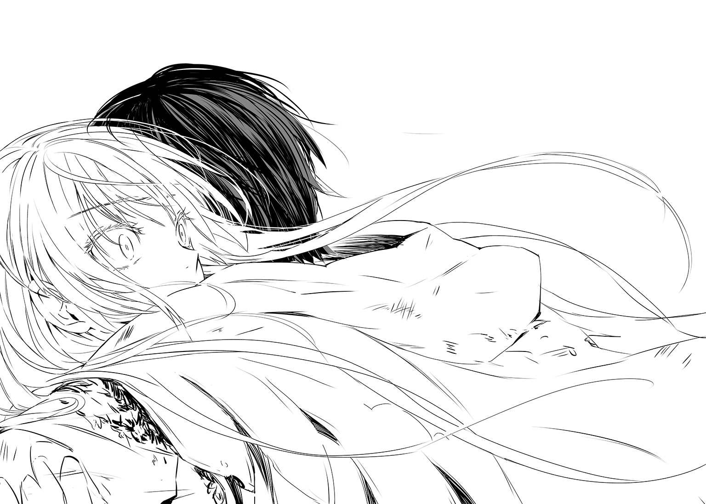
「いや」
彼女が首を横に振るとは正直、まったく思っていなかったので、呆気にとられてしまった。
「......え――」
「呼び方」
「あ」
「二度とわたしを、姫なんて呼ばないで。――ハイジ」
「はい」
ハイジは恥じらう彼女の名を呼んだ。
サクラ、と。
×
――公都デスティニアレスは異様な興奮、熱気が絶頂に達したまさにその瞬間に、未曾有の事態によって極大の混乱に叩き落とされたのだ。
老爺も、老婆も、職人も、人夫も、商人も、その女房も、若者たちはもちろん、年端もいかない子供たちまで、武器を、なければ棒切れでも何でも手にとって、即座に打って出かねない勢いだった。
その最中に、デスティニア公国の国主であり、当然のことながら中心であり、実在する象徴であるドリアン公が、まさしく公衆の面前で、爆死したのだ。
帝国軍が公都に迫りつつあることは誰もが知っていたし、むろん不安に怯えていた。だが、我らがドリアン公に付き従い、皆で一致団結して総攻撃すれば、帝国軍など容易に粉砕できる。勝利は疑いえない。昂揚がもたらす陶酔感の中でそう確信していた人々は、派手に希望を破壊されて混乱し、泣き叫んで、逃げ惑い、一部は暴徒と化した。警備の兵も似たような有様だったし、暴徒を鎮圧しようとする兵もいるにはいたが、彼らと民衆との間に血が流れると、状況はさらに悪くなった。公都から脱出しようと、数百、数千の男女が城門に殺到した。閉ざされた城門を叩く者、投石する者が相次いだ。失火か放火か、公都内の各所で火災が発生した。
むろん、ドリアン公を暗殺――と言うには堂々と殺害してのけた赤髪の男は、追われる身となった。だが、逃げる赤髪の男を追跡し、捕縛しようにも、公都は混沌としすぎていた。
赤髪の男は公都の入り組んだ街路を駆け回って追っ手の兵を完全に撒くと、人気のない路地で一息ついた。
「......なんとまあ。砂上の楼閣だったとでもいうのか。こうまで脆いとは――」
苦い笑みを浮かべて、自らの両手を見る。
「だが、やむをえぬ。他に手段はなかった......」
「お兄様」
呼びかける声に応じる前に、赤髪の男は一度、目を伏せた。
「――ああ。妹よ」
「ご苦労様です、お兄様」
路地の向こうから女が歩いてくる。赤い髪の、甘ったるい顔をした女。だが、その性分は決して甘くはあるまい。
「狗塚宮様もさぞかし喜ばれることでしょう。これでデスティニア公国制圧の一番手柄は、太軍師卯立様の――ひいては亞璃簾宮の小娘ではなく、狗塚宮様のものになるはずです」
「うむ。......そうだな」
狗塚宮。あの狗塚宮久手紘か。卯立。――臣二位の卯立豊衛。亞璃簾宮の小娘とは、亞璃簾宮太華子のことだろう。
いずれにせよ、赤髪の女――アナスタシヤ・ザラナスターは、狗塚宮久手紘の下で働いているということだ。
狗塚宮はカバラ大王国制圧を主導して成功させ、デスティニア公国には暗殺者を送りこんだ。暗殺者は廃王とその妹。廃王はまんまと使命を成し遂げた。
「お兄様？」
アナスタシヤは廃王の前で足を止め、わずかに首を傾げた。
「どうかなさったのですか？ お怪我でも？」
「いや」
廃王は微笑んでみせ、手をのばしてアナスタシヤの頰を軽く撫でた。
「大事ない。ただ――そう、言うまでもなく、ドリアン公も魔性を持っていた。それがいかなるものかはわからないが......死の間際に、公が私に何かしたのかもしれぬ」
「大丈夫ですか？」
アナスタシヤは左右に目を配ってから、廃王の手を握って唇を寄せた。
「......そう言えば、いつものお兄様とは少し違うような気がするわ」
「まだ昂ぶってもいる」
廃王はアナスタシヤを抱き寄せた。アナスタシヤは「あっ......」と声を洩らしはしたが、抵抗はしなかった。――なるほど。こういう兄妹か。廃王は内心で呟きながらアナスタシヤの額に、そして頰に接吻して、唇を吸った。
「......いけないわ、お兄様。こんなことは――」
「黙っていろ、アナスタシヤ」
廃王はアナスタシヤを貪りつつ忙しく頭を巡らせた。前回は双子の弟だったから、さしたる問題は生じなかった。だが、こうなってしまうと、さすがに正体を明かしたところで誰も信じはすまい。戦略を練らねばならないだろう。認めるしかない。彼は失敗を犯した。大きな失敗を。理由なきことではないが、過信していたのだ。結果、彼は多くを失った。だが、もっとも決定的なものを彼はなくしていない。それを彼から奪うことは、誰にもできないのだ。
彼は死なない。彼の魔性が、彼を殺した者で、彼を生かしつづける。――ライチアリス。死せざる永遠の女よ。ゆえに我々は似合いの夫婦なのだ。なぜそれがわからぬ――。
あとがき
僕は肝試しが大好きです。怖くはないのです。たとえば肝試しというと墓地なんかに行ったりするでしょう。夜の真っ暗な墓地。あれ、何が怖いんですかね？ だって、暗いだけでしょう。ただ暗いだけの墓地ですよ。墓地といったら墓石が並んでいて、遺骨が納められているわけですが、ようするにそれだけです。何が怖いんですか？ 僕にはわからない。本当にまったくわからないのです。でも、けっこう怖がる人が多いですよね。僕はそれがおもしろいんです。怖がる人たちを見るのが、人々の怖がる様子が好きなんです。楽しくてしょうがないんです。子供のころからそうなんですよね。
怪談なんかも好きです。聞くのはべつに好きじゃないんですが、怪談を聞かせるのは大好きです。僕は高校の修学旅行、さぼっちゃって行かなかったのですが、中学時代、あれは修学旅行じゃなくて、その予行練習、宿泊研修だったと思います、同室の連中に怪談を聞かせて怖がらせたときのことをはっきりと覚えています。いやあ、本当にみんな、いい感じで怖がってくれました。若干強面系の同級生なんかもいたんですが、そういうやつにかぎってビビりまくったりして、あれはもう本当に笑えましたね。楽しかったなあ。
人が悪いという言い方があります。僕は昔からよくそう言われました。おまえは人が悪い。性格が悪い。とんでもないやつだ。悪人だ。人間じゃない、と言われたこともあります。そんなことはないと思うんですが。そこまでひどくはありません。人を殺したことはもちろんないし、殴ったことだって、たぶんありません。ツッコミを入れる際、よく手や足が出てしまうのですが、加減します。僕は他人に危害を加えたことは、そんなにはないんです。少なくとも、犯罪になるようなことはしていません。誓って言いますが、これは事実です。
僕はただ、人が怖がっている顔や、うろたえている表情、仕種、行動、そういったものを見るのが好きなんです。そういうのが楽しいんですよね。だから、実害が出ない範囲で人を怖がらせるのは大好きなんです。肝試しに連れだしたり、怪談をするくらいなら、まあいいじゃないですか。許容範囲だと思うんです。僕は楽しいことが好きで、人を怖がらせて、怖がっている人を見物するのは、僕にとってとても楽しいことなんですよね。娯楽なんです。小説を書くのも、そういう部分があるのかもしれません。
さて、紙数が尽きました。担当の編集者Ｔ氏、編集者Ｍ氏、いつもすばらしすぎるイラストを描いてくださるすてきな吟さん、デザインを担当してくださったＶＯＬＡＲＥの関善之さん、その他、本書の制作、販売に関わった方々、そして今、本書を手にとってくださっている皆様に心からの感謝と胸一杯の愛をこめて、今日のところは筆をおきます。またお会いできたら嬉しいです。
十文字 青
著者紹介
十文字 青 じゅうもんじ あお
函館梁川町にシュウェットカカオというチョコレート専門店があるのですが、その隣のアイス専門店のショコラソフトクリームは非常に濃厚で美味です。けど、四月から十月中旬頃までの季節限定営業なんですよね。残念。
illustration
吟 ぎん
十文字先生のツイッターでたまに流してる長文、面白いからまとめて語録にしてほしいです。
表紙はサクラと亞璃簾宮太華子（ありすのみやたかこ）さんです。
ダッシュエックス文庫DIGITAL
サクラ×サク ０４
滅愛セレナーデ
著者 十文字 青
© AO JUMONJI 2015
２０１５年11月30日発行
この電子書籍は、ダッシュエックス文庫「サクラ×サク ０４ 滅愛セレナーデ」
２０１５年10月28日発行の第１刷を底本としています。
発行者 鈴木晴彦
発行所 株式会社 集英社
〒１０１－８０５０
東京都千代田区一ツ橋２丁目５番10号
０３－３２３０－６０８０（読者係）
編集協力 森山修平
制作所 株式会社ＩＣＥ
本作品の全部また一部を無断で複製、転載、改竄、インターネット上に掲載すること、および有償無償に関わらず、本データを第三者に譲渡することを禁じます。なお個人利用の目的であっても、コピーガードを解除しての複製は、法律で禁じられています。